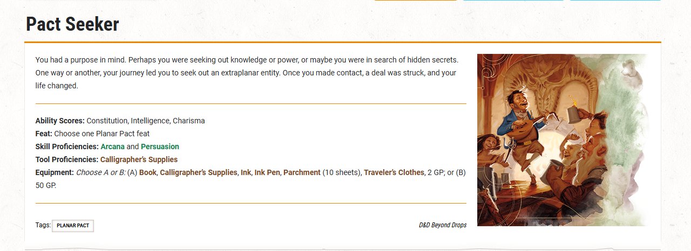
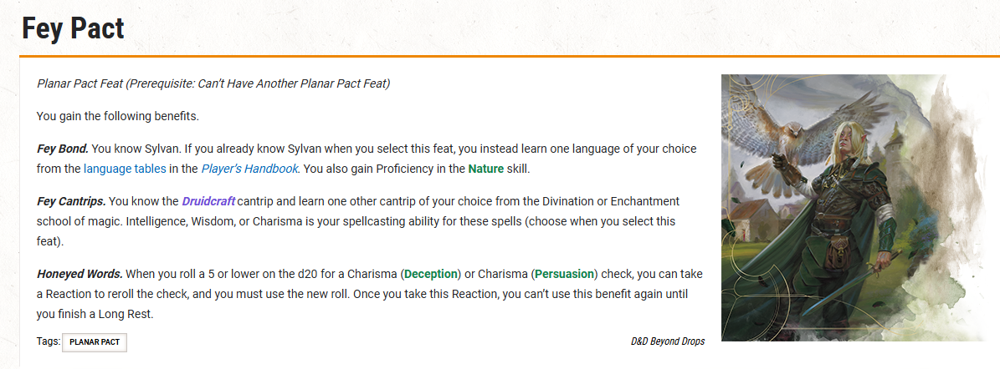
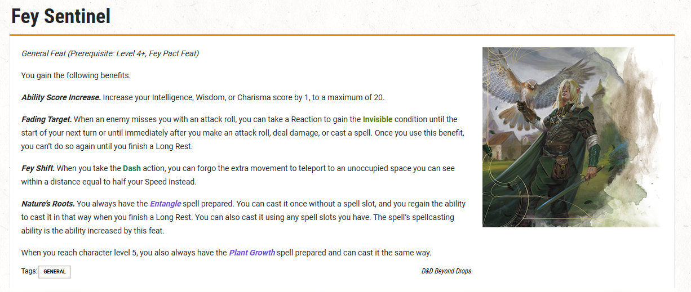
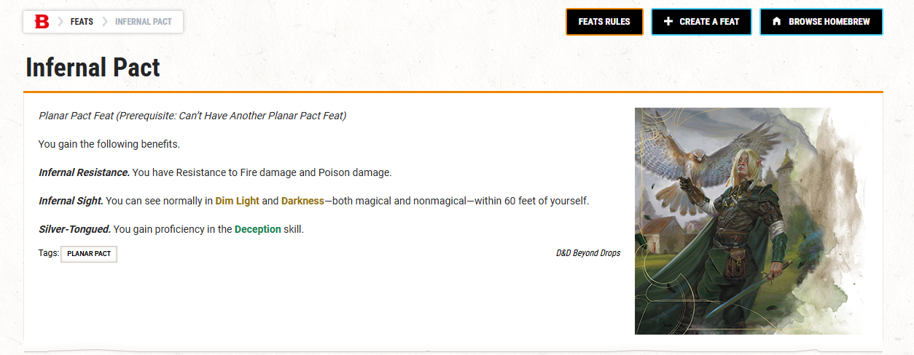
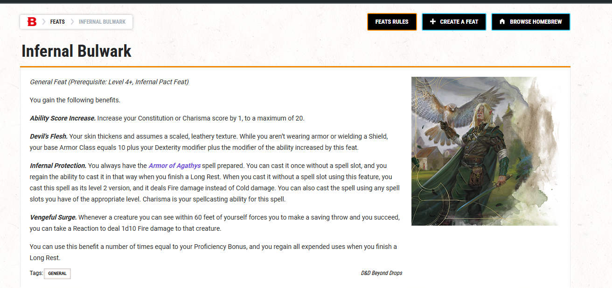
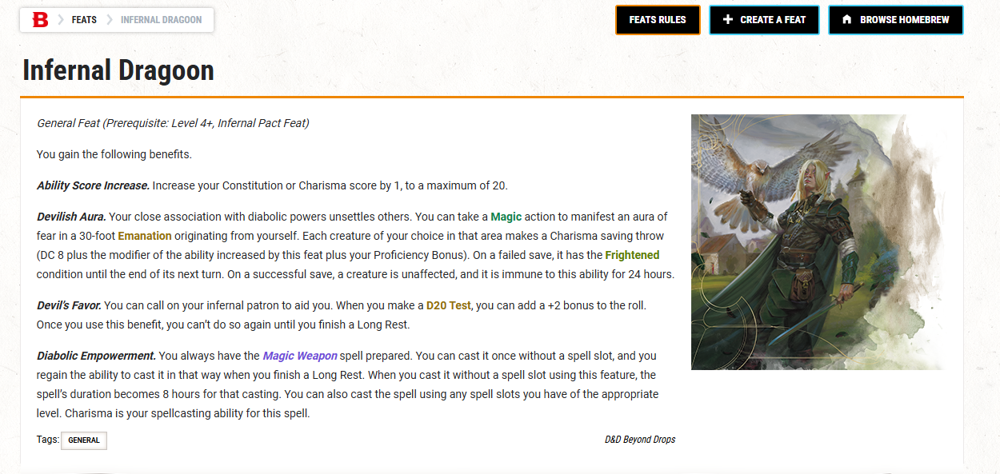

발굴된 아르카나 2025 - Unearthed Arcana 2025
이 제목 아래 독립 본문 없이 다음 표나 하위 제목으로 이어집니다.
전문 번역본
첨부된 UA PDF 8종의 추출 원문을 문단 단위로 빠짐없이 한국어로 옮긴 별도 문서입니다. PDF의 제목 순서와 규칙 구간을 따라가도록 구성했습니다. 클래스명, 서브클래스명, 능력명은 한글명 - Original English 형식으로 표기했습니다.
원본 추출 파일: UA2025-ArcaneSubclassesUpdate.txt. 아래 내용은 해당 PDF 텍스트의 섹션 순서를 따라 축약 없이 번역한 전문입니다. 번역 문단 수: 227.
이 제목 아래 독립 본문 없이 다음 표나 하위 제목으로 이어집니다.
이 플레이테스트 문서는 곧 출시될 제품을 위해 설계된 자료를 제시하는 Unearthed Arcana 기사 시리즈의 일부입니다. 여기에 있는 자료는 2024 Player's의 규칙을 사용합니다.
안내서.
이 문서는 Unearthed Arcana에 마지막으로 등장한 이후 수정된 6개의 하위 클래스를 제시합니다.
아케인 아처(파이터), 몽크(문신 전사), 컨저러(마법사), 인챈터(마법사), 네크로맨서(마법사), 트랜스뮤터(마법사).
이 문서는 플레이 테스트 및 피드백을 위해 제공됩니다. 여기의 옵션은 실험적이며 초안 형식입니다. 그들은 공식적으로 게임의 일부가 아닙니다. 귀하의 피드백은 공식 채택 여부를 결정하는 데 도움이 됩니다.
이 UA를 플레이테스트하는 방법. 이 자료를 플레이해 보시기 바랍니다. 이 자료를 가지고 플레이하려면 해당 자료를 캠페인에 포함시키거나 하나 이상의 특별 플레이 테스트 세션을 실행하세요. 이러한 세션에서는 자신만의 모험을 만들거나 Quests from the Infinite Staircase와 같은 소스의 짧은 모험을 사용할 수 있습니다.
전력 수준. 여기에서 읽는 캐릭터 옵션은 2024 플레이어스 핸드북의 옵션보다 다소 강력할 수 있습니다. 디자인이 플레이 테스트에서 살아남으면 게시하기 전에 그 성능을 바람직한 수준으로 조정합니다. 이는 옵션이 최종 형태에서 다소 강력할 수 있음을 의미합니다.
피드백. 이 자료에 대한 피드백을 제공할 수 있는 가장 좋은 방법은 D&D Beyond에서 발표할 설문조사를 이용하는 것입니다. 이 자료를 공식화하면 여러분의 피드백을 바탕으로 다듬어 D&D 책에 실릴 것입니다.
이 문서에 대한 피드백을 제공하는 것은 D&D의 미래를 형성하는 데 도움을 줄 수 있는 한 가지 방법입니다!
이 섹션에서는 다음과 같은 하위 클래스를 제공합니다.
아케인 아처, 문신 전사, 요술사, 인챈터, 네크로맨서, 트랜스뮤터.
마법이 부여된 탄약을 통해 마법 효과를 적용하십시오. 아케인 궁수(Arcane Archer)는 공격에 마법을 결합하여 초자연적인 효과를 생성하는 독특한 엘프 궁술 방법을 연구합니다. 최초의 아케인 궁수는 자신의 공동체를 감시하고 마법이 주입된 화살을 사용하여 몬스터와 침입자를 물리쳤습니다. 수세기에 걸쳐 다른 종들은 마법 적성과 궁술을 혼합하는 이 방법을 배웠습니다. 이 궁수들은 이 방법을 다양한 종류의 원거리 무기와 전투 외 생활의 모험 측면으로 확장했습니다.
Unearthed Arcana에 마지막으로 등장한 이후 이 하위 클래스의 주요 업데이트는 다음과 같습니다.
• 커브샷이 동일하게 사용되도록 수정되었습니다.
탄약은 새로운 공격 굴림입니다.
• 마법 탄약은 다음과 같은 새로운 기능입니다.
전투 밖에서 사용할 수 있는 탄약에 마법 효과를 부여합니다.
• 이제 Ever-Ready Shot을 이후 레벨에서 사용할 수 있습니다.
하지만 항상 소모된 비전 사격 1개를 회복합니다.
주사위.
• Arcane Burst는 다음을 부여하는 새로운 기능입니다.
불굴의 추가 효과.
• Masterful Shots가 새롭게 디자인되어 이제
위치를 바꾸고 공격할 수 있습니다.
마법 이론과 자연의 비밀을 배우면 다음과 같은 혜택을 얻을 수 있습니다.
주문. 당신은 Druidcraft를 알고 있거나
요술 소마법. 지능은 주문 시전 능력입니다.
기술. 아르카나에 능숙해지고,
자연 기술. 이러한 숙련도 중 하나를 이미 갖고 있는 경우 대신 선택한 다른 기술의 숙련도를 얻습니다(또는 둘 다 보유한 경우 다른 두 가지 기술의 숙련도를 얻습니다).
샷으로 특별한 마법 효과를 발휘하는 방법을 배웁니다.
신비한 사격 옵션. 이 하위 클래스 설명 뒷부분의 "비밀 사격 옵션" 섹션에서 원하는 두 가지 비전 사격 옵션을 배울 수 있습니다.
파이터 레벨 7, 10, 15, 18에 도달하면 원하는 추가 비전 사격 옵션을 배울 수 있습니다. 새로운 비전 사격 옵션을 배울 때마다 알고 있는 옵션 하나를 다른 옵션으로 대체할 수도 있습니다.
아케인 샷을 사용합니다. 턴당 한 번씩 탄약 속성이 있는 무기를 사용하여 원거리 공격을 할 때 해당 공격에 신비한 사격 옵션 중 하나를 적용할 수 있습니다. 옵션에 공격 굴림이 포함되지 않는 한 크리처을 공격하고 피해를 입힐 때 옵션을 사용하기로 결정합니다.
이 기능을 지능 수정치만큼 여러 번 사용할 수 있습니다(최소 한 번). 단기 또는 장기 휴식을 마치면 소모한 사용 횟수를 모두 회복합니다.
아케인 샷 다이. Arcane Shot 옵션은 Arcane Shot Die를 참조합니다. 당신의 신비한 사격 주사위는 d6입니다.
투구를 저장합니다. Arcane Shot 옵션에 내성 굴림이 필요한 경우 DC는 8에 지능 수정치 및 숙련도를 더한 것과 같습니다.
보너스.
더 높은 수준에서. 특정 파이터 레벨에 도달하면 Arcane Shot Die가 변경됩니다.
주사위는 레벨 10에서는 d8, 레벨 15에서는 d10, 레벨 18에서는 d12가 됩니다.
새로운 목표를 향해 잘못된 샷을 보내는 방법을 배웁니다. 탄약 속성이 있는 무기로 공격 굴림을 하고 빗나가면, 공격이 빗나간 직후 추가 행동으로 총알이 새로운 대상을 향해 튕겨 나가게 할 수 있습니다. 새로운 목표는 무기의 범위 내에서 그리고 공격의 원래 목표로부터 60피트 이내에 볼 수 있는 크리처이어야 합니다.
새로운 목표에 대해 공격 굴림을 합니다.
탄약에 마법의 속성을 부여하는 방법을 배웁니다. 마법 행동으로, 비마법 탄약에 다음 마법 속성 중 하나를 주입하고 무기 범위 내에서 볼 수 있는 단단한 표면에 발사할 수 있습니다. 적중 시 탄약의 효과가 활성화되고, 탄약은 효과가 지속되는 동안 충돌한 표면에 부착됩니다. 효과가 끝나면 탄약이 파괴됩니다.
이 기능을 한 번 사용하면 단기 또는 장기 휴식을 마칠 때까지 다시 사용할 수 없습니다. Second Wind를 사용하여 이 기능의 사용을 복원할 수도 있습니다(조치가 필요하지 않음).
다크닝샷. 마법의 그림자가 1분 동안 탄약에서 나오는 15피트 발산을 채웁니다. 발산에 있는 비마법적 불꽃은 꺼지고, 발산에 있는 크리처은 지혜(지각) 판정과 수동적 인지에 -5 페널티를 받습니다.
샷 잠금 해제. 폭발적인 마법이 탄약에서 나오는 15피트 발산을 채웁니다. 최대 300피트 떨어진 곳까지 들리는 큰 노크 소리도 탄약에서 나옵니다. 일상적인 자물쇠로 잠겨 있거나 막혀 있거나 막혀 있는 발산의 모든 물체는 잠금 해제되거나 막혀 있거나 막혀 있지 않은 상태가 됩니다. 객체에 여러 개의 잠금이 있는 경우 그 중 하나만 잠금 해제됩니다.
포도나무 샷. 탄약에서 60피트 길이의 덩굴이 자랍니다. 당신과 다른 생명체들은 그 위로 올라갈 수 있습니다. 포도나무는 10분 후에 시들어 버립니다.
우선권을 굴릴 때 신비한 사격 사용 횟수를 한 번 회복할 수 있습니다.
당신은 비전의 숙달로 크리처체를 당신에게서 멀어지게 밀어낼 수 있습니다. Indomitable을 사용할 때, 당신에게서 나오는 10피트 발산에서 당신이 선택한 각 크리처은 당신의 Arcane Shot DC에 대한 근력 내성 굴림에 성공해야 하며 그렇지 않으면 당신에게서 직선으로 최대 20피트까지 밀려나야 합니다.
당신은 명사수에 민첩성을 사용합니다. 당신이 볼 수 있는 크리처이 공격 굴림으로 당신을 놓치면 기회 공격을 유발하지 않고 공격자로부터 속도의 절반까지 이동하는 반응을 취할 수 있습니다. 그런 다음 공격자가 무기의 범위 내에 있는 경우 이 반응의 일부로 공격자에 대해 원거리 공격 굴림을 할 수 있습니다.
Arcane Shot 옵션은 여기에 알파벳순으로 표시됩니다.
배니싱 샷. 탄약은 일시적으로 무해한 반비행기에서 목표물을 격리합니다.
당신이 공격한 크리처은 비전 사격 주사위 굴림 1개에 해당하는 추가 심령 피해를 입고 매력 내성 굴림에 성공하지 않으면 추방되어야 합니다. 추방된 동안 크리처은 무력화 상태가 되고 속도는 0이 됩니다. 다음 턴이 끝날 때 대상은 자신이 떠난 공간에 다시 나타나거나, 해당 공간이 점유된 경우 가장 가까운 비어 있는 공간에 다시 나타납니다.
매혹적인 샷. 당신의 탄약이 목표물을 속입니다. 당신이 명중한 크리처은 비전 사격 주사위 2개 굴림에 해당하는 추가 심령 피해를 입고 지혜 내성 굴림에 성공하거나 다음 턴이 시작될 때까지 매혹 상태를 유지해야 하며, 당신이나 대상(당신의 선택)으로부터 30피트 이내의 동맹국 중 하나를 매력자로 취급해야 합니다. 매혹 상태는 매머가 대상을 공격하거나 피해를 주거나 강제로 내성굴림을 하게 되면 일찍 종료됩니다.
버스팅샷. 탄약에 폭발력 에너지를 불어넣습니다. 당신이 크리처에게 피해를 입힌 직후, 당신의 목표와 목표로부터 발생하는 10피트 발산 내의 각 크리처은 비전 사격 주사위 2개 굴림에 해당하는 근력 피해를 입습니다.
약화 샷. 탄약이 목표의 근력을 약화시킵니다. 당신이 공격한 크리처은 Arcane Shot Die 2개 굴림에 해당하는 추가 괴사 피해를 입습니다. 목표는 또한 건강 내성 굴림에 성공하거나 다음 턴이 끝날 때까지 중독 상태를 유지해야 합니다. 이런 식으로 중독된 대상이 공격 굴림으로 명중할 때마다 해당 공격의 총 피해에서 비전 사격 주사위 굴림 1개에 해당하는 양을 뺍니다.
파악샷. 탄약이 목표 주위에 움켜쥐는 가시덤불을 생성합니다. 당신이 명중한 크리처은 비전 사격 주사위 1개 굴림에 해당하는 추가 베기 피해를 입고 근력 내성 굴림에 성공하거나 1분 동안 또는 이 옵션을 다시 사용할 때까지 억제 상태를 유지해야 합니다. 목표 또는 도달 범위 내에 있는 크리처은 Arcane Shot DC에 대해 근력(운동) 확인을 수행하여 가시나무를 제거하고 성공적인 확인 시 대상에 대한 억제 상태를 종료하는 조치를 취할 수 있습니다.
피어싱 샷. 탄약에 천상의 품질을 부여합니다. 이 옵션을 사용하면 공격에 대한 공격 굴림을 하지 않습니다. 대신, 탄약은 1피트 너비의 30피트 선으로 전방으로 발사된 후 사라집니다. 탄약이 단단한 물체를 통과하기 때문에 라인은 엄폐물을 무시합니다. 라인에 있는 각 크리처은 민첩 내성 굴림을 해야 합니다. 저장에 실패하면 크리처은 마치 맞은 것처럼 피해를 입으며 Arcane Shot 2개 굴림에 해당하는 추가 관통 피해를 입습니다.
주사위. 성공적으로 저장하면 크리처은 절반의 피해를 입습니다.
샷을 구하고 있습니다. 당신의 탄약은 목표물을 찾을 수 있습니다. 이 옵션을 사용하면 공격에 대한 공격 굴림을 하지 않습니다. 대신, 지난 순간에 본 크리처 중 하나를 선택하세요. 탄약은 해당 생명체를 향해 날아가고, 필요한 경우 모퉁이를 돌며 절반을 무시합니다.
표지 및 4분의 3 표지. 대상이 무기의 장거리 범위 내에 있으면 대상은 민첩 내성 굴림을 해야 합니다. 저장에 실패하면 대상은 맞은 것처럼 피해를 입으며 Arcane Shot Die 2개 굴림에 해당하는 추가 Force 피해를 입으며 대상의 현재 위치를 알 수 있습니다. 내성굴림에 성공하면 대상은 피해를 절반만 입습니다. 목표물이 무기의 장거리 범위를 벗어나면 탄약은 최대한 멀리 이동한 후 사라집니다.
섀도우 샷. 탄약은 그림자로 적의 시야를 가립니다. 당신이 명중한 크리처은 비전 사격 주사위 1개 굴림에 해당하는 추가 심령 피해를 입으며, 지혜 내성 굴림에 성공하거나 다음 턴이 끝날 때까지 실명 상태를 유지해야 합니다.
마법의 문신으로 무술을 강화하세요 다중 우주의 신체 표시 전통을 바탕으로 문신을 한 전사는 마법 문신에 깃든 신비한 근력을 사용할 수 있습니다.
이 승려들은 무술의 기량과 통찰력이 성장함에 따라 문신을 얻습니다. 문신을 한 전사는 문신의 모양을 바꿔 일련의 물리적, 마법적 효과를 이용할 수 있습니다.
Unearthed Arcana에 마지막으로 등장한 이후 이 하위 클래스의 주요 업데이트는 다음과 같습니다.
• 문신을 한 전사가 재설계되었습니다. 와 함께
일부 예외를 제외하면 이제 문신은 주문 대신 추가 능력에 중점을 둡니다.
• 야수 문신은 여전히 소마법을 제공하지만 이제는 각각
옵션은 레벨 1 주문과 관련되지 않은 이점을 제공합니다.
• 천상의 문신은 다음과 같이 재설계되었습니다.
전투 외 집중 포인트 사용.
• Nature Tattoo를 응축하여 제공합니다.
변경될 수 있는 작은 선택 항목에 대한 피해 저항입니다.
• Monster Tattoos가 새로운 디자인으로 재설계되었습니다.
옵션.
당신은 이 하위 클래스의 다른 기능에 설명된 마법 문신을 얻습니다. 문신은 당신이 원하는 곳 어디든 당신의 몸에 나타납니다. 손상이나 부상은 마법 문신의 기능을 손상시키지 않습니다. 마술 문신은 낙인, 흉터, 모반, 비늘 패턴 또는 기타 미용 변형처럼 보일 수 있습니다.
문신 효과에 내성 굴림이 필요한 경우 DC는 8에 지혜 수정치, 숙련도 보너스를 더한 값입니다. 문신으로 부여된 주문에 대한 주문 시전 능력은 지혜입니다.
긴 휴식을 마칠 때마다 한 목록에서 선택한 옵션을 동일한 목록의 다른 옵션으로 변경하여 마법 문신 중 하나의 모양을 변경할 수 있습니다.
당신은 두 개의 동물 문신을 얻습니다. 다음 옵션 중에서 두 개의 문신을 선택하십시오.
박쥐. 당신은 Dancing Lights 캔 트립을 알고 있습니다. 또한 10피트 범위의 실명 시야를 얻습니다.
나비. 당신은 빛의 캔 트립을 알고 있습니다. 높이뛰기를 할 때 근력 수정치 대신 민첩 수정치를 사용하여 얼마나 높이 뛸 수 있는지 결정할 수 있습니다.
기중기. 당신은 안내 캔 트립을 알고 있습니다. Flurry of Blows에 의해 부여된 공격으로 크리처을 놓친 경우, 다음 턴이 끝나기 전에 해당 크리처에 대한 다음 공격 굴림에 이점을 얻습니다.
말. 당신은 메시지 캔 트립을 알고 있습니다. 바람의 발걸음을 사용하기 위해 집중 포인트 1개를 소비하면 다음 턴이 시작될 때까지 속도가 10피트 증가합니다.
남생이. 당신은 Spare the Dying 소마법을 알고 있습니다. 환자 방어를 사용하기 위해 집중 포인트 1개를 소비하면 다음 턴이 시작될 때까지 AC에 +1 보너스를 받습니다.
당신은 천상의 현상을 묘사하는 추가 마법 문신을 얻습니다. 다음 옵션 중에서 문신을 선택하세요.
혜성. 검색 조치를 취할 때 집중 포인트 1개를 소비하여 무술 주사위를 굴리고 굴린 숫자를 추가할 수 있습니다.
지혜 점검.
식. 숨기기 행동을 할 때 집중 포인트 1개를 소비하여 무술 주사위를 굴리고 굴린 숫자를 민첩(스텔스) 검사에 추가할 수 있습니다.
햇살. 연구 행동을 할 때 집중 포인트 1개를 소비하여 무술 주사위를 굴리고 굴린 숫자를 숫자에 추가할 수 있습니다.
지능검사.
당신은 자연적인 특징을 묘사하는 추가 마법 문신을 얻습니다. 다음 옵션 중에서 문신을 선택하세요.
바다 폭풍. 냉기, 번개, 천둥 등 원하는 피해 유형 중 하나에 대한 저항력을 얻습니다. 단기 또는 장기 휴식을 완료하거나 Uncanny Metabolism 기능을 사용할 때마다 이 선택을 변경할 수 있습니다.
화산. 산성, 화염, 독 등 원하는 피해 유형 중 하나에 대한 저항력을 얻습니다. 단기 또는 장기 휴식을 완료하거나 Uncanny Metabolism 기능을 사용할 때마다 이 선택을 변경할 수 있습니다.
당신은 강력한 크리처을 묘사하는 마법 문신을 얻습니다. 다음 옵션 중에서 문신을 선택하세요.
보는 사람. 턴 시작 시 집중 포인트 1개를 소비하여 10분 동안 속도와 동일한 비행 속도를 얻을 수 있습니다. 이 비행 속도를 유지하는 동안 호버링을 할 수 있습니다.
추가로 매직 액션으로 집중 포인트 1개를 소비하여 눈에서 광선 4개를 발사할 수 있습니다.
120피트 내에서 볼 수 있는 하나의 목표 또는 여러 목표에 발사할 수 있습니다. 주문 시전 능력으로 지혜를 사용하여 각 광선에 대해 원거리 주문 공격을 수행합니다. 적중 시 공격은 무술 주사위 굴림 1개에 지혜 수정치를 더한 것과 동일한 힘 피해를 입힙니다.
크로매틱 드래곤. 자신의 차례에 공격 행동을 취할 때 집중 포인트 1개를 소비하여 공격 중 하나를 30피트 원뿔의 마법 에너지 방출로 대체할 수 있습니다.
피해 유형을 선택하세요: 산성, 냉기, 화염, 번개, 독. 해당 지역에 있는 각 크리처은 민첩 내성 굴림을 합니다. 저장에 실패하면 크리처은 무술 주사위 굴림 2개 +
지혜 수정자. 성공적으로 저장하면 크리처은 절반의 피해를 입습니다.
디스플레이서 비스트. Flurry of Blows 또는 Step of the Wind를 사용하기 위해 집중 포인트를 소비할 때, 해당 추가 행동의 일부로 Mirror Image 주문을 시전하기 위해 집중 포인트 1개를 소비할 수 있습니다.
트롤. 각 턴이 시작될 때, 당신이 피투성이이고 적어도 1을 가지고 있다면 당신은 5에 지혜 수정치를 더한 것과 같은 체력을 회복합니다.
HP. 단기 또는 장기 휴식을 마친 후 절단된 신체 부위가 다시 자랍니다.
공간을 가로질러 허공에서 크리처을 부르세요. 당신은 거리와 물질을 물리적 법칙보다는 유연한 지침으로 간주합니다. 마법사는 크리처을 공간에서 즉시 이동시키고 크리처을 소환하여 대신 싸우는 마법의 근력을 활용합니다.
Unearthed Arcana에 등장한 이후 이 하위 클래스의 주요 업데이트는 다음과 같습니다.
• 양성 전치(Benign Transposition)는 이제 추가 행동이며
더 자주 사용할 수 있습니다.
• 내구성 소환은 이제 소환된
임시 체력이 있는 동안 여러 피해 유형에 대한 저항력이 있는 크리처입니다.
• Splintered Summons는 다음과 같은 새로운 기능입니다.
나열된 소환 주문 중 하나를 시전하면 두 번째 크리처을 소환하게 됩니다.
추가 행동으로 당신은 볼 수 있는 비어 있는 공간으로 최대 30피트까지 순간이동합니다.
또는 중간 크기 이하의 크리처이 차지하는 범위 내 공간을 선택할 수도 있습니다. 그 크리처이 원하면 둘 다 순간 이동하여 장소를 바꿉니다.
이 기능을 지능 수정치만큼 여러 번(최소 한 번) 사용할 수 있으며 긴 휴식을 마치면 소모된 모든 사용을 회복합니다.
Conjuration 학교에서 두 가지 마법사 주문을 선택하세요. 각 주문은 레벨 2보다 높지 않아야 하며 무료로 주문서에 추가하세요.
또한, 이 클래스에서 새로운 수준의 주문 슬롯에 접근할 때마다 Conjuration 학교의 마법사 주문 하나를 무료로 주문서에 추가할 수 있습니다. 선택한 주문은 주문 슬롯이 있는 레벨이어야 합니다.
Benign Transposition 기능의 범위가 60피트로 증가합니다. 또한 이제 한 번의 작업을 완료하면 사용한 모든 사용을 다시 얻습니다.
단기 또는 장기 휴식.
주문 슬롯을 사용하여 크리처을 소환하거나 생성하기 위해 소환 주문을 시전하면 해당 크리처은 처음 나타날 때 마법사 레벨의 두 배에 해당하는 임시 체력을 얻습니다. 이러한 임시 체력을 갖고 있는 동안, 크리처은 힘, 괴저, 심령 및 방사능을 제외한 모든 피해 유형에 대한 저항력을 갖습니다.
피해를 입어도 Conjuration 주문에 대한 집중이 깨질 수는 없습니다.
주문 슬롯을 사용하여 Summon Aberration, Summon Construct, Summon Dragon, Summon Elemental 또는 Summon Fey를 시전할 때 해당 주문을 사용하여 하나가 아닌 두 마리의 크리처을 소환하도록 주문을 수정할 수 있습니다. 각 크리처은 같은 종류이며, 주문에 표시된 통계 블록과 규칙을 사용하고, 주문 범위 내에서 선택한 다른 비어 있는 공간에 나타나지만 소환된 크리처의 체력은 절반으로 줄어듭니다.
주문에 대한 집중력을 잃으면 두 크리처 모두 사라집니다.
이 기능을 사용하여 이러한 방식으로 주문을 수정한 후에는 다시 사용하기 전에 긴 휴식을 완료해야 합니다. 레벨 5+ 주문 슬롯을 확장하여 사용을 복원할 수도 있습니다(조치가 필요하지 않음).
입구와 다른 사람을 유혹하십시오. 당신의 마법은 마음을 구름으로 덮거나 사로잡습니다. 일부 인챈터는 평화를 장려하고 잔인함을 완화하기 위해 자신의 능력을 사용하는 반면, 다른 인챈터는 이기적인 목적을 위해 정신을 바꾸는 마법을 사용합니다. 많은 Enchanter는 그 사이 어딘가에 속합니다.
2014년 플레이어스 핸드북에 등장한 이후 이 하위 클래스의 주요 업데이트는 다음과 같습니다.
• 최면 존재가 성가신 움직임을 대체합니다.
집중을 사용하도록 재설계되어 다음 턴에 더 자유롭게 행동할 수 있습니다.
• 분할 마법은 이전 레벨에서 사용할 수 있습니다.
• Instinctive Charm이 다시 돌아오며 다음과 같이 새롭게 디자인되었습니다.
당신에 대한 공격을 빗나감으로 바꾸고 새로운 목표에 대한 공격 방향을 바꿀 가능성이 있습니다.
• Alter Memories가 다시 돌아왔습니다.
기억 수정이 여러 크리처을 목표로 삼을 수 있도록 재설계되었습니다.
당신은 당신이 선택한 기술 중 하나에 능숙해집니다: 속임수, 위협, 또는
설득.
게다가, 당신이 선택한 기술로 능력 판정을 할 때, 당신은 지능 수정치(최소 +1)만큼 판정에 보너스를 받습니다.
마법 부여 학교에서 두 가지 마법사 주문을 선택하세요. 각 주문은 레벨 2보다 높지 않아야 하며 무료로 주문서에 추가하세요.
또한, 이 클래스에서 새로운 수준의 주문 슬롯에 접근할 때마다 마법 부여 학교의 마법사 주문 하나를 무료로 주문서에 추가할 수 있습니다. 선택한 주문은 주문 슬롯이 있는 레벨이어야 합니다.
당신의 매력적인 말과 매혹적인 눈빛은 다른 생명체의 마음을 사로잡을 수 있습니다. 마법 행동으로 자신으로부터 10피트 이내에서 볼 수 있는 크리처 하나를 선택하십시오. 대상이 당신을 보거나 들을 수 있다면, 당신의 주문 내성 DC에 대한 지혜 내성 굴림에 성공해야 합니다. 또는 1분 동안 또는 집중이 끝날 때까지 대상이 당신으로부터 10피트 이상 떨어져 있거나, 당신을 보거나 들을 수 없거나, 대상이 피해를 입을 때까지 매혹 상태를 유지해야 합니다. 이런 식으로 매혹된 동안 대상은 무력화 상태가 되며 속도는 0이 됩니다.
이 기능을 한 번 사용하면 장기 휴식을 마칠 때까지 다시 사용할 수 없습니다. 레벨 1+ 주문 슬롯을 확장하여 사용을 복원할 수도 있습니다(조치가 필요하지 않음).
Charm Person과 같이 더 높은 레벨의 주문 슬롯을 사용하여 추가 크리처을 목표로 시전할 수 있는 마법 주문을 시전하면 주문의 유효 레벨을 1만큼 높일 수 있습니다.
당신은 이 기능을 지능 수정치만큼 여러 번 사용할 수 있으며 긴 휴식을 마치면 소모된 모든 사용을 회복할 수 있습니다.
당신이 볼 수 있는 30피트 내의 크리처이 공격 굴림으로 당신을 때릴 때, 당신은 공격자가 당신의 주문 내성 DC에 대해 지혜 내성 굴림을 하도록 강제하는 반응을 취할 수 있습니다.
저장에 실패하면 공격은 대신 실패하고, 공격 범위 내에 공격자 이외의 다른 크리처이 있는 경우 공격자는 동일한 공격 굴림을 사용하여 트리거링 공격으로 해당 크리처을 목표로 삼습니다. 공격 범위 내에 여러 크리처이 있는 경우 어느 크리처을 목표로 삼을 것인지 선택합니다.
이 반응을 한 번 사용하면 긴 휴식을 마칠 때까지 다시 사용할 수 없습니다. 주문 슬롯이 있는 마법 부여 주문을 시전하여 사용을 복원할 수도 있습니다.
크리처에게 마법을 부여하고 기억을 변경할 수 있습니다. 당신은 항상 수정
기억 주문을 준비했습니다. 주문을 시전할 때 해당 크리처이 주문 범위 내에 있는 경우 두 번째 크리처을 목표로 삼을 수 있습니다.
죽음과 불사의 근력을 지휘하십시오. 당신은 삶, 죽음, 불사의 우주적 근력을 탐험합니다. 네크로맨서로서 당신은 모든 생명체에 생명을 불어넣는 에너지를 조작하는 방법을 배웁니다. 진행하면서 마법을 사용하여 크리처의 생명력을 흡수하고 생명 에너지를 마법의 근력으로 변환하는 방법을 배웁니다.
많은 사람들이 네크로맨서를 위협적이거나 악랄한 존재로 보지만, 모든 네크로맨서가 악한 것은 아닙니다.
그럼에도 불구하고, 삶과 죽음의 조작은 많은 사회에서 금기시되는 것으로 간주됩니다.
Unearthed Arcana에 마지막으로 등장한 이후 이 하위 클래스의 주요 업데이트는 다음과 같습니다.
• 강령술 주문서는 이제 다음을 사용할 수 있습니다.
스켈레톤이나 좀비를 소환하는 익숙한 주문을 찾으면 Grim Harvest가 이제 선택한 언데드 크리처의 체력을 복원합니다.
• 언데드 노예는 다음을 사용하도록 재설계되었습니다.
죽은 주문에 애니메이션을 적용하고 추가 보너스를 제공합니다.
• Harvest Undead(이전의 Undead Secrets)에는
당신이 조종하는 언데드 크리처을 파괴할 때 체력을 회복하도록 재설계되었습니다.
• 이제 Death's Master를 사용하여 버스트를 생성할 수 있습니다.
언데드의 HP가 0으로 감소할 때 괴사 에너지가 발생합니다.
강령술 학교에서 두 가지 마법사 주문을 선택하세요. 각 주문은 레벨 2보다 높지 않아야 하며 무료로 주문서에 추가하세요.
또한, 이 클래스에서 새로운 수준의 주문 슬롯에 접근할 때마다 강령술 학교의 마법사 주문 하나를 무료로 주문서에 추가할 수 있습니다. 선택한 주문은 주문 슬롯이 있는 레벨이어야 합니다.
주문서에 있는 강령술의 비밀은 추가 능력을 부여합니다. 당신은 다음과 같은 이점을 얻습니다.
괴사 저항. 당신은 저항력이 있습니다
괴사 손상.
끔찍한 수확. 주문 슬롯을 사용하여 강령술 주문을 시전할 때, 자신으로부터 60피트 이내에서 볼 수 있는 언데드 크리처을 선택하여 소모한 주문 슬롯 레벨에 자신의 체력을 더한 만큼의 HP를 회복할 수 있습니다.
마법사 수준.
언데드 패밀리어. Find Familiar 주문이 주문서에 나타납니다. 주문을 시전할 때 패밀리어의 일반 형태 중 하나를 선택하거나 다음 특수 형태 중 하나를 선택합니다: 해골 또는 좀비(패밀리의 통계 블록은 플레이어스 핸드북의 부록 B 참조).
당신은 더 많은 강령술적 통찰력을 발견하고 이를 주문서에 기록했습니다. 주문서를 들고 있는 동안 다음과 같은 혜택을 받습니다.
무덤 탄력성. Arcane Recovery를 사용하면 탈진 레벨이 1 감소합니다.
압도적인 괴사. 마법사 주문 및 마법사 기능으로 인한 피해는 무시됩니다.
괴사 손상에 대한 저항.
당신은 항상 Animate Dead를 준비하고 주문 슬롯을 소비하지 않고 한 번 시전할 수 있습니다.
주문을 시전하기 시작할 때마다 주문의 유효 레벨이 1씩 증가하도록 수정할 수 있습니다.
또한 언데드를 생성하거나 소환하는 주문 슬롯을 사용하여 강령술 주문을 시전할 때마다 언데드는 다음 혜택을 얻습니다.
언데드 인내. 언데드의 최대 체력과 현재 체력은 사용된 주문 슬롯의 레벨에 주문 지속 시간 동안 지능 수정치를 더한 만큼 증가합니다.
위축의 일격. 언데드가 공격 굴림으로 크리처을 칠 때마다 언데드는 지능 수정치(최소 1 괴사 피해)만큼 추가 괴사 피해를 입힙니다.
당신은 삶과 죽음의 미묘한 차이에 대해 더 많은 비밀을 배웠습니다. 당신이 피투성이가 되었지만 피해를 입어 완전히 죽지 않은 직후, 당신은 당신이 조종하는 언데드 크리처을 0 HP로 줄이는 반응을 취할 수 있습니다. 그런 다음 즉시 귀하의 체력과 동일한 수의 체력을 회복합니다.
마법사 수준.
주문서에 있는 난해한 의식을 통해 죽음의 세력을 통제할 수 있습니다. 주문서를 들고 있는 동안 다음과 같은 혜택을 받습니다.
언데드를 강화하십시오. 추가 행동으로 60피트 이내에 강령술 주문으로 생성하거나 소환한 언데드를 원하는 만큼 선택하세요. 그 언데드들은 각각 당신의 마법사 레벨과 동일한 임시 체력을 얻습니다.
언데드가 이 기능을 통해 임시 체력을 얻으면 다음 24시간 동안 이런 방식으로 다시 얻을 수 없습니다.
언데드를 진화시키세요. 당신이 볼 수 있는 언데드 크리처의 체력이 0으로 줄어들면 괴사 에너지로 폭발하게 할 수 있습니다. 크리처의 소모되지 않은 Hit Dice(반올림, 최소 1d6)의 절반에 해당하는 수의 d6을 굴리고 함께 추가합니다. 언데드에서 유래한 10피트 발산의 각 크리처은 민첩 내성 굴림을 합니다. 저장에 실패하면 대상은 굴린 숫자만큼 괴저 피해를 입고 다음 턴이 시작될 때까지 반응을 취할 수 없습니다. 내성굴림에 성공하면 대상은 피해를 절반만 입습니다. 당신이 조종하지 않는 언데드 크리처을 폭발시키기 위해 이 기능을 사용할 때, 당신은 반응을 취하고 레벨 5+ 주문 슬롯을 소비해야 합니다.
에너지와 물질 변형 에너지와 물질을 변형하는 주문을 연구합니다.
당신에게 세상은 고정된 것이 아니라 명백하게 변할 수 있는 것입니다. 당신의 마법은 현실의 대장장이가 될 수 있는 도구를 제공합니다.
일부 트랜스뮤터는 땜장이이자 장난꾼입니다. 다른 사람들은 세상을 만들고 파괴하는 근력을 추구하면서 극도로 진지하게 마법 연구를 추구합니다.
Unearthed Arcana에 마지막으로 등장한 이후 이 하위 클래스의 주요 업데이트는 다음과 같습니다.
• 변환자의 돌은 이제 소지자에게 다음을 제공합니다.
건강 저장에 능숙하면 또 다른 이점이 있습니다. 이제 이 돌을 주문 시전 초점으로 사용할 수도 있습니다.
• 경이로운 변화가 경이로움을 대체합니다.
Alter에게 강화 및 혜택 부여
자기 주문.
• 강화된 변환이 Twinned를 대체합니다.
변형은 더 높은 레벨의 주문 슬롯으로 시전할 수 있는 모든 변형 주문에 적용됩니다.
• 이제 강력한 돌이 다음에 대한 추가 옵션을 부여합니다.
변신석.
• Shapechanger가 반환되어 마법사가 다음을 수행할 수 있습니다.
자신에게 시전할 때 변이 주문을 수정하세요.
• 이제 Master Transmuter를 사용하면 다음을 방지할 수 있습니다.
주문 슬롯을 확장하여 돌을 파괴합니다.
변형 학교에서 두 가지 마법사 주문을 선택하세요. 각 주문은 레벨 2보다 높지 않아야 하며 무료로 주문서에 추가하세요.
또한, 이 클래스에서 새로운 수준의 주문 슬롯에 접근할 때마다 변환 학교의 마법사 주문 하나를 무료로 주문서에 추가할 수 있습니다. 선택한 주문은 주문 슬롯이 있는 레벨이어야 합니다.
롱 레스트(Long Rest)를 마치면 해당 기능을 다시 사용할 때까지 지속되는 마법석을 생성할 수 있습니다. 돌은 작은 물체이며 마법사 주문의 주문 시전 초점으로 사용할 수 있습니다.
돌을 소유한 크리처은 건강 내성 굴림에 능숙해지고 돌을 만들 때 선택하는 다음 혜택 중 하나를 얻습니다. 주문 슬롯을 사용하여 변환 주문을 시전할 때 돌의 이점을 변경할 수 있습니다.
다크비전. 착용자는 60피트 범위의 암흑시야를 얻거나 암흑시야의 범위를 60피트 증가시킵니다.
속도. 소지자의 속도가 10피트 증가합니다.
저항. 착용자는 산성, 냉기, 화염, 번개, 독, 천둥 피해에 대한 저항력을 얻습니다(이 혜택을 선택할 때마다 선택 가능).
Alter Self 주문은 항상 준비되어 있으며 주문 슬롯을 소모하지 않고 한 번만 시전할 수 있습니다.
긴 휴식을 마치면 이런 식으로 시전할 수 있는 능력을 다시 얻습니다.
Alter Self의 효과를 받는 동안 각 옵션에 대해 추가 혜택을 얻습니다.
수생 적응. 수중에서는 대시 액션을 추가 행동으로 취할 수 있습니다.
외관 변경. 당신은 매력(기만) 판정에 유리합니다.
천연 무기. 새로운 성장의 피해는 성장과 관련된 유형의 2d6 피해로 증가합니다. 또한 집중력을 유지하기 위해 건강 내성 굴림에 이점이 있습니다.
주문 슬롯을 사용하여 비행 또는 마법 무기와 같이 피해를 입히지 않는 변형 주문을 시전하는 경우, 소모된 슬롯보다 1레벨 높은 주문 슬롯을 사용하여 시전하는 것처럼 해당 주문을 처리할 수 있습니다.
이 기능을 지능 수정치만큼 여러 번(최소 한 번) 사용할 수 있으며 긴 휴식을 마치면 소모된 모든 사용을 회복합니다.
변환자의 돌은 더욱 다양해졌습니다.
변환자의 돌을 만들 때 최대 두 가지 혜택을 선택할 수 있습니다. 저항군을 제외한 각 옵션은 한 번만 선택할 수 있습니다. 저항을 두 번 선택하는 경우 다른 피해 유형을 선택해야 합니다. 주문 슬롯을 사용하여 변환 주문을 시전할 때 혜택 중 하나 또는 둘 다를 변경할 수 있습니다.
또한, 이제 변환자의 돌 혜택 옵션에는 다음이 포함됩니다.
마이티 빌드. 소지자는 다음 사항에 유리합니다.
힘 절약 던지기. 또한 운반대는 운반 능력을 결정할 때 한 사이즈 더 큰 것으로 간주됩니다.
떨림. 착용자는 30피트 범위의 Tremorsense를 얻습니다.
당신은 항상 변이 주문을 준비하고 있으며 주문 슬롯을 소비하지 않고 한 번 시전할 수 있습니다. 긴 휴식을 마치면 이런 식으로 시전할 수 있는 능력을 다시 얻습니다.
또한, 이 주문으로 자신을 대상으로 삼을 때 주문을 수정하여 아래와 같은 이점을 얻을 수 있습니다. 이 기능을 사용하여 주문을 수정하면 긴 휴식을 마칠 때까지 다시 수정할 수 없습니다.
게임 통계. 당신은 당신의 성격, 기억, 말하는 능력을 유지합니다. 또한 지능, 지혜, 매력 점수도 유지됩니다. 수업 특징; 언어; 그리고 위업.
주문을 변환합니다. 비용이 지정되어 있거나 주문에 의해 소모되는 재료 구성 요소가 있는 주문을 제외하고, 변신 주문을 시전할 수 있습니다.
변환자의 돌을 휴대하는 동안 마법 행동을 통해 내부에 저장된 변환 마법을 소모하고 다음 혜택 중 하나를 선택할 수 있습니다. 변환자의 돌을 이런 식으로 사용한 후에는 돌이 부서져 먼지가 됩니다. 이 기능을 사용하여 취하는 마법 행동의 일부로 레벨 5+ 주문 슬롯을 확장하여 돌이 부서지는 것을 방지할 수 있습니다.
주요 변환. 당신은 하나의 비마법적 물체(10피트 큐브 이하 또는 8개의 연결된 5피트 큐브 이하)를 크기와 질량이 비슷하고 가치가 같거나 더 낮은 또 다른 비마법적 물체로 변환할 수 있습니다. 개체를 변형하려면 개체를 처리하는 데 10분을 소비해야 합니다.
만병 통치약. 당신은 이 마법 행동의 일부로 크리처을 접촉하고, 대상은 최대 HP의 절반에 해당하는 HP를 회복합니다(내림). 대상의 모든 마법 전염이 치료되고, 저주받은 아이템에 대한 대상의 조율을 포함하여 대상에게 영향을 미치는 모든 저주가 해제됩니다. 대상이 중독 또는 석화 상태에 있으면 해당 상태가 종료됩니다.
생명을 회복하십시오. 필요한 재료 구성 요소 대신 돌을 사용하여 주문 슬롯을 확장하지 않고 시체 키우기 주문을 시전합니다.
젊음을 회복하십시오. 이 마법 행동의 일부로 기꺼이 크리처 하나를 만지면 대상의 탈진 수준이 0으로 감소하고 영구적으로 3d10년 더 젊어져 최소 청년기까지 나타납니다.
원본 추출 파일: UA2025-ArcaneSubclasses_(1).txt. 아래 내용은 해당 PDF 텍스트의 섹션 순서를 따라 축약 없이 번역한 전문입니다. 번역 문단 수: 270.
확신과 비전력 마법을 혼합하면 다중우주에 가득 차 파괴와 창조의 원동력이 됩니다. 이 영역을 가진 성직자는 마법 지식을 개인적인 목적을 추구하는 데 사용할 수 있는 힘이 아니라 공유할 책임이 있는 선물로 봅니다.
아르카나 도메인과 관련된 신들은 마법의 비밀과 잠재력을 잘 알고 있습니다.
이러한 신들은 종종 지식과 연결되어 있습니다. 배움과 신비한 힘은 서로 밀접하게 연관되어 있거나 비밀이나 힘과 연관되어 있는 경향이 있기 때문입니다.
소드 코스트 모험가 가이드에 등장한 이후 이 하위 클래스의 주요 업데이트는 다음과 같습니다.
• 아케인 도메인 주문이 수정되었습니다.
• Arcane Initiate는 이제 다음 분야에 대한 전문 지식을 제공합니다.
아르카나 스킬.
• 매직 수정(Modify Magic)은 매직을 대체하는 새로운 기능입니다.
비전 포기.
• 회복 해제(이전 명칭: 주문)
Breaker)는 이제 Dispel Magic을 사용하고 크리처의 조건을 제거할 때도 트리거됩니다.
• 이제 Arcane Mastery를 통해 마법사를 변경할 수 있습니다.
당신이 선택한 주문.
이 신성한 영역과의 연결은 당신이 항상 특정 주문을 준비하고 있음을 의미합니다. Arcana Domain Spells 테이블에 지정된 성직자 레벨에 도달하면 이후에는 항상 나열된 주문이 준비되어 있습니다.
성직자 레벨 준비된 주문 3 마법 탐지, 마법 미사일, 마법 무기, 니스툴의 마법 오라 5 마법 차단, 마법 해제 7 아케인 아이, 레오문드의 비밀 상자 9 빅비의 손, 순간이동 서클
당신은 다음과 같은 이점을 얻습니다.
신비한 지식. Arcana 스킬이 아직 없다면 숙련도를 얻습니다. 또한 아르카나 스킬에 대한 전문 지식도 얻습니다.
캔 트립. 당신은 당신이 선택한 두 가지 마법사 소마법을 배웁니다. 성직자 레벨을 얻을 때마다 이 소마법 중 하나를 다른 마법사 소마법으로 교체할 수 있습니다.
채널 신성을 사용하여 주문을 시전하면서 주문을 변경할 수 있습니다. 주문을 시전할 때 채널 신성을 한 번 사용하고 다음 방법 중 하나로 주문을 변경할 수 있습니다(조치가 필요하지 않음).
강화 주문. 주문의 한 대상은 2d8에 성직자 수준을 더한 것과 동일한 임시 체력을 얻습니다.
끈질긴 주문. 크리처이 내성 굴림을 하도록 강제하는 주문을 시전할 때, 볼 수 있는 주문의 대상 하나를 선택하십시오. 1d6을 굴리고 굴린 숫자를 대상의 내성 굴림에 페널티로 적용합니다.
크리처의 체력을 회복하거나 크리처의 상태를 종료하는 주문 슬롯이 있는 주문을 시전한 직후, 주문 슬롯을 소비하지 않고 해당 크리처에 Dispel Magic을 추가 행동으로 시전할 수 있습니다.
당신은 이 기능을 지혜 수정치만큼 여러 번(최소 한 번) 사용할 수 있으며, 긴 휴식을 마치면 소비한 모든 사용을 회복합니다.
당신은 레벨 6, 7, 8, 9에서 하나씩 총 4개의 마법사 주문을 배웁니다. 그 이후에는 항상 해당 주문을 준비해야 합니다. 성직자 레벨을 얻을 때마다 이 주문 중 하나를 같은 레벨의 다른 마법사 주문으로 교체할 수 있습니다.
주문 시전 혈통의 힘을 품으세요. 당신의 타고난 마법은 성격의 일부가 당신을 인도하는 놀라운 마법의 힘을 휘두르는 특정 조상에게서 나옵니다. 이 조상은 당신이 타고난 마법 능력을 탐구할 때 지침과 방향을 제시합니다. 당신은 조상의 유일한 생존 후손일 수도 있고, 조상과 섬뜩하게 닮은 환생일 수도 있고, 조상의 소지품을 다루다가 얻은 저주의 희생자일 수도 있습니다.
당신은 성격의 힘을 사용하여 조상의 지식을 전달합니다. 지능 검사를 하면 매력 수정치(최소 +1)만큼 검사에 보너스를 받습니다.
또한 Arcana, 역사, 조사, 자연 또는 종교 중 원하는 기술 중 하나에 능숙해집니다.
조상 주문 표에 지정된 소서러 레벨에 도달하면 이후에는 항상 나열된 주문이 준비되어 있습니다.
마법사 레벨 주문 3 명령, 안내, 물체 찾기, 악과 선으로부터의 보호, 저항, 영적 무기 5 마법진, 영혼 수호자 7 점, 크리처 찾기 9 전설 지식, 욜란데의 제왕 존재
조상이 취하는 형태를 선택하십시오. 이는 실제 조상이나 상징적 크리처과 유사할 수 있습니다. 당신의 타고난 마법 기능이 활성화되어 있는 동안, 이 형태는 당신 주변의 스펙트럼 안개 속에 나타나며 당신은 영향력 행동의 일부로 수행하는 모든 능력 체크에 이점을 갖습니다.
조상의 주문 시전 숙달은 주문을 해제하는 데 도움이 됩니다. 마법 차단과 마법 해제는 항상 준비되어 있습니다.
타고난 마법 기능이 활성화되어 있는 동안에는 주문 슬롯을 소모하지 않고도 각 주문을 시전할 수 있습니다. 이런 식으로 Counterspell을 시전하면 대상은 건강 내성 굴림에 불이익을 받습니다. 이런 식으로 Dispel Magic을 시전하면 진행 중인 주문을 끝내기 위한 능력 검사에 이점이 있습니다. 주문 슬롯 없이 주문을 시전한 후에는 이 방법으로 다시 주문을 시전하기 전에 긴 휴식을 완료해야 합니다.
조상의 얼굴은 경외심이나 두려움을 불러일으킵니다.
타고난 마법 기능이 활성화되는 동안 5피트 범위의 마법 오라에 둘러싸여 있습니다.
발산. 당신이 볼 수 있는 크리처이 발산에 들어가거나 그곳에서 차례를 끝낼 때마다 당신은 그 크리처이 매력 내성 굴림을 하도록 강제할 수 있습니다. 저장에 실패하면 대상은 다음 턴이 끝날 때까지(선택) 엎드린 상태 또는 겁에 질린 상태가 됩니다. 크리처은 턴당 한 번만 이 내성굴림을 합니다.
조상과의 깊은 연결이 당신을 안정시킵니다. 피해를 입어도 마법사 주문에 대한 집중력이 깨질 수는 없습니다.
당신 조상의 보호는 당신에게서 해로운 마법의 방향을 바꿔줍니다. 타고난 마법 기능이 활성화되어 있는 동안 주문에 대한 내성 굴림에 이점을 얻습니다. 타고난 마법을 사용하는 동안 주문에 대한 내성 굴림에 실패하면 대신 성공하도록 선택할 수 있습니다.
저주받은 칼날과 조약을 맺으십시오. 당신은 지각 있는 마법 무기와 그 칼날에 담긴 저주받은 힘과 조약을 맺었습니다. 이러한 무기는 옆구리에 꽂힌 검일 수도 있고, 전설을 더욱 발전시키는 힘을 투사하는 Blackrazor나 Sword of Kas와 같은 악명 높은 마법 무기의 현현일 수도 있습니다. 이 무기의 변덕을 따르려는 이들에게 이 불가사의한 후원자들은 악성 저주를 부여하고, 징벌적인 타격을 가하며, 사용자를 강화할 수 있는 힘을 제공합니다.
Unearthed Arcana에 최근 등장한 이후 이 하위클래스의 주요 업데이트는 다음과 같습니다.
• Hexblade 주문이 수정되었습니다.
• Hexblade's Curse가 새로운 기능으로 돌아왔습니다.
자신의 권리를 갖고 있지만 저주 부여 및 사술과 같이 크리처에 저주를 가하는 주문을 반복할 수도 있습니다. Hungering Hex가 이 레벨로 이동되었으며 Accursed Shield는 새로운 기능입니다.
• 불굴의 의지는 다음과 같은 새로운 기능을 제공합니다.
주문에 집중을 유지할 때 이점을 얻습니다.
• Malign Brutality는 다음과 같은 새로운 기능을 제공합니다.
추가 혜택. 방해 저주(이전 Stymieing Mark 기동)가 여기로 옮겨졌습니다.
• Armor of Hexes는 더 이상 사용이 제한되지 않으며
워록 레벨에 따라 확장됩니다.
• Masterful Hex는 이제 힘을 증가시키고
업데이트된 Hexblade's Curse 기능의 유용성.
후원자의 마법으로 인해 항상 특정 주문을 준비할 수 있습니다. Hexblade Spells 테이블에 지정된 Warlock 레벨에 도달하면 이후에는 항상 나열된 주문이 준비되어 있습니다.
흑마법사 레벨 주문 3 비전 활력, 사술, 방패, 분노의 강타 5 저주 부여, 포탄 생성 7 자유의 움직임, 비틀거리는 강타 9 물체 움직이기, 강철 바람 타격
당신의 후원자는 당신에게 적을 저주하고 방해할 수 있는 능력을 부여합니다. 추가 행동으로 자신으로부터 30피트 이내에서 볼 수 있는 크리처 하나를 선택하십시오.
대상은 1분 동안 저주를 받으며, 그 동안 아래와 같은 혜택을 받습니다. 이 기능을 다시 사용하거나 해제하거나(필요한 조치 없음) 사망하면 저주가 일찍 종료됩니다.
이 기능을 매력 수정치만큼 여러 번(최소 한 번) 사용할 수 있으며, 긴 휴식을 마치면 소모한 사용 횟수를 모두 회복합니다. 대상을 저주하는 주문 슬롯을 사용하여 주문을 시전할 때 추가 행동을 취하는 대신 해당 주문 시전의 일부로 Hexblade's Curse를 사용할 수 있습니다. 그렇게 하면 주문의 대상은 Hexblade's Curse의 대상이 되고 Hexblade's Curse의 지속 시간은 1분 또는 주문의 지속 시간 중 더 긴 것입니다.
배고픈 헥스. Hexblade's Curse에 의해 저주받은 대상의 체력이 0으로 떨어지면, 당신은 1d8에 자신의 체력을 더한 만큼의 체력을 회복합니다.
매력 수정자.
저주받은 방패. 갑옷을 입지 않거나 방패를 휘두르지 않는 동안, Hexblade's Curse에 의해 저주받은 대상으로부터 10피트 이내에 있는 동안 AC에 +2 보너스를 받습니다.
집중력을 유지하기 위한 내성 굴림에 성공하면, 당신에게서 나오는 10피트 발산에서 당신이 선택한 각 크리처은 2d6의 괴사 피해를 입습니다. 이 혜택을 한 번 사용하면 다음 턴이 시작될 때까지 다시 사용할 수 없습니다.
또한 집중력을 유지하기 위한 내성굴림에 실패하면 대신 성공하도록 선택할 수 있으며 1d10에 자신의 체력을 더한 것과 동일한 임시 체력을 얻습니다.
흑마법사 수준. 이 기능을 한 번 사용하면 장기 휴식을 마칠 때까지 다시 사용할 수 없습니다.
당신의 후원자는 당신의 피의 갈증을 더욱 심화시켜 다음과 같은 혜택을 제공합니다.
끔찍한 육각형. 액션 시전 시간이 있는 레벨 1+ 주문을 시전한 후에는 보너스로 무기로 한 번의 공격을 할 수 있습니다.
행동.
방해 저주. 공격 굴림으로 Hexblade's Curse에 의해 저주받은 대상을 명중하면 대상은 다음 턴이 시작되기 전에 다음 내성 굴림에서 불이익을 받습니다.
피할 수 없는 헥스. Hexblade's Curse의 대상이 당신에게서 30피트 이상 떨어진 곳에서 회전을 마치면 목표를 향해 직선 속도로 이동할 수 있습니다.
Hexblade's Curse에 의해 저주받은 대상으로부터 피해를 입으면, 흑마법사 레벨만큼 받는 피해를 줄이는 반응을 취할 수 있습니다.
사술칼날의 저주의 위력이 증가하여 다음과 같은 이점을 부여합니다.
저주받은 크리티컬. Hexblade's Curse에 의해 저주받은 대상에 대한 공격 굴림은 d20에서 19 또는 20의 굴림에 치명타를 기록합니다.
폭발성 육각형. 사술검의 저주에 걸린 대상에게 피해를 가하면 저주가 사악한 에너지로 폭발하게 될 수 있습니다.
대상과 대상에서 발생하는 30피트 발산에서 당신이 선택한 각 크리처은 3d6 괴사, 심령 또는 복사 피해(선택)를 받고 다음 턴이 시작될 때까지 속도가 10피트만큼 감소합니다. 이 혜택을 사용한 후에는 사용을 복원하기 위해 Pact Magic 슬롯(조치 필요 없음)을 소비하지 않는 한 긴 휴식을 마칠 때까지 다시 사용할 수 없습니다.
16진수 복원. 짧은 휴식을 끝내거나 Magical Cunning 기능을 사용하면 Hexblade's Curse의 한 번 소모된 사용을 회복합니다.
원본 추출 파일: UA2025-Updated-Subclasses.txt. 아래 내용은 해당 PDF 텍스트의 섹션 순서를 따라 축약 없이 번역한 전문입니다. 번역 문단 수: 137.
이 제목 아래 독립 본문 없이 다음 표나 하위 제목으로 이어집니다.
이 플레이테스트 문서는 곧 출시될 제품을 위해 설계된 자료를 제시하는 Unearthed Arcana 기사 시리즈의 일부입니다. 여기에 있는 자료는 2024 Player's의 규칙을 사용합니다.
안내서.
이 문서에서는 5개의 하위 클래스를 제시합니다. 즉, Barbarian(영적 수호자의 길 및 폭풍 전령의 길), Fighter(Cavalier), Monk(Warrior of Intoxication) 및 Paladin(Oathbreaker)에 대한 수정된 하위 클래스입니다.
이 문서는 플레이 테스트 및 피드백을 위해 제공됩니다. 여기의 옵션은 실험적이며 초안 형식입니다. 그들은 공식적으로 게임의 일부가 아닙니다. 귀하의 피드백은 공식 채택 여부를 결정하는 데 도움이 됩니다.
이 UA를 플레이테스트하는 방법. 이 자료를 플레이해 보시기 바랍니다. 이 자료를 가지고 플레이하려면 해당 자료를 캠페인에 포함시키거나 하나 이상의 특별 플레이 테스트 세션을 실행하세요. 이러한 세션에서는 자신만의 모험을 만들거나 Quests from the Infinite Staircase와 같은 소스의 짧은 모험을 사용할 수 있습니다.
전력 수준. 여기에서 읽는 캐릭터 옵션은 2024 플레이어스 핸드북의 옵션보다 다소 강력할 수 있습니다. 디자인이 플레이 테스트에서 살아남으면 게시하기 전에 그 성능을 바람직한 수준으로 조정합니다. 이는 옵션이 최종 형태에서 다소 강력할 수 있음을 의미합니다.
피드백. 이 자료에 대한 피드백을 제공할 수 있는 가장 좋은 방법은 D&D Beyond에서 발표할 설문조사를 이용하는 것입니다. 이 자료를 공식화하면 여러분의 피드백을 바탕으로 다듬어 D&D 책에 실릴 것입니다.
이 문서에 대한 피드백을 제공하는 것은 D&D의 미래를 형성하는 데 도움을 줄 수 있는 한 가지 방법입니다!
이 섹션에서는 다음과 같은 하위 클래스를 제공합니다.
영적 수호자의 길, 폭풍의 길 전령, 무심한, 중독의 전사,
맹세파괴자.
(야만인)
전투 지원을 위한 영혼 요청 영적 수호자의 길을 걷는 야만인들은 자연의 야수 영혼, 죽은 조상의 영혼, 순수한 원소 힘의 영혼 등 영혼을 불러 그들을 인도하고 보호합니다. 이 야만인들이 분노할 때 그들은 영혼의 영역에 접촉하여 도움을 요청합니다.
이 제목 아래 독립 본문 없이 다음 표나 하위 제목으로 이어집니다.
Xanathar의 Guide to Everything에 마지막으로 등장한 이후 이 하위 클래스(이전의 Path of the Ancestral Guardian)의 주요 업데이트는 다음과 같습니다.
• 영적 보호자(이전의 조상
프로텍터)가 재설계되었습니다. 이제 이 기능은 분노가 활성화되어 있는 동안 크리처을 공격할 때 옵션으로 새로운 효과와 함께 원래 기능의 효과를 분할합니다.
• Spirit Shield는 이제 Rage Damage에 따라 확장됩니다.
보너스.
• Vengeful Spirits(이전 Vengeful Ancestors)는
공격 굴림에서 18 이상이 나올 때 추가 공격을 할 수 있는 새로운 기능입니다.
당신의 분노는 당신을 돕기 위해 유령 전사를 소환합니다. 분노가 활성화되어 있는 동안 무기나 비무장 공격으로 크리처을 공격하면 해당 크리처은 영혼의 대상이 되어 다음 효과 중 하나를 선택하게 됩니다.
괴롭히다. 당신의 다음 턴이 시작될 때까지, 대상은 당신이나 이 기능을 가진 다른 야만인이 아닌 대상에 대해 불이익 명중 굴림을 합니다.
보호하다. 대상의 다음 턴이 끝날 때까지, 다음에 공격 굴림으로 당신이 아닌 크리처을 공격할 때, 그 크리처은 공격으로 입힌 피해에 대한 저항력을 갖습니다.
스트라이크. 대상은 산성, 냉기, 화염, 힘, 번개 또는 천둥 피해(선택)일 수 있는 추가 1d6 피해를 입습니다.
당신의 수호신은 당신이 보호하는 사람들에게 초자연적인 보호를 제공할 수 있습니다. 분노가 활성화되어 있는 동안 30피트 이내에 있는 다른 크리처이 피해를 입으면 반응을 통해 피해를 줄일 수 있습니다. 피해가 감소하는 양을 결정하려면 분노 피해 보너스와 동일한 수의 d6을 굴려서 함께 추가하십시오.
수호신과 상담할 수 있는 능력을 얻습니다. 그렇게 하면 주문 슬롯을 확장하거나 재료 구성 요소가 필요하지 않고 Augury 또는 Clairvoyance 주문을 시전할 수 있습니다.
구형 센서를 생성하는 대신 Clairvoyance를 사용하면 수호 영혼 중 하나를 선택한 위치로 눈에 보이지 않게 소환합니다. 지혜는 이러한 주문에 대한 주문 시전 능력입니다.
이런 방식으로 주문을 시전한 후에는 짧은 주문이나 주문을 마칠 때까지 이 기능을 다시 사용할 수 없습니다.
긴 휴식.
공격 행동의 일부로 근접 무기로 공격 굴림을 하고 d20에서 18~20이 나오면 해당 행동의 일부로 동일한 무기로 추가 공격 굴림을 한 번 할 수 있습니다. 이 기능을 한 번 사용하면 다음 턴이 시작될 때까지 다시 사용할 수 없습니다.
(야만인)
폭풍 전령의 길을 따르는 야만인들은 자신의 분노를 폭풍처럼 소용돌이치는 원시 마법의 망토로 활용하는 방법을 배웁니다. 분노에 빠진 이 야만인들은 자연의 원소적 힘을 활용하여 강력한 마법 효과를 만들어냅니다.
Xanathar의 Guide to Everything에 등장한 이후 이 하위 클래스의 주요 업데이트는 다음과 같습니다.
• Storm Aura는 이제 Rage Damage에 따라 확장됩니다.
보너스. 또한 툰드라는 임시 체력을 적용하는 대신 크리처의 피해를 줄이기 위해 재설계되었습니다.
• Raging Storm의 각 환경이 재설계되었습니다.
사막은 이제 내성 굴림에 실패한 크리처을 불태우기 시작합니다. Sea는 이제 번개를 다른 크리처에 연결할 수 있습니다. 툰드라는 이제 냉기 피해를 입히고 크리처의 체력을 절반으로 줄입니다.
속도.
분노를 활성화할 때마다 사막, 바다 또는 툰드라를 선택하세요. 분노가 지속되는 동안 자신에게서 발산되는 10피트 길이의 오라를 확장합니다.
오라에는 분노에 들어갈 때 활성화되는 효과가 있으며, 매 턴마다 보너스로 효과를 다시 활성화할 수 있습니다.
행동. 오라의 효과는 아래에 설명된 대로 선택한 환경에 따라 달라집니다.
오라의 효과에 내성 굴림이 필요한 경우 DC는 8에 숙련 보너스와 건강 수정치를 더한 값과 같습니다.
사막. 이 효과가 활성화되면 Rage Damage 보너스와 동일한 수의 d4를 굴려서 함께 추가합니다. 오라에 있는 각 크리처은 민첩 내성 굴림에 성공해야 하며 그렇지 않으면 굴린 숫자만큼 화염 피해를 입습니다. 이 내성 굴림에서 자동으로 성공하도록 오라에서 볼 수 있는 크리처 하나를 선택할 수 있습니다.
바다. 이 효과가 활성화되면 Rage Damage 보너스와 동일한 수의 d6을 굴려서 함께 추가합니다. 그런 다음 오라 내에서 볼 수 있는 다른 크리처 하나에게 번개를 던질 수 있습니다. 대상은 민첩 내성 굴림을 하여 내성 굴림에 실패했을 때 굴린 숫자만큼 번개 피해를 입거나, 성공하면 절반의 피해를 입습니다.
동토대. 이 효과가 활성화되면 Rage Damage 보너스와 동일한 수의 d4를 굴려서 함께 추가합니다. 당신은 당신의 오라 안에서 볼 수 있는 다른 크리처을 선택하여 얼음 영혼을 괴롭힐 수 있습니다. 목표는 근력 내성 굴림에 성공해야 하며, 그렇지 않으면 다음 턴이 시작되기 전에 다음 피해 굴림에서 굴린 숫자를 뺍니다.
폭풍은 오라가 활성화되지 않은 경우에도 혜택을 제공합니다. 혜택은 마지막으로 Rage에 진입했을 때 Storm Aura에 대해 선택한 환경을 기반으로 합니다.
사막. 화염 피해에 대한 저항력을 얻습니다. 마법 행동으로, 다른 사람이 착용하거나 운반하지 않는 가연성 물체를 만져 물체가 타기 시작하도록 할 수 있습니다.
바다. 번개 피해에 대한 저항력을 얻고 물속에서 숨을 쉴 수 있습니다. 당신은 또한
수영 속도는 당신의 속도와 같습니다.
동토대. 냉기 피해에 대한 저항력을 얻습니다.
마법 행동으로 물을 만지면 5피트 큐브를 얼음으로 바꿀 수 있으며, 얼음은 1분 후에 녹습니다. 크리처이 다음 위치에 있으면 이 행동은 실패합니다.
입방체.
폭풍에 대한 지배력을 활용하여 다른 사람을 보호할 수 있습니다. Storm Aura 내에서 선택한 각 크리처은 Storm Soul 기능으로 인한 피해 저항을 갖습니다.
당신이 집중하는 폭풍의 힘은 더욱 강해지며 적에게 돌진합니다. 효과는 귀하가 선택한 환경에 따라 달라집니다.
스톰 아우라.
사막. 턴당 한 번, 당신이 볼 수 있는 크리처이 폭풍 오라 효과에 대한 내성 굴림에 실패하면 1분 동안 또는 분노가 끝날 때까지 불타오르게 할 수 있습니다. 불타는 크리처은 매 턴 시작 시 추가로 1d4 화염 피해(총 2d4 화염 피해)를 입습니다.
바다. 대상이 Storm Aura 효과에 대한 내성 굴림에 실패하든 성공하든 관계없이 번개 화살이 대상에서 선택한 다른 대상으로 도약합니다. 대상은 첫 번째 대상에서 30피트 이내에 있어야 합니다. 새로운 대상은 첫 번째 대상과 동일한 민첩 내성 굴림을 합니다.
동토대. 턴당 한 번, 당신이 볼 수 있는 크리처이 폭풍 오라 효과에 대한 내성굴림에 실패하면, 당신은 그 크리처이 2d4 냉기 피해를 입게 할 수 있으며 다음 턴이 끝날 때까지 속도가 절반으로 줄어듭니다.
도보로 또는 산에서 동맹군을 방어하십시오. Cavaliers는 기마 전투에 탁월하고 돌격하는 이들을 보호하며 종종 상사와 약자를 보호합니다. Cavalier는 집에서 기병 돌격을 이끌거나 국빈 만찬에서 재회를 나누는 일을 똑같이 합니다.
Xanathar의 Guide to Everything에 등장한 이후 이 하위 클래스의 주요 업데이트는 다음과 같습니다.
• 확고한 표식의 사용이 더 이상 제한되지 않습니다.
• 사나운 돌진이 재설계되어
각 전투의 첫 번째 라운드 동안 폭발적인 속도를 냅니다.
동물 다루기, 역사, 통찰력, 성과 또는 설득 중 원하는 기술 중 하나에 능숙해집니다. 또는 원하는 언어 하나를 배우실 수 있습니다.
당신은 탈것에서 떨어지는 것을 피하기 위해 던진 내성 굴림에 유리합니다. 탈것에서 떨어져 10피트 이하로 내려갈 경우, 장비가 없으면 발로 착지할 수 있습니다.
무능력한 상태.
게다가, 크리처을 오르거나 내리는 데에는 속도의 절반이 아닌 5피트의 이동 비용만 필요합니다.
적을 위협하고, 적의 공격을 저지하고, 다른 사람에게 해를 끼친 것에 대해 처벌할 수 있습니다. 근접 무기로 크리처을 공격하면 다음 턴이 끝날 때까지 크리처에 표시를 남길 수 있습니다. 이 효과는 당신이 무능력 상태에 걸리거나, 당신이 죽거나, 다른 누군가가 크리처에 표시를 하면 일찍 끝납니다.
그것이 당신으로부터 5피트 이내에 있는 동안, 당신이 표시한 크리처은 당신이 아닌 크리처에 대한 공격 굴림에 불리함을 갖습니다.
또한, 당신이 표시한 크리처이 공격 굴림으로 당신이 아닌 다른 크리처을 공격하는 경우, 당신은 다음 턴이 끝날 때까지 표시된 크리처에 대한 공격 굴림에 이점을 갖습니다.
당신은 당신, 당신의 탈 것, 또는 근처의 다른 크리처을 향한 공격을 방어하는 법을 배웁니다. 당신이나 당신으로부터 5피트 이내에 있는 크리처이 명중 굴림에 맞은 경우, 근접 무기나 방패를 휘두르고 있다면 반응으로 1d8을 굴릴 수 있습니다. 주사위를 굴리고 공격을 유발하는 대상의 AC에 굴린 숫자를 더합니다. 공격이 여전히 적중하면 대상은 공격의 피해에 대한 저항력을 갖습니다.
이 기능을 건강 수정치만큼 여러 번(최소 한 번) 사용할 수 있으며 긴 휴식을 마치면 소모된 모든 사용을 회복합니다.
크리처이 당신의 손이 닿는 범위 내에 있는 동안 5피트 이상 움직일 때 당신으로부터 기회 공격을 유발합니다. 기회 공격으로 크리처을 공격하면 대상의 속도는 현재 턴이 끝날 때까지 0이 됩니다.
각 전투의 첫 번째 라운드 동안 귀하와 귀하의 탈것의 속도가 10피트 증가하며 귀하의 움직임이 기회를 유발하지 않습니다.
해당 라운드에 대한 공격입니다. 이번 라운드에 크리처로부터 5피트 이내로 이동할 때, 그 크리처은 근력 내성 굴림에 성공해야 합니다(DC 8에 근력 수정치와 숙련도 보너스를 더한 값)
또는 5피트 떨어진 곳으로 밀거나 엎드린 상태로 만들 수 있습니다. 크리처은 턴 동안 단 한 번만 이 내성굴림을 합니다.
전투에서 당신은 당신의 턴을 제외한 모든 크리처의 턴에 한 번씩 취할 수 있는 특별한 반응을 얻습니다. 이 반응은 기회 공격을 위해서만 취할 수 있으며, 일반 공격을 하는 턴에는 이 반응을 취할 수 없습니다.
반응.
신비한 맥주를 마셔 적을 압도하고 혼란스럽게 만드세요. Warriors of Intoxication은 술에 취한 사람의 전형적인 변덕스럽고 예측할 수 없는 움직임으로 움직입니다. 이 승려들은 불안정한 발로 흔들리며 무능해 보이고, 참여하기에는 좌절감을 느낍니다. 그들의 불규칙한 비틀거림에는 조심스럽게 블록, 패리, 전진, 공격, 후퇴의 춤이 숨겨져 있습니다.
중독의 전사들은 짓밟힌 자들에게 즐거움을 선사하거나 오만한 자들에게 겸손을 가르치기 위해 바보 역할을 하는 것을 즐기곤 하지만, 이 수도사는 전투에서 미치게 만들고 능숙한 적들입니다.
Xanathar의 Guide to Everything에 마지막으로 등장한 이후 이 하위 클래스(이전의 Way of the Drunken Master)의 주요 업데이트는 다음과 같습니다.
• Mystic Brew는 Monk가 다음과 같이 할 수 있는 새로운 기능입니다.
오래 지속되는 혜택을 얻기 위해 마실 수 있는 마법의 맥주를 만드세요.
• Master Brewer는 대체하는 새로운 기능입니다.
주정뱅이의 행운. 이 기능은 Mystic Brew에 추가 음료 옵션을 추가합니다.
수행 기술에 숙련을 얻거나, 이미 가지고 있는 경우 레벨 1의 수도사가 사용할 수 있는 기술 중 원하는 기술 하나를 숙련하게 됩니다. 아직 가지고 있지 않은 경우 양조업자 보급품에도 숙련을 얻습니다.
Flurry of Blows의 일부로 빠르게 비틀고 회전합니다. Flurry of Blows를 사용할 때마다 현재 턴이 끝날 때까지 속도가 10피트 증가하며 해당 시간 동안의 움직임은 기회 공격을 유발하지 않습니다.
갑자기 흔들리는 방식으로 움직일 수 있습니다. 당신은 다음과 같은 이점을 얻습니다.
당신의 발로 도약하십시오. 엎드린 상태에서는 속도의 절반이 아닌 5피트의 이동 거리를 소비하여 일어설 수 있습니다.
방향전환 공격. 근접 공격 굴림으로 크리처이 당신을 그리워할 때, 당신은 1개의 집중 포인트를 반응으로 소비하여 그 공격이 당신 자신으로부터 5피트 이내에서 볼 수 있는 공격자 외에 당신이 선택한 크리처 하나를 공격하도록 할 수 있습니다.
Brewer’s Supplies를 들고 짧은 휴식이나 긴 휴식을 마칠 때마다 해당 도구를 사용하여 Cinnamon Dragon, Heavenly Spirit 또는 Refreshing Dip 중에서 선택한 하나의 마법 음료를 마법처럼 생성할 수 있습니다. 음료는 병이나 통 속에 나타나며, 음료를 마시거나 부으면 병은 사라진다. 단기 또는 장기 휴식을 마친 후 음료가 남아 있으면 음료와 용기가 사라집니다.
마법의 음료를 마십니다. 오직 당신만이 음료를 마시는 것의 혜택을 얻을 수 있습니다. 혜택을 받으려면 최소한 1파인트의 음료를 마셔야 합니다. 음료수 한 잔을 마시는 데 1분을 투자할 수 있습니다. 그러면 아래 설명과 같이 1시간 동안 음료의 효능을 얻을 수 있습니다.
시나몬 드래곤. 30피트 원뿔에서 독성 불꽃을 내뿜는 마법 행동을 취할 수 있습니다. 각 크리처은 민첩 내성 굴림(DC 8 + 지혜 수정치 및 숙련도 보너스)을 합니다. 저장에 실패하면 크리처은 무술 주사위 굴림 4개에 해당하는 화염 피해를 입고 다음 턴이 끝날 때까지 중독 상태를 유지합니다. 내성굴림에 성공하면 크리처은 피해를 절반만 입습니다.
천상의 정신. 정신 및 빛의 피해에 대한 저항력을 얻습니다.
상쾌한 딥. 체력을 회복할 때마다 무술 주사위 굴림에 해당하는 추가 체력을 회복합니다.
마법의 음료를 강화합니다. 마법 음료를 만들 때 1을 소비할 수 있습니다.
포커스 포인트. 그렇게 하면 혜택 기간이 8시간으로 연장됩니다.
더 복잡한 맛을 배우게 됩니다. Mystic Brew 옵션에 다음 음료가 추가됩니다.
블루라이트닝. 기회 공격을 하지 않거나 주문을 시전하지 않는 반응을 취할 때마다 비무장을 만들 수 있습니다.
그 반동의 일부로 공격하십시오.
주정뱅이의 행운. 아직 영웅적 영감을 갖고 있지 않다면 영웅적 영감을 얻습니다. 또한, 주사위 굴림 시 자신에게 영웅적인 영감을 줄 수도 있습니다.
그것 없이는 이니셔티브.
당신은 적군을 상대로 압도적인 수의 공격을 가합니다. Flurry of Blows를 사용할 때 각 공격이 이번 턴에 다른 크리처을 목표로 삼는다면 최대 3개의 비무장 공격을 추가로 수행할 수 있습니다(최대 총 6개의 비무장 공격).
어떤 대가를 치르더라도 큰 힘을 얻으라 팔라딘의 맹세의 힘은 너무 커서 이를 어겨도 왜곡된 힘을 유지한다.
성기사가 부패, 자만심, 권력에 대한 갈증으로 인해 맹세의 교리를 배반할 때, 그들은 원래의 맹세에서 부여받은 축복을 잃게 되지만 때로는 맹세의 파괴자의 사악한 축복을 대신 받게 됩니다. Oathbreakers는 목표를 달성하기 위해 두려움과 압도적인 힘을 사용합니다. 많은 맹세파괴자들은 속죄할 수 없는 반면, 일부 성기사들은 과거의 악을 속죄하기 위해 위대하고 고귀한 업적을 달성하기 위해 이 맹세를 굽혔습니다.
DM의 재량에 따라 맹세의 교리를 위반한 모든 레벨의 성기사는 원래 하위 클래스에서 부여한 혜택을 잃고 대신 Oathbreaker 하위 클래스의 기능을 얻을 수 있습니다. 또는 성기사는 캐릭터의 은혜에서 떨어진 배경 이야기를 기반으로 레벨 3에서 이 하위 클래스를 선택할 수 있습니다.
이 성기사들은 종종 다음과 같은 원칙을 공유합니다:
• 두려움은 권력자의 손에 있는 도구입니다.
• 어떤 대가를 치르더라도 권력을 위해 노력하십시오.
• 해야 할 일을 하되, 결코 놓치지 마세요.
당신의 목표.
2014년 던전 마스터 가이드에 마지막으로 등장한 이후 이 하위 클래스의 주요 업데이트는 다음과 같습니다.
• 언데드 소환(이전 언데드 제어) 이제
당신을 돕기 위해 언데드를 잠시 소환할 수 있습니다.
• 이제 무서운 양상이 신성을 통해 반복됩니다.
스마이트 주문.
• Oathbreaker Spells에는 새로운 주문이 있습니다.
• 증오의 오라(Aura of Hate)는 이제 증오의 오라에 그 효과를 추가합니다.
보호. 이제 오라는 당신의 동맹인 핀드와 언데드에게만 혜택을 줍니다.
• 이제 공포의 군주가 보호의 오라를 불어넣습니다.
레벨 5 주문 슬롯을 확장하여 재충전할 수 있습니다.
추가 행동으로 채널 신성을 한 번 사용하여 매력 수정치의 절반에 해당하는 수의 언데드를 소환할 수 있습니다(반올림, 최소 하나의 언데드 소환).
각 언데드는 30피트 이내에서 볼 수 있는 빈 공간에 나타나며 해골 또는 좀비 중 하나를 선택할 수 있습니다(능력치 블록은 플레이어스 핸드북 부록 B 참조).
언데드는 1분 동안 당신의 통제하에 있다가 그 후 재로 변합니다.
각 언데드는 당신과 당신의 동맹국의 동맹자입니다.
전투에서 언데드는 당신의 이니셔티브 수를 공유하지만 당신의 이니셔티브 수는 바로 다음 차례입니다. 귀하의 구두 명령을 따릅니다(귀하가 요구하는 조치는 없습니다). 아무것도 발행하지 않으면 회피 동작을 취하고 위험을 피하기 위해 움직임을 사용합니다.
Divine Smite를 시전한 직후에 Channel Divinity를 한 번 사용하여 폭발적인 마법의 위협을 전달할 수 있습니다. 당신에게서 나오는 30피트 발산에서 당신이 선택한 각 크리처은 지혜 내성 굴림에 성공하거나 1분 동안 겁에 질린 상태를 유지해야 합니다. 겁에 질린 크리처은 매 턴이 끝날 때마다 내성굴림을 반복하여 성공 시 자신에 대한 효과를 종료합니다.
맹세의 마법은 항상 특정 주문을 준비하도록 보장합니다. Oathbreaker Spells(맹세 파괴자 주문) 표에 지정된 성기사 레벨에 도달하면 이후에는 항상 나열된 주문을 준비하게 됩니다.
성기사 레벨 주문 3 Hellish Rebuke, Witch Bolt 5 광기의 왕관, 암흑 9 공포, 언데드 소환 13 역병, Phantasmal Killer 17 전염, Steel Wind Strike
당신과 아군인 보호 오라에 있는 악마나 언데드가 근접 공격으로 크리처을 공격할 때, 그 공격은 당신의 매력 수정치에 해당하는 추가 괴사 피해를 입힙니다.
타격, 관통, 베기 피해에 대한 저항력을 얻습니다.
추가 행동으로 보호의 오라에 불경한 어둠을 불어넣어 10분 동안 또는 종료할 때까지(액션 필요 없음) 아래 혜택을 제공할 수 있습니다. 이 기능을 한 번 사용하면 해당 기능을 마칠 때까지 다시 사용할 수 없습니다.
긴 휴식. 레벨 5 주문 슬롯을 확장하여 사용을 복원할 수도 있습니다(조치가 필요하지 않음).
어둠. 마법의 어둠이 당신의 오라를 채웁니다.
보호. 당신과 당신의 보호 오라에 있는 동료들은 이 마법의 어둠 속을 볼 수 있습니다.
두려움. 겁에 질린 상태의 크리처이 보호 오라에서 차례를 시작할 때마다 해당 크리처은 4d10의 심령 피해를 입습니다.
섀도우 스트라이크. 추가 행동으로 당신은 근접 주문 공격을 할 수 있으며, 당신에게서 뿜어져 나오는 우울함을 당신의 보호 오라에 있는 한 크리처을 목표로 삼는 칼날로 만들 수 있습니다. 적중 시 공격은 3d10에 매력 수정치를 더한 것과 동일한 괴사 피해를 입힙니다.
원본 추출 파일: UA2025-ApocalypticSubclasses_(1).txt. 아래 내용은 해당 PDF 텍스트의 섹션 순서를 따라 축약 없이 번역한 전문입니다. 번역 문단 수: 97.
1
이 제목 아래 독립 본문 없이 다음 표나 하위 제목으로 이어집니다.
이 플레이테스트 문서는 곧 출시될 제품을 위해 설계된 자료를 제시하는 Unearthed Arcana 기사 시리즈의 일부입니다. 여기에 있는 자료는 2024년 플레이어스 핸드북의 규칙을 사용합니다.
이 문서에서는 Druid(Circle of Preservation), Fighter(Gladiator), Sorcerer(Defiled Sorcery) 및 Warlock(Sorcerer-King Patron)에 대한 4개의 새로운 하위 클래스를 제공합니다.
이 문서는 플레이 테스트 및 피드백을 위해 제공됩니다.
여기의 옵션은 실험적이며 초안 형식입니다.
그들은 공식적으로 게임의 일부가 아닙니다. 귀하의 피드백은 공식 채택 여부를 결정하는 데 도움이 됩니다.
이 UA를 플레이테스트하는 방법. 이 자료를 플레이해 보시기 바랍니다. 이 자료를 가지고 플레이하려면 해당 자료를 캠페인에 포함시키거나 하나 이상의 특별 플레이 테스트 세션을 실행하세요. 이러한 세션에서는 자신만의 모험을 만들거나 Quests from the Infinite Staircase와 같은 소스의 짧은 모험을 사용할 수 있습니다.
전력 수준. 여기에서 읽는 캐릭터 옵션은 2024 플레이어스 핸드북의 옵션보다 다소 강력할 수 있습니다. 디자인이 플레이 테스트에서 살아남으면 게시하기 전에 그 성능을 바람직한 수준으로 조정합니다. 이는 옵션이 최종 형태에서 다소 강력할 수 있음을 의미합니다.
피드백. 이 자료에 대한 피드백을 제공할 수 있는 가장 좋은 방법은 D&D에 대해 발표할 설문조사를 이용하는 것입니다.
그 너머에. 이 자료를 공식화하면 여러분의 피드백을 바탕으로 다듬어 D&D 책에 실릴 것입니다.
이 문서에 대한 피드백을 제공하는 것은 D&D의 미래를 형성하는 데 도움을 줄 수 있는 한 가지 방법입니다!
다음 섹션에서는 보존의 서클, 검투사, 더럽혀진 마법, 마법사 왕 후원자 등의 하위 클래스를 제공합니다.
이러한 하위 클래스는 다음 페이지부터 제공됩니다.
자연을 보호하고 세계를 치유하십시오. 보존 서클의 드루이드는 천연 자원을 보존하고 한때 탐욕과 착취로 황폐화된 장소를 복원하기 위해 쉬지 않고 일합니다. 보존과 회복 마법의 조합을 통해 이 조직의 드루이드는 땅 전체에 생명을 보호하고 전파합니다. 이 기사단의 가장 강력한 구성원은 불모의 들판에 활력을 되돌려 황무지를 다시 한 번 번성하는 황야로 변화시킬 수 있습니다.
Circle of Preservation Spells 표에 지정된 드루이드 레벨에 도달하면 이후에는 항상 나열된 주문을 준비하게 됩니다.
드루이드 레벨 주문 3 축복, 하급 회복, 독으로부터의 보호, 성역 5 희망의 봉화, 식물 성장 7 생명의 오라, 죽음의 와드 9 상급 회복, 신성
추가 행동으로 Wild Shape를 사용하여 120피트 이내에서 볼 수 있는 지상 지점에서 시작되는 15피트 큐브를 활력 에너지로 채울 수 있습니다. 효과는 1분 동안 지속되거나 무력화 상태가 되거나 큐브에서 120피트 이상 떨어지거나 사망할 때까지 지속됩니다.
당신을 포함한 크리처이 큐브에서 차례를 마칠 때마다 당신은 그 크리처에게 다음 혜택 중 하나를 부여할 수 있습니다.
받침. 크리처은 1d4에 드루이드 레벨을 더한 것과 동일한 임시 체력을 얻습니다.
정화하다. 당신은 그 크리처에 대한 하나의 효과를 종료하여 그 크리처이 겁에 질려 있거나 중독된 상태가 되도록 했습니다.
또한 해당 지역에 자생하는 비마법 식물이 큐브 내 지상에서 싹트고 있습니다. 이 식물은 효과가 끝나면 사라집니다.
후속 턴의 추가 행동으로 큐브를 자신으로부터 120피트 이내의 지상에 있는 다른 영역으로 최대 30피트까지 이동할 수 있습니다.
귀하의 연구는 자연의 질서와 회복력에 대한 이해를 향상시켜 다음과 같은 이점을 제공합니다.
알뜰 캐스팅. 드루이드 주문을 시전할 때 주문에 의해 소비되거나 주문에 지정된 비용이 있는 재료 구성 요소를 제외하고 재료 구성 요소 없이 시전할 수 있습니다.
또한 주문에 의해 소모되는 재료 구성 요소가 필요한 드루이드 주문을 시전할 때마다 해당 구성 요소가 해당 시전의 일부로 소모되지 않을 확률이 10%입니다.
도구 숙련도. 당신은 당신이 선택한 장인의 도구 중 한 가지 유형에 능숙해집니다.
당신의 보존된 땅은 다음과 같은 방법으로 더욱 강력해집니다.
수호자를 강화하세요. 당신의 보존 땅이 만든 큐브 안에 있는 동안 당신과 당신의 동료들은 당신의 지혜 수정치(최소 +1)만큼 건강 내성 굴림에 보너스를 얻습니다.
모독자를 거부하십시오. 당신의 보존된 땅에 의해 생성된 큐브가 적의 공간에 들어갈 때마다, 그리고 적이 큐브에 들어가거나 그곳에서 턴을 끝낼 때마다, 그 적은 당신의 주문 저장 DC에 대해 지혜 내성 굴림을 합니다. 저장에 실패하면 적군은 2d10의 방사 피해를 입고, 새로운 성장이 이를 방해하기 때문에 다음 턴이 끝날 때까지 속도가 절반으로 줄어듭니다. 성공적으로 저장하면 적은 절반의 피해만 입습니다. 적은 턴당 한 번만 이 내성굴림을 합니다.
주문 슬롯을 확장하거나 주문 구성 요소를 요구하지 않고 하급 복원 또는 대대 복원을 시전할 수 있습니다. 이 기능을 사용하여 이러한 방식으로 지혜 수정치만큼(최소 한 번) 주문을 시전할 수 있으며, Long을 완료하면 소비한 모든 사용을 다시 얻습니다.
나머지.
보존 토지로 생성된 큐브의 크기는 30피트 큐브로 증가합니다.
또한, 보존된 땅 지역에서 볼 수 있는 크리처이 공격 굴림에 명중하면 반응을 통해 크리처에 대한 공격 피해를 절반으로 줄일 수 있습니다.
Master Brutality와 Blood Sport Gladiators는 전사이자 연기자이기도 합니다. 지하 투기장에서 난투를 벌이거나 피투성이 투기장에서 생존을 위해 싸우는 등 글래디에이터는 무술과 연극을 결합하여 청중에게 경외감을 주고 위협합니다.
경기장의 강렬함에 따라 잔인한 무술 동작을 실행하는 방법을 배웠습니다. 턴당 한 번, 근접 무기를 사용하여 명중 굴림으로 크리처을 공격할 때 다음 잔인성 효과 중 원하는 효과를 추가할 수 있습니다. 이 작업을 매력 수정치만큼 여러 번(최소 한 번) 수행할 수 있으며, 단기 또는 장기 휴식을 마치면 소모한 사용 횟수를 모두 회복합니다.
출혈. 해당 무기에 사용하는 다른 마스터리 속성에 추가로 Sap 마스터리 속성을 활성화할 수 있으며, 대상은 매력 수정치(최소 1 데미지)만큼 추가 데미지를 입습니다. 추가 피해 유형은 무기 유형과 동일합니다.
절벽. 해당 무기에 사용하는 다른 마스터리 속성 외에도 Vex 마스터리 속성을 활성화할 수 있으며, 다음 턴이 끝나기 전에 다음 내성 굴림에서 이점을 얻을 수 있습니다.
채이기. 해당 무기에 사용 중인 다른 마스터리 속성 외에 전복 마스터리 속성을 활성화할 수 있으며, 다음 턴에 대상은 두 액션 중 하나가 아닌 하나의 액션이나 추가 행동만 취할 수 있습니다.
당신은 전투 기술을 연마하여 상대를 즐겁게 하고, 파괴적인 상대와 눈부신 구경꾼을 놀라게 했습니다. 당신은 다음과 같은 이점을 얻습니다.
운동 능력. 민첩(곡예) 또는 근력(운동) 검사를 할 때마다 매력 수정치(최소 +1)만큼 검사에 보너스를 받습니다.
보너스 숙련도. 당신은 곡예, 운동, 속임수, 위협, 퍼포먼스 중 원하는 기술 중 하나에 능숙해집니다.
당신은 상대방의 공격에 스타일리시하게 대응하는 방법을 배웠습니다. 적이 근접 공격 굴림으로 당신을 공격할 때, 당신은 공격에 대한 AC에 매력 수정자(최소 +1)를 추가하는 반응을 취할 수 있으며 잠재적으로 공격이 빗나갈 수 있습니다.
번영 카운터. 이 반응으로 인해 공격이 빗나가는 경우 동일한 반응의 일부로 강력한 반격으로 보복할 수 있습니다. 격발 크리처에 대해 근접 무기로 공격 굴림을 합니다. 이 공격이 적중하면 해당 기능을 사용하지 않고도 대상에 잔인성 효과 중 하나를 사용할 수 있습니다.
이 반격이 적중하면 긴 휴식을 마칠 때까지 이 기능을 사용하여 또 다른 반격을 할 수 없습니다. Second Wind를 사용하여 이 반격의 사용을 복원할 수도 있습니다(조치가 필요하지 않음).
당신의 잔인한 무술 실력이 향상되었습니다. 잔혹성 옵션에 다음 효과가 추가됩니다.
찢다. 해당 무기에 사용 중인 다른 마스터리 속성 외에 Cleave 마스터리 속성도 활성화할 수 있으며, 해당 속성 활성화의 일부로 수행되는 추가 공격의 피해에 능력 수정자를 추가할 수 있습니다.
서두르다. 해당 무기에 사용 중인 다른 마스터리 속성 외에도 푸시 마스터리 속성을 활성화할 수 있으며, 도발하지 않고 즉시 속도까지 올라갈 수 있습니다.
기회 공격.
파상 배치. 해당 무기에 사용하는 다른 마스터리 속성에 추가로 느린 마스터리 속성을 활성화할 수 있으며, 대상은 다음 턴이 끝나기 전에 다음 내성 굴림에서 불이익을 받습니다.
Hit Points를 회복하기 위해 Second Wind를 사용할 때마다, Brutality의 소모된 사용을 회복합니다. 또한 Action Surge를 사용할 때마다 Brutality의 소모된 사용 횟수를 다시 얻습니다.
공격 굴림으로 피 묻은 크리처을 공격하면 치명상을 입히려고 시도할 수 있습니다. 대상은 건강 내성 굴림(DC 8 + 매력 수정치 및 숙련도 보너스)을 합니다. 저장에 실패하면 대상은 다음과 같은 효과를 받습니다.
불구가 되었습니다. 대상이 공격 행동을 취하면 단 한 번의 공격만 할 수 있습니다.
부진한. 대상의 속도는 절반으로 줄어들고 방어구 등급에 -2 페널티가 적용됩니다.
이 효과는 대상이 체력을 회복할 때까지 지속됩니다.
대상이 이 기능에 대한 내성 굴림에 실패하면 Long을 마칠 때까지 다시 사용할 수 없습니다.
나머지.
치명적인 주문으로 생명을 흡수합니다. 당신의 타고난 힘은 주변 세계에서 생명의 정수를 흡수합니다. 당신의 명령에 따라 크리처은 병들고 식물은 시들어 껍질이 됩니다. 당신은 생명 자체의 타락으로부터 힘을 끌어내며, 파괴적인 마법에 연료를 공급하기 위해 활력을 흡수합니다.
턴당 한 번씩 주문 슬롯을 사용하여 시전한 주문에 대한 피해를 굴릴 때 생명 에너지를 주문에 흡수하여 강화할 수 있습니다. 소비되지 않은 체력 주사위를 소비된 주문 슬롯 레벨의 절반에 해당하는 숫자까지 굴리고(반올림, 최소 주사위 1개), 굴린 총합을 주문의 피해 굴림 하나에 더합니다. 그런 다음 해당 HP 주사위가 소모됩니다.
인생 도둑질. 이 기능을 사용할 때 자신의 생명력을 끌어내는 대신, 자신으로부터 30피트 이내에 볼 수 있는 다른 크리처의 생명을 훔치려고 시도할 수 있습니다. 그 크리처은 당신의 주문 내성 DC에 대해 건강 내성 굴림을 합니다. 탈진 상태에 면역이 있는 크리처은 자동으로 저장에 성공합니다. 저장에 실패하면 체력 주사위를 굴리는 대신에 소비된 슬롯 레벨의 절반에 해당하는 숫자까지 크리처의 소모되지 않은 체력 주사위를 굴립니다(내림, 최소 하나의 주사위). 그런 다음 굴린 총계를 주문의 하나의 피해 굴림에 추가하고 해당 HP 주사위는 크리처에 대해 소비됩니다.
크리처이 Life Steal에 대한 저장에 실패하면 사용을 복원하기 위해 3 Sorcery Point(조치 필요 없음)를 소비하지 않는 한 긴 휴식을 마칠 때까지 Life Steal을 다시 사용할 수 없습니다.
플레이어 캐릭터와 마찬가지로 몬스터도 체력 주사위를 가지고 있습니다.
몬스터의 히트 주사위의 크기와 수는 일반적으로 몬스터의 평균 히트 뒤에 괄호의 일부로 몬스터의 통계 블록에 표시됩니다.
전철기. 모든 크리처(캐릭터와 몬스터 모두)은 짧은 휴식 동안 Hit Dice를 소비하여 Hit를 회복할 수 있습니다.
전철기.
몬스터를 처음 만났을 때, 히트 다이스스스를 전혀 소모하지 않았다고 가정합니다.
Defiler Spells 표에 지정된 Sorcerer 레벨에 도달할 때마다 이후에는 항상 나열된 주문을 준비하게 됩니다.
소서러 레벨 주문 3 실명/청각 상실, 상처 입히기, 약화 광선, 질병 광선 5 저주 부여, 흡혈의 손길 7 역병, 환각 지형 9 항생명 껍질, 전염
당신은 자신 안에 있는 부패한 마법을 활용하는 추가 방법을 배워 다음과 같은 이점을 얻을 수 있습니다.
파멸자의 와드. 마법 포인트를 주문 슬롯으로 변환하는 추가 행동을 수행하면 오염된 에너지의 보호망으로 몸을 감쌀 수 있습니다. 생성된 주문 슬롯의 레벨과 동일한 수의 d6을 굴립니다. 당신은 굴린 총합과 동일한 임시 체력을 얻습니다.
당신이 임시 체력을 가지고 있는 동안 크리처이 근접 공격 굴림으로 당신을 때리면, 그 크리처은 당신의 매력 수정치와 동일한 괴사 또는 독 피해(당신이 선택한 것)를 입습니다.
강화된 부패. 소서러 주문과 소서러 기능으로 가한 피해는 다음 저항력을 무시합니다.
괴저 및 독 피해.
타고난 마법을 사용하면, 타고난 마법이 활성화된 동안 더러운 마법의 오라가 당신에게서 나오는 15피트 발산을 채워 다음과 같은 추가 혜택을 제공합니다.
수의를 더럽히다. 오라 내의 적이 공격 굴림으로 당신을 공격하면 당신에 대한 해당 공격의 총 피해를 줄일 수 있습니다. 감소는 매력 수정치와 동일합니다.
에센스 사이펀. 오라 내에서 적이 죽으면 1d4 마법 포인트를 회복합니다. 이 혜택을 사용한 후에는 Innate Sorcery를 다시 사용할 때까지 이런 방식으로 Sorcery Point를 회복할 수 없습니다.
당신은 더럽히는 마법을 제어하고 전달하는 능력을 완벽하게 완성하여 다음과 같은 이점을 얻었습니다.
오염된 영혼. 중독 및 탈진 상태에 면역이 됩니다.
심화된 오염. 위축 오라의 크기가 30피트 발산으로 증가합니다. 또한, 적들은 당신의 오라에 있는 동안 HP를 회복할 수 없습니다.
괴물 같은 통치자의 압제적인 힘을 전령하십시오. 당신의 계약은 반신이나 압도적으로 강력한 마법 사용자와 유사한 괴물 같고 폭군적인 세력의 힘에서 비롯되었습니다. 당신의 계약을 통해 당신은 이 폭군의 관심을 세상에 알리고 그들의 영향력과 놀라운 사이오닉 능력을 전달합니다.
후원자의 마법으로 인해 항상 특정 주문을 준비할 수 있습니다. Sorcerer-King Spells 표에 지정된 Warlock 레벨에 도달할 때마다 이후에는 항상 나열된 주문을 준비하게 됩니다.
사이오닉 캐스팅. Sorcerer-King 주문 테이블에서 주문을 시전할 때 주문에 의해 소비되거나 주문에 지정된 비용이 있는 재료 구성 요소를 제외하고 언어 또는 재료 구성 요소 없이 그렇게 할 수 있습니다.
흑마법사 레벨 주문 3 명령, 강제 결투, 사람 붙잡기, 마인드 스파이크, 분노의 강타 5 공포, 전송 7 강박, 비틀거리는 강타 9 사람 지배, 시냅스 정적
당신은 다음과 같은 이점을 얻습니다.
위협적인 존재. 위협 기술이 아직 없다면 숙련도를 얻습니다.
당신은 또한 위협에 대한 전문 지식을 가지고 있습니다.
폭정의 목소리. 주문 슬롯을 소모하지 않고 명령을 추가 행동으로 시전할 수 있습니다. 매력 수정치만큼 여러 번(최소 한 번) 그렇게 할 수 있으며 긴 휴식을 마치면 소모된 사용 횟수를 모두 회복합니다.
후원자의 힘이 당신을 통해 솟아올라 아군을 규합하고 적을 굴복시킬 수 있습니다.
Pact Magic 주문 슬롯을 사용하여 주문을 시전하면 30피트 거리에서 모독적인 힘이 분출될 수 있습니다.
당신에게서 나오는 발산. 발산에서 볼 수 있는 각 크리처에 대해 다음 효과 중 하나를 선택하십시오.
육군 원수. 크리처은 다음 턴이 끝날 때까지 공격 굴림에 이점을 갖습니다.
억압하다. 크리처은 당신의 주문 내성 DC에 대한 지혜 내성 굴림에 성공해야 하며, 그렇지 않으면 다음 턴이 끝날 때까지 겁에 질린 상태를 유지해야 합니다.
이 기능을 한 번 사용하면 단기 또는 장기 휴식을 마칠 때까지 다시 사용할 수 없습니다. Magical Cunning을 사용할 때 이 기능을 다시 사용할 수도 있습니다.
당신은 당신이나 당신의 후원자의 힘에 도전하는 사람들을 물리치는 법을 배웁니다. 적이 공격 굴림으로 당신을 때리면 당신은 적에게 d20을 다시 굴리도록 강제하는 반응을 취할 수 있으며 적은 새로운 굴림을 사용해야 합니다. 이 반응으로 인해 공격 굴림이 빗나가면, 발동 크리처은 당신의 흑마법사 레벨과 동일한 심령 피해를 입습니다.
이 기능을 매력 수정치만큼 여러 번(최소 한 번) 사용할 수 있으며 Long을 마치면 소비한 모든 사용을 다시 얻습니다.
나머지.
당신은 절대적인 확신을 가지고 후원자의 압제적인 힘을 휘두릅니다. 명령을 발동할 때마다 주문 범위 내에 있는 크리처 하나를 추가로 목표로 삼을 수 있습니다. 추가적으로, 당신이 두려워하는 크리처은 자동으로 어떤 것에 대한 내성 굴림에 실패합니다.
명령을 내리세요.
원본 추출 파일: UA2026-MysticSubclasses_(1).txt. 아래 내용은 해당 PDF 텍스트의 섹션 순서를 따라 축약 없이 번역한 전문입니다. 번역 문단 수: 98.
이 제목 아래 독립 본문 없이 다음 표나 하위 제목으로 이어집니다.
이 플레이테스트 문서는 곧 출시될 제품을 위해 설계된 자료를 제시하는 Unearthed Arcana 기사 시리즈의 일부입니다. 여기에 있는 자료는 2024년 플레이어스 핸드북의 규칙을 사용합니다.
이 문서에서는 네 가지 새로운 하위 클래스를 제공합니다.
• 몽크(신비한 예술의 전사)
• 성기사(주문수호자의 맹세)
• 로그(마법도둑)
• 흑마법사(Vestige Patron)
이 문서는 플레이 테스트 및 피드백을 위해 제공됩니다.
여기의 옵션은 실험적이며 초안 형식입니다.
그들은 공식적으로 게임의 일부가 아닙니다. 귀하의 피드백은 공식 채택 여부를 결정하는 데 도움이 됩니다.
이 UA를 플레이테스트하는 방법. 이 자료를 플레이해 보시기 바랍니다. 이 자료를 가지고 플레이하려면 해당 자료를 캠페인에 포함시키거나 하나 이상의 특별 플레이 테스트 세션을 실행하세요. 이러한 세션에서는 자신만의 모험을 만들거나 Dragon과 같은 소스의 짧은 모험을 사용할 수 있습니다.
탐구.
전력 수준. 여기에서 읽는 캐릭터 옵션은 2024 플레이어스 핸드북의 옵션보다 다소 강력할 수 있습니다. 디자인이 플레이 테스트에서 살아남으면 게시하기 전에 그 성능을 바람직한 수준으로 조정합니다. 이는 옵션이 최종 형태에서 다소 강력할 수 있음을 의미합니다.
피드백. 이 자료에 대한 피드백을 제공할 수 있는 가장 좋은 방법은 D&D에 대해 발표할 설문조사를 이용하는 것입니다.
그 너머에. 이 자료를 공식화하면 여러분의 피드백을 바탕으로 다듬어 D&D 책에 실릴 것입니다.
이 문서에 대한 피드백을 제공하는 것은 D&D의 미래를 형성하는 데 도움을 줄 수 있는 한 가지 방법입니다!
무술과 신비술을 짜다 신비술의 전사들은 자신의 무술 기술을 보완하기 위해 마법을 휘두릅니다. 그들은 초자연적인 집중력을 활용하여 마법적, 신체적 능력을 강화합니다.
당신은 주문을 시전하는 법을 배웠습니다. 주문 시전 규칙은 플레이어스 핸드북을 참조하세요. 아래 정보는 신비한 예술의 전사로서 이러한 규칙을 사용하는 방법을 자세히 설명합니다.
캔 트립. 당신은 소서러 주문 목록에서 당신이 선택한 두 개의 소마법을 알고 있습니다. 블레이드 와드와
썬더클랩을 추천합니다. 수도사 레벨이 올라갈 때마다 이 소마법 중 하나를 원하는 다른 소마법으로 교체할 수 있습니다.
마법사 주문 목록.
수도사 레벨 10에 도달하면 다음을 배웁니다.
당신이 선택한 마법사 소마법.
주문 슬롯. 신비한 예술의 전사 주문 시전 표는 레벨 1+ 주문을 시전하는 데 필요한 주문 슬롯 수를 보여줍니다. 긴 휴식을 마치면 소모한 슬롯을 모두 회복합니다.
몽크 레벨 준비 주문 — 주문 레벨당 주문 슬롯 — 1 2 3 4 3 3 2 — — — 4 4 3 — — — 5 4 3 — — — 6 4 3 — — — 7 5 4 2 — — 8 6 4 2 — — 9 6 4 2 — — 10 7 4 3 — — 11 8 4 3 — — 12 8 4 3 — — 13 9 4 3 2 — 14 10 4 3 2 — 15 10 4 3 2 — 16 11 4 3 3 — 17 11 4 3 3 — 18 11 4 3 3 — 19 12 4 3 3 1 20 13 4 3 3 1 준비된 주문 레벨 1+. 이 기능으로 시전할 수 있는 레벨 1+ 주문 목록을 준비합니다. 시작하려면 소서러 주문 목록에서 레벨 1 주문 세 개를 선택하세요. 점프, 매직 미사일 등
쉴드 추천합니다.
신비한 예술 주문 시전 테이블의 전사의 준비된 주문 열에 표시된 것처럼 수도사 레벨이 높아질수록 목록에 있는 주문 수가 늘어납니다. 해당 숫자가 증가할 때마다 목록의 주문 수가 테이블의 숫자와 일치할 때까지 마법사 주문 목록에서 추가 주문을 선택합니다. 선택한 주문은 주문 슬롯이 있는 레벨이어야 합니다. 예를 들어, 레벨 7 몽크인 경우 준비된 주문 목록에는 레벨 1과 2의 소서러 주문 5개가 어떤 조합으로든 포함될 수 있습니다.
준비된 주문을 변경하세요. 수도사 레벨을 얻을 때마다 목록에 있는 주문 하나를 주문 슬롯이 있는 다른 소서러 주문으로 교체할 수 있습니다.
주문 시전 능력. 지혜는 소서러 주문에 대한 주문 시전 능력입니다.
주문 시전 집중. 신비한 초점을 소서러 주문의 주문 시전 초점으로 사용할 수 있습니다.
멀티클래싱. 멀티클래스를 하고 두 개 이상의 클래스에서 주문 시전 기능을 사용하는 경우 몽크 레벨의 1/3(내림)을 추가하여 사용 가능한 주문 슬롯을 결정합니다.
마법의 힘과 무술 집중을 완벽한 균형으로 유지하여 주문 슬롯을 집중 포인트로 변환하거나 집중 포인트를 주문 슬롯으로 변환할 수 있습니다.
주문 슬롯을 집중 포인트로 전환합니다. 주문 슬롯을 소비하여 슬롯 레벨과 동일한 수의 소비된 집중 포인트를 회복할 수 있습니다(조치가 필요하지 않음).
주문 슬롯 복구. 추가 행동으로, 소모되지 않은 집중 포인트를 변환하여 소모된 주문 슬롯 1개를 복구할 수 있습니다. Recovering Spell Slots(주문 슬롯 복구) 표에는 특정 레벨의 주문 슬롯을 복구하는 데 드는 비용이 표시되며, 슬롯을 복구하기 위해 필요한 최소 수도사 레벨이 나열되어 있습니다. 레벨 4 이하의 주문 슬롯을 복구할 수 있습니다.
주문 슬롯 레벨
집중 포인트 비용 최소 몽크 레벨 1 2 6 2 3 7 3 5 13 4 6 19
당신의 차례에 공격 행동을 취할 때, 당신은 공격 중 하나를 행동의 시전 시간이 있는 소서러 소마법 중 하나로 대체할 수 있습니다.
Flurry of Blows, Patient Defense 또는 Step of the Wind를 사용하기 위해 Focus Point를 소비할 때마다 다음 턴이 시작될 때까지 집중력을 유지하기 위해 수행하는 모든 내성 굴림에 이점을 얻습니다.
당신의 차례에 공격 행동을 취할 때, 당신은 두 번의 공격을 행동의 시전 시간이 있는 레벨 1 또는 2 소서러 주문 중 하나로 대체할 수 있습니다.
스펠가드의 맹세를 하는 사악한 마법 성기사는 다른 사람에게 해를 끼치기 위해 마법을 사용하는 자들과 싸울 것을 맹세합니다.
그들은 뛰어난 마법사의 경호원 역할을 하는 경우가 많지만, 가장 중요한 역할은 파괴적인 마법 공격으로부터 아군을 보호하는 것입니다. 이 맹세를 하는 사람은 마법을 오용하는 악당을 반드시 처벌할 것을 보장합니다.
이 성기사들은 다음과 같은 원칙을 공유합니다:
• 사악한 마법사로부터 무고한 사람들을 보호하십시오.
• 마법이 악당의 손에 넘어가는 것을 방지하세요.
• 마법을 명예롭게 사용하는 마법사를 보호하십시오.
마법 행동으로 채널 신성을 한 번 사용하여 자신으로부터 5피트 이내에 있는 자발적인 크리처과 신성한 유대를 형성할 수 있습니다. 유대감은 1시간 동안 또는 무의식 상태가 될 때까지 지속됩니다. 해당 기간 동안 결속된 크리처이 당신의 손이 닿는 범위 내에 있고 공격 굴림에 맞는 동안 당신은 반응을 통해 해당 크리처의 AC에 매력 수정자(최소 +1)를 추가하여 공격이 빗나가게 할 수 있습니다.
당신은 언제든지 신성한 결속을 끝낼 수 있습니다(별도의 조치가 필요하지 않습니다). 새로운 유대를 맺을 때 이미 신성한 유대를 맺고 있다면 이전 유대는 종료됩니다.
맹세의 마법은 항상 특정 주문을 준비하도록 보장합니다. Spellguard 주문 표에 지정된 성기사 레벨에 도달하면 이후에는 항상 나열된 주문이 준비되어 있습니다.
성기사 레벨 주문 3 마법 감지, 보호막 5 투명화 보기, 침묵 9 주문 방지, 마법 무효화 13 이동의 자유, 오틸루크의 탄력 있는 구체 17 힘의 원, 신성
당신의 손이 닿는 범위 내에서 언어, 신체 또는 물질 구성 요소가 포함된 주문을 시전하는 크리처을 발견하면 해당 크리처에 대해 무기로 근접 공격을 하거나 비무장 공격을 가하는 반응을 취할 수 있습니다.
당신의 보호 오라는 정신 집중을 촉진합니다. 당신과 당신의 동맹국은 보호 오라에 있는 동안 집중력을 유지하기 위해 건강 내성 굴림에 유리합니다.
Spellguard Strike로 크리처을 공격한 직후 동일한 반응의 일부로 Counterspell을 시전할 수 있습니다.
주문 슬롯으로 Counterspell을 시전할 때 주문이 주문을 중지하지 못하더라도 해당 슬롯은 소모되지 않습니다.
추가 행동으로 보호의 오라를 강화하여 1분 동안 또는 종료할 때까지(액션 필요 없음) 아래 혜택을 부여할 수 있습니다. 이 기능을 한 번 사용하면 장기 휴식을 마칠 때까지 다시 사용할 수 없습니다. 레벨 5 주문 슬롯을 확장하여 이 능력의 사용을 복원할 수 있습니다(조치가 필요하지 않음).
친위대. 수호 유대의 대상이 오라 안에 있는 동안 해당 크리처은 모든 피해에 대한 저항력을 갖습니다.
마법으로부터의 보호. 당신과 오라에 있는 당신의 동료들은 주문에 대한 내성 굴림에 이점을 갖습니다.
주문 와드. 당신과 오라에 있는 당신의 동맹국에 대한 주문 공격 굴림은 불리함을 갖습니다.
마법의 힘을 훔쳐 자신을 강화하세요. 일반 도둑들이 지갑을 훔치고 집에 도둑질을 하는 동안 Magic Stealer는 훨씬 더 귀중한 보물인 마법을 쫓습니다. 매직 스틸러(Magic Stealer)는 주문 시전자를 잡아먹으며 그들의 마법을 용도 변경하고 점술 주문을 피하여 칼 끝에서 마법의 힘을 얻습니다.
당신으로부터 30피트 이내에 있는 크리처이 레벨 1+ 주문을 시전한 직후, 당신은 주문에서 마법 에너지를 흡수하는 반응을 취할 수 있습니다.
그렇게 하면 다음 턴이 끝날 때까지 다음에 몰래 공격을 가할 때 추가 포스 피해를 줍니다. 추가 피해를 결정하려면 주문 레벨과 동일한 수의 d6을 굴려서 함께 더하세요.
이 반응은 지능 수정치만큼 여러 번(최소 한 번) 수행할 수 있으며, 긴 휴식을 마치면 소모된 사용 횟수를 모두 회복합니다.
진행 중인 주문에서 전력을 소모하여 아군의 마법을 재충전할 수 있습니다. 마법 행동으로 당신은 의지가 있는 크리처을 터치하고 그 크리처에 대해 진행 중인 레벨 1 또는 레벨 2 주문 하나를 종료할 수 있습니다. 크리처은 레벨 2 이하(대상의 선택)의 소모된 주문 슬롯 하나를 즉시 회복합니다.
이 기능을 한 번 사용하면 단기 또는 장기 휴식을 마칠 때까지 다시 사용할 수 없습니다.
당신은 다음과 같은 교활한 일격 옵션을 얻습니다.
주문 감수성(비용: 2d6). 대상은 당신의 다음 턴이 시작될 때까지 주문에 대해 다음 내성 굴림에 불리함을 갖습니다.
방해 주문(비용: 3d6). 다음 턴이 시작될 때까지 대상의 마법 예리함이 방해받습니다.
대상이 그 시간 동안 주문을 시전할 때마다 지능 내성 굴림에 성공해야 합니다. 그렇지 않으면 주문은 아무 효과도 없이 사라지고, 시전하는 데 사용된 행동, 추가 행동, 반응은 낭비됩니다. 해당 주문이 주문 슬롯을 사용하여 시전된 경우 슬롯은 소모되지 않습니다.
저항을 훔칩니다(비용: 2d6). 피해 유형을 한 가지 선택하세요. 대상이 해당 종류의 피해에 대한 저항력을 갖고 있는 경우 다음 턴이 시작될 때까지 대상은 해당 저항력을 잃고 귀하는 해당 피해 유형에 대한 저항력을 얻습니다.
긴 휴식을 마칠 때마다 지능을 주문 시전 능력으로 사용하여 감지 불가 주문을 시전할 수 있습니다. 그렇게 하면 자신만 타겟팅할 수 있으며, 지속시간은 24시간으로 늘어납니다.
이제 Drain Magic을 추가 행동으로 사용할 수 있습니다. 또한, Drain Magic을 사용하면 대상에서 진행 중인 레벨 1, 레벨 2 또는 레벨 3 주문 하나를 종료할 수 있으며, 대상은 레벨 3 이하(대상의 선택)의 소모된 주문 슬롯 하나를 회복합니다.
Empower Sneak Attack을 사용하면 대상이 건강 내성 굴림(DC 8 + 민첩 수정치 및 숙련도 보너스)을 하도록 강제할 수 있습니다.
저장에 실패하면 주문은 효과 없이 사라지고 대상은 다음 턴이 시작될 때까지 기절 상태가 됩니다.
죽어가는 신의 힘의 잔재를 휘두르세요 당신의 계약은 한때 수많은 추종자들이 숭배했지만 지금은 버림받고 잊혀진 존재인 죽어가는 신의 힘을 활용합니다. 흔적으로 알려진 이 죽어가는 신은 자비롭거나, 사악하거나, 이상하고 알 수 없는 존재였을 수도 있지만, 이제는 이전의 힘을 되찾기 위해 몰리고 있다. 흔적은 남은 힘을 기꺼이 당신과 공유하기 위해 당신의 도움이 필요합니다.
흔적이 나타나 당신이 그렇게 할 수 있도록 돕고 당신의 약속에서 힘을 얻습니다. 이는 Vestige Companion 통계 블록을 사용하며 Celestial, Fiend 또는 Undead입니다(이 기능을 얻을 때 선택). 흔적이 어떻게 생겼는지 결정하지만, 그 형태에 관계없이 흔적에는 초자연적 기원을 나타내는 특징이 있습니다. 예를 들어, 흔적이 인장으로 새겨져 있는 대형 떠다니는 해골, 빛나는 룬 문자의 원 또는 끊임없이 변화하는 추상적인 모양이라고 결정할 수 있습니다. 흔적은 당신과 당신의 동맹국에게 우호적이며 당신의 명령을 따릅니다. 죽으면 사라집니다.
전투의 흔적. 전투에서 흔적은 당신의 차례 동안 작용합니다. 자체적으로 움직이고 반응을 사용할 수 있지만, 능력치 블록이나 다른 행동을 취하도록 명령하기 위해 추가 행동을 취하지 않는 한 취하는 유일한 행동은 회피 행동입니다. 또한 흔적에게 흔적의 타격 행동을 취하도록 명령하기 위해 공격 행동을 취할 때 공격 중 하나를 희생할 수도 있습니다. 무능력 상태에 있는 경우 흔적은 저절로 작용하며 회피 행동에만 국한되지 않습니다.
흔적의 소멸. 흔적의 체력이 0이 되면 사라집니다. 흔적을 다시 나타내기 위해 마술 의식을 수행하는 데 1분을 소비할 수 있습니다. 그것은 당신으로부터 5피트 이내의 비어 있는 공간에 최대 체력으로 다시 나타납니다.
마법 행동으로 일시적으로 흔적을 주머니 차원으로 사라지게 할 수 있습니다. 일시적으로 해제되는 동안 마법 행동으로 흔적이 30피트 이내의 빈 공간에 다시 나타나도록 할 수 있습니다. 흔적이 HP가 0으로 떨어지거나 주머니 차원으로 사라질 때마다, 입고 있거나 들고 있던 모든 것이 공간에 남습니다.
긴 휴식을 마칠 때마다 새로운 형태의 흔적을 소환할 수 있으며, 이는 5피트 이내의 비어 있는 공간에 나타납니다. 당신은 그 외모와 그것이 Celestial, Fiend, Undead인지 여부를 선택합니다. 이 기능으로 인해 흔적이 이미 나타난 경우 형태가 새로운 형태로 변경됩니다.
작은 천체, 악마, 언데드; 중립 AC 13 + 매력 수정치 HP 4 + 워록 레벨의 4배(흔적에는 워록 레벨과 동일한 Hit Dice [d6s] 수가 있습니다)
속도 5피트, 30피트 비행(호버)
MOD SAVE MOD SAVE MOD SAVE STR 1 −5 −5 DEX 14 +2 +2 CON 10 +0 +0 INT 15 +2 +2 WIS 15 +2 +2 CHA 16 +3 +3 저항 화염(마귀 전용), 괴저(언데드 전용), 래디언트(천체 전용)
면역 매혹, 겁에 질림, 경향이 있는 감각 Darkvision 60 ft.; 수동적 인식 11개 언어 당신이 아는 언어를 구사합니다. CR 없음(XP 0; PB는 숙련도 보너스와 동일)
팩트 본드. 능력 확인이나 흔적이 만드는 저장에 숙련도 보너스를 추가하세요.
베스티지의 일격. 근접 또는 원거리 공격 굴림: 보너스는 주문 공격 수정치와 동일하며 도달 범위는 5피트 또는 범위 60피트입니다. 적중: 1d6 + 3에 매력 수정치 화염(악마), 괴저(언데드) 또는 방사(천공) 피해를 더합니다.
신성한 힘(1/일). 당신의 흔적은 형태에 따라 다음 중 한 가지 방법으로 신성한 힘의 잔재를 나타냅니다.
저주받은 호출(언데드 전용). 흔적은 흔적으로부터 30피트 이내에서 볼 수 있는 크리처에게 1분 동안 저주를 겁니다. 저주받은 동안 대상은 당신과 흔적에 대한 공격 굴림에 불리함을 갖습니다.
Fiendish Swap(마귀 전용). 당신과 흔적이 서로 60피트 이내에 있으면 둘 다 순간 이동하여 장소를 바꿉니다.
치유의 손길(천공에만 해당) 흔적이 다른 크리처에 닿았습니다. 대상은 2d8에 매력 수정치를 더한 것과 동일한 체력을 회복하고 그에 대한 한 가지 조건(실명, 귀머거리 또는 중독)을 종료합니다.
Vestige Companion의 마법은 항상 특정 주문을 준비할 수 있도록 보장합니다. 다음 성직자 영역 중 하나를 선택하세요: 생명, 빛, 속임수, 또는
전쟁. 선택한 도메인의 도메인 주문은 다음과 같습니다.
흑마법사가 당신을 위해 주문합니다. 선택한 도메인의 도메인 주문 테이블에 나열된 성직자 레벨과 동일한 흑마법사 레벨에 도달하면 이후에는 항상 나열된 주문이 준비되어 있습니다.
예를 들어, 이 기능을 위해 전쟁 도메인을 선택한 경우 흑마법사 레벨 3에 도달하면 가이딩 볼트, 마법 무기, 신념의 방패, 영적 무기 주문을 준비하게 됩니다.
이제 흔적 동반자는 단기 또는 장기 휴식을 마칠 때마다 또는 Magical Cunning 기능을 사용할 때 신성한 힘을 다시 사용합니다.
흔적 동반자의 마법력이 증가합니다. 마법 행동으로 흔적에서 발생하는 30피트 발산으로 흔적이 오라를 발현하도록 할 수 있습니다. 오라는 매력 수정치만큼 지속되거나 흔적이 사라지거나 일시적으로 해제될 때까지 지속됩니다. 당신과 흔적, 그리고 오라 안에 있는 당신의 동료들은 화염, 괴사, 빛의 피해에 대한 저항력을 얻고 매혹과 공포 상태에 면역이 됩니다. 이 오라를 한 번 발현하면 Long을 마칠 때까지 다시 발현할 수 없습니다.
나머지.
또한, 오라 내에서 HP가 0으로 떨어지면 대신 HP를 흑마법사 레벨에 체력을 더한 숫자로 변경합니다.
매력 수정자. 그 흔적은 주머니 차원으로 사라지고 긴 휴식을 마칠 때까지 돌아올 수 없습니다.
당신의 흔적 동반자는 계속해서 힘을 키우고 있으며, 당신의 도움으로 잠시 더 강력한 형태를 취할 수 있습니다. 흔적의 유형에 따라, 흔적이 90피트 이내에 있는 동안 주문 슬롯을 확장하거나 재료 구성 요소가 필요하지 않고 다음 주문 중 하나를 시전할 수 있습니다. Summon Celestial(천상의 흔적), Summon Fiend(마귀 흔적) 또는 Summon Undead(언데드 흔적). 이 기능으로 주문을 시전하면 흔적이 소환된 크리처이 됩니다. 게임 통계는 소환된 크리처의 통계 블록으로 대체되고, 주문 레벨은 흑마법사 레벨의 절반(내림, 최대 레벨 9)이며, 주문 지속 시간은 1분입니다. 주문이 끝나면 흔적은 이전 형태로 돌아갑니다.
이런 식으로 주문을 시전한 후에는 긴 휴식을 마칠 때까지 다시 시전할 수 없습니다.
원본 추출 파일: UA2026-VillainousOptionsRevisited.txt. 아래 내용은 해당 PDF 텍스트의 섹션 순서를 따라 축약 없이 번역한 전문입니다. 번역 문단 수: 197.
이 제목 아래 독립 본문 없이 다음 표나 하위 제목으로 이어집니다.
이 플레이테스트 문서는 곧 출시될 제품을 위해 설계된 자료를 제시하는 Unearthed Arcana 기사 시리즈의 일부입니다. 여기에 있는 자료는 플레이어스 핸드북의 규칙을 사용합니다.
이 문서는 이 세 가지 하위직업의 수정된 버전을 제시하며, 해당 하위직업이 등장했던 초기 플레이테스트의 플레이어 피드백을 통합합니다.
• 드루이드(타이탄의 원)
• 파이터(헬나이트)
• 소서러(악마 마법)
이 문서에는 Origin 업적과 Epic도 포함되어 있습니다.
혜택을 누리세요.
이 자료에는 일부 독자가 불편하다고 생각할 수 있는 신체 공포, 질병 및 곤충에 대한 설명이 포함되어 있습니다.
이 문서는 플레이 테스트 및 피드백을 위해 제공됩니다.
여기의 옵션은 실험적이며 초안 형식입니다.
그들은 공식적으로 게임의 일부가 아닙니다. 귀하의 피드백은 공식 채택 여부를 결정하는 데 도움이 됩니다.
이 UA를 플레이테스트하는 방법. 이 자료를 플레이해 보시기 바랍니다. 이 자료를 가지고 플레이하려면 해당 자료를 캠페인에 포함시키거나 하나 이상의 특별 플레이 테스트 세션을 실행하세요. 이러한 세션에서는 자신만의 모험을 만들거나 Dragon과 같은 소스의 짧은 모험을 사용할 수 있습니다.
탐구.
전력 수준. 여기서 읽은 캐릭터 옵션은 다음의 옵션보다 강력할 수도 있고 덜 강력할 수도 있습니다.
플레이어스 핸드북. 디자인이 플레이 테스트에서 살아남으면 게시하기 전에 그 성능을 바람직한 수준으로 조정합니다. 이는 옵션이 최종 형태에서 다소 강력할 수 있음을 의미합니다.
피드백. 이 자료에 대한 피드백을 제공할 수 있는 가장 좋은 방법은 D&D에 대해 발표할 설문조사를 이용하는 것입니다.
그 너머에. 이 자료를 공식화하면 여러분의 피드백을 바탕으로 다듬어 D&D 책에 실릴 것입니다.
이 문서에 대한 피드백을 제공하는 것은 D&D의 미래를 형성하는 데 도움을 줄 수 있는 한 가지 방법입니다!
이 섹션에서는 Circle of the Titan, Hell Knight 및 Demonic Sorcery의 하위 클래스를 제공합니다.
거대한 대혼란을 일으키세요 문명이 고대 숲을 벌채하고 신성한 물을 오염시키거나 야생 동물을 멸종 위기에 처하게 하는 등 자연계를 침해할 때 타이탄 서클의 드루이드가 개입합니다. 이 교단의 드루이드들은 자연이 번영하려면 사회가 때로는 무너져야 한다고 믿습니다. 이를 위해 그들은 대격변의 보복을 치르고 자연의 질서를 강제로 복원하기 위해 우뚝 솟은 괴물 같은 형태를 취합니다.
Circle of the Titan Spells 테이블에 지정된 드루이드 레벨에 도달하면 이후에는 항상 나열된 주문이 준비되어 있습니다.
또한 타이탄 형태인 동안 이 기능을 통해 주문을 시전할 수 있습니다.
드루이드 레벨 준비 주문 3 확대/축소, 마석학, 천둥파 5 공포 7 화염 보호막 9 파괴의 파도
Wild Shape를 사용하면 이 하위 클래스 설명의 뒷부분에 나오는 Behemoth, Leviathan 및 Insectoid 통계 블록 중에서 선택하여 Titan Form을 채택할 수 있습니다. 몇 시간이 아닌 10분 동안 타이탄 형태로 머물 수 있습니다.
각 타이탄 형태는 해당 통계 블록에 명시된 대로 지정된 드루이드 레벨에 도달하면 추가 혜택을 얻습니다. Beast 형태에 적용되는 기능은 Titan 형태에도 적용됩니다.
타이탄 형태가 어떻게 생겼는지 결정합니다.
타이탄 모양 표를 사용하거나 선택하여 형태 모양의 측면에 영감을 주세요.
1d4 거대한 거대 곤충류 1 반사 비늘 촉수가 많은 무지개빛 날개 2 여러 개의 머리 반투명하고 덩어리 모양의 겹눈 3 파충류 꼬리 칠성장어 같은 입 키틴질 뿔 4 털복숭이와 유인원 뱀 몸 생체발광 외골격
타이탄 형태는 더 큰 파괴력을 가져오며 다음과 같은 이점을 얻습니다.
엘리멘탈 렌드. Titan Form의 Rend 공격을 가할 때마다 일반적인 피해 유형이 아닌 산성, 냉기, 화염, 번개 또는 천둥 피해를 선택하도록 할 수 있습니다.
충격파. 턴당 한 번, 속도의 절반 이상을 이동한 직후, 자신에게서 발생하는 10피트 발산에 충격파를 생성할 수 있습니다.
Emanation의 각 크리처은 주문 저장 DC에 대한 건강 내성 굴림에서 성공해야 하며 그렇지 않으면 Prone 조건이 있어야 합니다.
억제되지 않은 자연의 힘이 당신 내부에서 솟아오르며 다음과 같은 혜택을 제공합니다.
거대한 크기. 충분히 큰 공간에 있다면 타이탄 형태를 취할 때 거대해지도록 선택할 수 있습니다.
강화된 가죽. 거대하거나 더 큰 타이탄 형태를 취한 직후 레벨 1+ 주문 슬롯을 사용할 수 있습니다. 양식이 지속되는 동안 소모된 주문 슬롯 레벨의 절반에 해당하는 AC 보너스를 얻습니다(반올림).
무엇보다도. 타이탄 형태가 거대하거나 더 크더라도 폭설, 얼음, 잔해 또는 덤불로 인해 발생하는 어려운 지형에서는 추가 이동 비용이 들지 않습니다.
당신의 변신은 자연의 거인의 광대한 크기와 공포를 구현합니다. 당신은 다음과 같은 이점을 얻습니다.
거대한 크기. 충분히 큰 공간에 있다면 타이탄 형태를 취할 때 거대해지도록 선택할 수 있습니다.
그래플링 렌드. 턴당 한 번, 당신이 거대 이상이고 Titan Form의 Rend 공격으로 크리처을 공격하는 동안 대상에게 붙잡기 상태를 부여할 수 있습니다(탈출 DC는 주문 저장 DC와 같습니다). 이런 방식으로 한 번에 하나의 대상만 붙잡을 수 있습니다.
삼키다. 당신이 거대한 존재인 동안 추가 행동으로 크거나 작은 크리처 하나를 선택하십시오.
당신에 의해 씨름되었습니다. 대상은 당신의 주문 내성 DC에 대해 근력 내성 굴림을 합니다. 실패하면 대상을 삼키고 붙잡기 상태가 종료됩니다. 삼켜진 크리처은 실명 및 억제 상태를 가지며 위장 외부의 공격 및 기타 효과에 대해 완전 엄폐 기능을 가지며 매 턴 시작 시 산성 피해를 입습니다. 이 피해를 결정하려면 지혜 수정치와 동일한 수의 d12를 굴립니다.
한 번에 삼킬 수 있는 크리처의 수는 지혜 수정치(최소 크리처 1개)와 같습니다. 삼킨 크리처을 뱃속에 담으려면 집중력을 유지해야 합니다. 집중력을 잃거나 타이탄 형태를 벗어나면 삼킨 모든 크리처을 역류시키며, 각 크리처은 10피트 이내의 공간에 떨어지고 다음을 갖습니다.
경향이있는 상태.
대형, 거대(드루이드 레벨 10 이상 필요) 또는 거대(드루이드 레벨 14 이상 필요); 크리처 유형 및 성향은 변경되지 않습니다. AC 13 + 지혜 수정치 온도 HP 드루이드 레벨의 4배 속도 40피트, 40피트 상승
스트., 덱스. 당신의 힘과 민첩성 점수는 지혜 점수와 같습니다.
Con., Int., Wis., Cha. 당신의 체질, 지성, 지혜, 매력는 변하지 않습니다.
Darkvision 60피트를 감지합니다.
언어 귀하의 언어는 변경되지 않습니다.
CR — (숙련도 보너스는 변경되지 않습니다.)
공성 몬스터. 물체와 구조물에 두 배의 피해를 입힙니다.
다중 공격(드루이드 레벨 5 이상 필요). 2개를 만드시네요
공격을 찢습니다.
찢다. 근접 공격 굴림: 보너스는 주문 공격 수정치와 동일하며 10피트에 도달합니다. 적중: 1d8에 지혜 수정치를 더한 값
슬래시 손상. 드루이드 레벨 6(2d8) 및 12(3d8)에 도달하면 이 피해는 1d8만큼 증가합니다.
백열의 숨결. 레벨 1+ 주문 슬롯을 사용합니다.
민첩성 절약 던지기: DC는 주문 내성 DC와 동일하며, 폭 5피트, 길이 60피트의 라인에 있는 각 크리처입니다. 실패:
소모된 주문 슬롯의 레벨당 2d10 빛나는 피해.
성공: 피해량이 절반입니다.
Rampager (드루이드 레벨 10+ 필요). 당신은 레벨 1+ 주문 슬롯을 소비하고 기회 공격을 유발하지 않고 속도의 절반까지 이동합니다. 한 턴에 처음으로 자신보다 크기가 두 배 이상 작은 적의 공간에 들어갈 때 해당 크리처은 다음 효과를 받습니다. 힘 절약 던지기: DC는 주문 저장 DC와 같습니다. 실패: 대상이 엎드린 상태입니다.
대상이 이미 엎드린 상태인 경우 소모된 주문 슬롯 레벨당 1d10의 타격 피해를 입습니다.
대형, 거대(드루이드 레벨 10 이상 필요) 또는 거대(드루이드 레벨 14 이상 필요); 크리처 유형 및 성향은 변경되지 않습니다. AC 13 + 지혜 수정치 온도 HP 드루이드 레벨의 4배 속도 40피트, 수영 40피트
스트., 덱스. 당신의 힘과 민첩성 점수는 지혜 점수와 같습니다.
Con., Int., Wis., Cha. 당신의 체질, 지성, 지혜, 매력는 변하지 않습니다.
Darkvision 60피트를 감지합니다.
언어 귀하의 언어는 변경되지 않습니다.
CR — (숙련도 보너스는 변경되지 않습니다.)
수륙양용. 공기와 물을 호흡할 수 있습니다.
공성 몬스터. 물체와 구조물에 두 배의 피해를 입힙니다.
다중 공격(드루이드 레벨 5 이상 필요). 2개를 만드시네요
공격을 찢습니다.
찢다. 근접 공격 굴림: 보너스는 주문 공격 수정치와 동일하며 10피트에 도달합니다. 적중: 1d8에 지혜 수정치를 더한 값
타격 피해. 드루이드 레벨 6(2d8) 및 12(3d8)에 도달하면 이 피해는 1d8만큼 증가합니다.
독성 대홍수(드루이드 레벨 10+ 필요). 레벨 1+ 주문 슬롯을 소비하고 독성 장기를 방출합니다. 건강 내성 던지기: DC는 주문 내성 DC와 동일하며, 자신에게서 발생하는 10피트 발산에서 선택한 각 크리처입니다. 실패: 소모된 주문 슬롯 레벨당 2d4의 독 피해를 입히고, 대상은 다음 턴이 시작될 때까지 중독 상태를 유지합니다.
대형, 거대(드루이드 레벨 10 이상 필요) 또는 거대(드루이드 레벨 14 이상 필요); 크리처 유형 및 성향은 변경되지 않습니다. AC 13 + 지혜 수정치 온도 HP 드루이드 레벨의 4배 속도 40피트, 40피트 비행(드루이드 레벨 10+ 필요)
스트., 덱스. 당신의 힘과 민첩성 점수는 지혜 점수와 같습니다.
Con., Int., Wis., Cha. 당신의 체질, 지성, 지혜, 매력는 변하지 않습니다.
Darkvision 60피트를 감지합니다.
언어 귀하의 언어는 변경되지 않습니다.
CR — (숙련도 보너스는 변경되지 않습니다.)
저공 비행(드루이드 레벨 10+ 필요). 적의 손이 닿지 않는 곳으로 날아갈 때 기회 공격을 유발하지 않습니다.
공성 몬스터. 물체와 구조물에 두 배의 피해를 입힙니다.
다중 공격(레벨 5 이상 필요). 당신은 두 번의 Rend 공격을가합니다.
찢다. 근접 공격 굴림: 보너스는 주문 공격 수정치와 동일하며 10피트에 도달합니다. 적중: 1d8에 지혜 수정치를 더한 값
피어싱 손상. 드루이드 레벨 6(2d8) 및 12(3d8)에 도달하면 이 피해는 1d8만큼 증가합니다.
활력을 주는 꽃가루. 레벨 1+ 주문 슬롯을 소모하고 치유 꽃가루 구름을 방출하는 동안 기회 공격을 유발하지 않고 속도의 절반까지 이동할 수 있습니다. 이 이동 중에 다른 크리처로부터 5피트 이내로 이동할 때 소모된 주문 슬롯의 레벨당 2d6에 해당하는 체력을 회복할 수 있습니다. 크리처은 턴당 한 번만 이 치유를 받을 수 있습니다.
지옥의 상처를 입히고 저주받은 적 지옥 기사(Hell Knights)는 대악마와 캠비온, 나이트 노파와 같은 아홉 지옥의 고위 악마들의 챔피언입니다. 아홉 지옥의 가장 흉포한 전사들의 기술로 무장한 지옥 기사들은 지옥의 상처를 입히고 악마의 집념으로 싸웁니다.
악마와 다른 사악한 인물들은 지옥 기사를 고용하여 다중우주에 걸쳐 자신의 의지를 실행합니다.
일부 지옥 기사는 지옥의 계약을 위반하거나 그 결과로부터 도망치는 크리처을 처벌하는 임무를 맡고 있습니다. 다른 이들은 차원간 현상금 사냥꾼 역할을 하여 사악한 영혼들의 여행을 재촉합니다.
스틱스 강.
Hell Knight와 Nine Hells의 관계는 거래적입니다. 대악마는 지옥 기사를 투자로 보고, 지옥 기사는 차례로 이익을 얻습니다. 지옥 기사 추구 표에는 전투기가 지옥 기사가 될 수 있는 이유가 나열되어 있습니다.
1d6 당신은 지옥 기사가 되었습니다 왜냐하면 당신은 … 1 9개의 지옥만이 당신에게 줄 수 있는 원하는 보물입니다.
2 인간의 한계를 넘어서는 힘에 굶주려 있습니다.
3 악마와 내기를 하다가 졌습니다.
4 다른 사람의 영혼을 구하기 위해 당신의 영혼을 희생했습니다.
5 당신에게 큰 해를 끼친 대적에게 복수하려고 하셨습니다.
6 지옥같은 계약서의 작은 글씨에 속았습니다.
Nine Hells 요원의 군인으로서 당신은 사악한 힘을 받았습니다. 당신은 다음과 같은 이점을 얻습니다.
악마의 시력. 당신은 자신으로부터 120피트 이내의 희미한 빛과 어둠(마법적이든 비마법적이든)을 정상적으로 볼 수 있습니다.
악마의 재능. 당신은 악마의 언어인 지옥불(Infernal)을 알고 있습니다. 이미 Infernal을 알고 있다면 원하는 다른 언어를 배우게 됩니다.
또한 당신은 속임수, 수행, 속임수 중 하나를 선택하여 숙련도를 얻습니다.
손.
공격 행동을 취하면 들고 있는 각 무기에 지옥불을 주입하여 지옥에서 만들어진 무기로 변환할 수 있습니다. 이 기능을 다시 사용하거나, 무의식 상태가 되거나, 무기가 1분 이상 5피트 이상 떨어져 있을 때까지 이러한 방식으로 변형된 상태를 유지합니다. 또한 이 효과를 조기에 종료할 수도 있습니다(조치가 필요하지 않음).
지옥에서 만들어진 무기를 휘두르는 동안 5피트 반경에 희미한 빛이 비춰지며, 무기로 피해를 입힐 때마다 냉기, 화염, 괴사 피해나 일반 피해 유형(무기에 지옥불을 주입할 때 선택)을 선택할 수 있습니다.
지옥에서 만들어진 무기는 지옥의 상처를 입힐 수 있습니다.
지옥불 상처 죽습니다. 당신은 d6인 지옥불 상처 주사위를 가지고 있습니다.
지옥불 상처를 입힙니다. 지옥에서 만들어진 무기로 크리처을 공격하면 지옥불의 한 굴림에 해당하는 추가 피해를 입힐 수 있습니다.
상처 죽는다. 이 추가 피해는 무기에 지옥불을 주입할 때 선택한 것과 동일한 유형입니다. 대상에게 아직 지옥불 상처가 없다면 대상에게 지옥불 상처를 줍니다.
이런 식으로 부상을 입은 동안 대상은 각 턴이 시작될 때 지옥불 상처 주사위 굴림 1개에 해당하는 선택한 피해 유형의 피해를 입습니다. 상처는 대상이 체력을 회복할 때까지, 또는 대상이나 대상으로부터 5피트 이내에 있는 크리처이 상처를 지혈하는 조치를 취할 때까지 1분 동안 지속됩니다.
이 기능을 건강 수정치만큼 여러 번 사용할 수 있습니다(최소 한 번).
한 단계를 마치면 소모한 사용 횟수를 모두 회복합니다.
단기 또는 장기 휴식.
지옥불 상처 주사위를 굴릴 때 다음 효과 중 하나를 적용할 수 있습니다. 지옥불 상처 주사위에서 6이 나오면 선택한 효과에 악마의 행운 효과가 추가됩니다. 이 기능을 한 번 사용하면 다음 턴이 시작될 때까지 다시 사용할 수 없습니다.
미나우로스의 화농성. 상처에서 가성 고름이 분출됩니다. 대상으로부터 발생하는 5피트 발산의 각 적들은 당신의 건강 수정치와 동일한 산성 피해를 입고, 대상은 다음 턴이 끝날 때까지 중독 상태를 유지합니다.
악마의 행운: 이 효과로 산성 피해를 입은 각 크리처은 다음 턴이 끝날 때까지 AC에 -1 페널티를 받습니다.
카니아의 파열. 비전 에너지가 분출되면서 상처가 파열됩니다. 대상은 당신의 건강 수정치만큼의 힘 피해를 입습니다. 악마의 행운: 목표는 다음 차례가 끝나기 전에 다음 내성 굴림에서 1d6을 뺍니다.
스티지아 괴저. 지옥의 수빙이 상처에서 퍼집니다. 대상은 당신의 건강 수정치와 동일한 냉기 피해를 입고, 다음 턴이 시작될 때까지 반응을 취할 수 없습니다. 악마의 행운: 다음 턴이 끝날 때까지 대상의 속도가 절반으로 감소합니다.
당신의 갑옷과 무기는 아베르누스의 불로 만들어진 지옥의 무기를 구현하고 있어 다음과 같은 이점을 제공합니다.
지옥의 탄력성. 짧은 휴식이나 긴 휴식을 마칠 때마다 피해 유형을 냉기, 불, 또는 중에서 선택하세요.
괴사. 중갑옷을 착용하거나 방패를 휘두르는 동안 이 기능을 사용하여 다른 유형을 선택할 때까지 해당 피해 유형에 대한 저항력을 갖게 됩니다.
부정한 힘. 지옥불 상처 주사위를 굴릴 때 1이 나온 결과를 6으로 처리할 수 있습니다.
Hell-Forged Weapon을 들고 Action Surge를 사용하면 다음 턴이 끝날 때까지 지속되는 20피트 길이의 지옥불이 분출됩니다. 지옥불 상처를 입은 크리처이 발산 내에서 차례를 시작할 때마다, 지옥불 상처 주사위 굴림 1개가 아닌 2개에 해당하는 피해를 입습니다.
지옥 상처를 입은 크리처이 공격 굴림으로 당신을 공격할 때, 당신은 지옥 상처 주사위를 굴리고 굴린 숫자만큼 받는 피해를 줄이는 반응을 취할 수 있습니다. 6이 나오면 Infernal Wound Die를 다시 굴리고(최대 총 3개 굴림), 굴린 총계만큼 받는 피해를 줄입니다.
또한, 공격이 크리티컬 히트일 경우 일반 히트가 됩니다.
다음 턴이 시작되기 전에 지옥불 상처 주사위에서 6이 3번 이상 나오면 영웅적 영감을 얻습니다. 다음과 같은 방법으로 Heroic Inspiration을 사용할 수 있습니다.
지옥 같은 영감. 120피트 이내에 있는 크리처이 D20 테스트를 위해 d20을 굴린다면 영웅적 영감을 소비하여 대상이 d20을 다시 굴리도록 할 수 있습니다.
굴린 숫자로 인해 대상이 D20 테스트에서 성공하면 불굴 또는 두 번째 바람(선택)의 소모된 사용을 다시 얻습니다. 굴린 숫자로 인해 대상이 D20 테스트에 실패하면 3d6에 파이터 레벨을 더한 것과 동일한 HP를 잃습니다.
심연의 힘을 소환하십시오. 부패한 악마의 마법이 당신을 관통하여 당신을 무한한 심연의 층과 그 공포의 통로로 만듭니다. 당신의 선물은 먼 악마의 조상, 당신을 저주한 악마와의 운명적인 만남, 심연의 어두운 굶주림에서 비롯될 수도 있습니다.
심연은 사악함과 무질서의 차원이며, 이 혼돈은 당신의 타고난 마법에 울려 퍼집니다. 심연의 에너지가 당신에게서 분출되어 마법과 함께 당신의 몸과 주변을 뒤틀어 놓습니다.
이러한 심연의 분출은 이상하고 끔찍한 방식으로 나타납니다. Abyssal Manifestations 표를 사용하거나 선택하여 악마의 힘을 집중할 때 Abyss와의 연결이 어떻게 나타날 수 있는지 영감을 얻으세요.
1d6 Manifestation 1 심연의 균열이 육체를 손상시켜 광대한 악마의 영역으로 통하는 창문을 드러냅니다.
2 곤충은 피부 아래에서 몸부림치고 입, 코, 귀에서 빠져 나옵니다.
3장의 그을린 피부가 몸에서 벗겨집니다.
4 당신의 살점은 유독한 늪지처럼 거품이 나고 거품이 납니다.
5 동상에 걸린 것처럼 손가락이나 사지가 변색됩니다.
6 두 번째 머리가 자랍니다. (이것은 게임 통계에 영향을 미치지 않습니다.)
Innate Sorcery를 사용하면 심연으로의 파열이 발생하여 심연 에너지로 30피트 이내에서 볼 수 있는 지점을 중심으로 반경 10피트의 구체를 채웁니다. 타고난 마법을 활성화하고 타고난 마법이 활성화된 동안 추가 행동으로 다음 옵션 중 하나를 선택할 수 있습니다. 파열이 지속되는 동안 각 턴이 시작될 때 구의 중심을 자신으로부터 30피트 이내에서 볼 수 있는 지점으로 이동할 수 있습니다.
악마의 채찍. 파열 지점에서 5피트 이내의 대상에게 근접 주문 공격을 가합니다. 명중 시 대상은 1d8의 슬래싱 피해를 입으며, 크기가 크거나 작은 경우 구체 중심 방향으로 최대 10피트까지 끌어당길 수 있습니다.
무서운 비명. 파열에 있는 각 크리처은 주문 내성 DC에 대한 지혜 내성 굴림에 성공해야 하며 그렇지 않으면 1d4 심령 피해를 입어야 합니다.
악마 주문 표에 지정된 소서러 레벨에 도달하면 이후에는 항상 나열된 주문이 준비되어 있습니다.
소서러 레벨 주문 3 베인, 불협화음의 속삭임, 스파이크 성장, 거미줄 5 저주 부여, 마법 해제 7 거대 곤충, 환각 지형 9 다른 차원에 접촉, 기억 수정
당신의 차례에 마법 행동이나 추가 행동의 일부로 마법 포인트 1점 이상을 소비하면 심연으로부터 영향력을 끌어낼 수 있습니다. 그렇게 하면 자신에게서 나오는 10피트 발산을 생성하거나 심연의 다음 층 중 하나에서 나오는 마법으로 심연 파열 구체를 채울 수 있습니다.
효과에 내성 굴림이 필요한 경우 DC는 주문 내성 DC와 같습니다.
Gaping Maw의 광란. 자신에게 수평인 방향을 지정하세요. 매력 내성 굴림에 실패한 지역의 각 크리처은 다음 턴이 시작될 때 가장 안전한 경로를 택하여 해당 방향으로 이동하기 위해 가능한 한 많은 움직임을 사용해야 합니다.
아자타르의 미로. 그 지역에 있는 각 크리처은 지능 내성 굴림을 합니다. 저장에 실패하면 다음 턴이 시작될 때까지 대상에 대한 투명 상태의 이점을 얻습니다.
슬라임 핏츠의 안개. 해당 지역에 있는 각 크리처은 건강 내성 굴림을 합니다. 저장에 실패하면 대상은 다음 턴이 시작될 때까지 매력 또는 중독 상태를 선택할 수 있습니다.
당신의 Abyssal 파워는 잠재력을 최대한 발휘합니다. 당신은 다음과 같은 이점을 얻습니다.
파열 확장. 심연 파열의 크기는 이제 반경 30피트 구체이며 해당 지역은 적에게 어려운 지형입니다.
사악한 하인. 당신은 항상 소환을 가지고 있습니다
악마의 주문을 준비했습니다. 주문을 시전할 때 필요하지 않도록 수정할 수 있습니다.
집중. 그렇게 하면 해당 시전 동안 주문의 지속 시간이 1분이 되며, 마귀 소환 시 반드시 악마를 선택해야 합니다.
게다가, 마귀는 심연 파열 내에 있는 동안 공격 굴림에 이점을 갖습니다.
당신은 심연의 혼돈을 불러일으킵니다. 마법 행동으로 당신은 폭발적인 심연 에너지로 반경 30피트의 구체를 채웁니다. Sphere의 각 크리처은 당신의 주문 저장 DC에 대해 건강 내성 굴림을 합니다. 저장에 실패하면 크리처은 마귀가 아닌 경우 8d6의 포스 피해를 입고 다음 턴이 시작될 때까지 무력화 상태를 유지합니다.
이 기능을 사용한 후에는 긴 휴식을 마칠 때까지 다시 사용할 수 없습니다. 단, 7마법 포인트(조치 필요 없음)를 사용하여 해당 기능을 복원하지 않는 한 사용할 수 없습니다.
이 섹션에서는 8가지 새로운 업적을 소개합니다.
이러한 업적은 Origin 카테고리에 있습니다.
오리진 위업
당신은 다음과 같은 이점을 얻습니다.
미엔을 무장 해제합니다. 크리처의 적대적 태도는 해당 크리처에 영향을 미치는 매력(설득) 판정에 불리함을 부과하지 않습니다.
협상. 당신이 Disengage 또는 Influence 행동을 취할 때, 당신으로부터 5피트 내에 있는 당신이 선택한 각 크리처은 다음 능력 체크나 다음 턴이 시작되기 전에 하는 내성 굴림에서 이점을 갖습니다.
오리진 위업
당신은 다음과 같은 이점을 얻습니다.
블러디 계시. 피투성이가 되면 반응을 통해 영웅적인 영감을 얻을 수 있습니다.
공동 캐스터. 당신으로부터 5피트 이내의 아군이 집중력을 유지하기 위해 건강 내성 굴림을 하면, 당신은 내성에 아군에게 이점을 주기 위해 반응을 취할 수 있습니다.
오리진 위업
당신은 다음과 같은 이점을 얻습니다.
세부 사항에 대한 눈. 당신은 연구 행동의 일부로 수행하는 모든 정보(조사) 검사에 이점을 갖습니다.
스위프트 트래커. 빠른 속도로 이동하는 동안에는 지혜(지각 또는 생존) 판정에 불리한 점이 없고, 보통 속도로 이동하는 동안에는 그러한 판정에 이점이 있습니다.
트랩 전문가. 사냥 함정을 설정하기 위해 활용 행동 대신 추가 행동을 취할 수 있습니다. 사냥 함정을 설정할 때, 함정을 피하기 위한 내성 굴림 DC와 함정에서 탈출하기 위한 판정 DC에 숙련도 보너스를 추가합니다.
오리진 위업
당신은 다음과 같은 이점을 얻습니다.
피하는. 우선권을 굴린 직후에는 최대 10피트까지 이동할 수 있습니다.
더러운 싸움. 당신보다 한 단계 크거나 더 작은 크리처이 당신에게 기회 공격을 하고 빗나갔을 때, 당신은 그 크리처에게 엎드린 상태를 제공하는 반응을 취할 수 있습니다. 이 반응을 사용하려면 자유로운 손이 있어야 합니다.
이러한 업적은 Epic Boon 카테고리에 속합니다.
Epic Boon Feat (전제 조건: 레벨 19+)
당신은 다음과 같은 이점을 얻습니다.
능력치 증가. 선택한 하나의 능력 점수를 1씩 최대 30까지 증가시킵니다.
비열한 매력. 당신은 주머니를 고르기 위해 민첩성(Sleight of Hand) 체크에 이점을 가지고 있습니다.
이러한 확인에 성공하면 도난당한 대상이 기꺼이 해당 항목을 분리하고 1분 동안 또는 피해를 입을 때까지 매혹 상태를 유지할 수 있습니다. 이 혜택을 사용한 후에는 Short 또는 Long을 완료할 때까지 다시 사용할 수 없습니다.
나머지.
잡을 수 없습니다. 크리처의 손이 닿지 않는 곳으로 이동할 때는 기회 공격을 유발하지 않습니다.
Epic Boon Feat (전제 조건: 레벨 19+)
당신은 다음과 같은 이점을 얻습니다.
능력치 증가. 선택한 하나의 능력 점수를 1씩 최대 30까지 증가시킵니다.
마음을 정화하세요. 주문 슬롯을 소모하지 않고도 Dispel Evil and Good을 시전할 수 있습니다. 이런 식으로 시전하면 주문의 해제 특수 기능을 사용할 수 없습니다.
빛나는 반사. 당신은 면역이 있습니다
괴사 손상. 괴사 피해를 입고 무능력 상태가 아닌 경우, 자신에게서 발생하는 10피트 발산 내에서 선택한 각 크리처에게 2d8 방사 피해를 입힐 수 있습니다.
Epic Boon Feat (전제 조건: 레벨 19+)
당신은 다음과 같은 이점을 얻습니다.
능력치 증가. 선택한 하나의 능력 점수를 1씩 최대 30까지 증가시킵니다.
빠른 캡처. 죽이는 대신 기절시키려는 크리처에게 피해를 입힐 때, 피해를 입힌 후 대상의 체력이 20 이하인 경우 대신 대상의 체력이 0으로 감소합니다.
헌터를 공부했습니다. 우선권을 굴릴 때 볼 수 있는 크리처을 선택할 수 있습니다. 당신은 그 크리처이 면역, 저항 또는 취약성을 가지고 있는지 알고, 크리처이 있다면 그것이 무엇인지 알 수 있습니다.
Epic Boon Feat (전제 조건: 레벨 19+)
당신은 다음과 같은 이점을 얻습니다.
능력치 증가. 선택한 하나의 능력 점수를 1씩 최대 30까지 증가시킵니다.
소유 면역. 점유를 피하거나 종료하기 위해 내성 굴림에 자동으로 성공합니다.
환상을 통해 보십시오. 시각적 환상은 당신에게 투명하게 나타나며, 당신은 자동으로 이에 대한 내성 굴림에 성공합니다.
부인할 수 없는 자신감. 당신이 볼 수 있는 크리처이 당신이 만든 효과에 대한 지혜 내성굴림에 성공한 직후, 당신은 그 크리처이 내성굴림을 다시 굴리도록 강제하는 반응을 취할 수 있으며, 새로운 굴림을 사용해야 합니다. 이 혜택을 사용한 후에는 우선권을 굴리거나 단기 또는 장기 휴식을 마칠 때까지 다시 사용할 수 없습니다.
원본 추출 파일: UA2026-VillainousOptions02_(2).txt. 아래 내용은 해당 PDF 텍스트의 섹션 순서를 따라 축약 없이 번역한 전문입니다. 번역 문단 수: 85.
이 제목 아래 독립 본문 없이 다음 표나 하위 제목으로 이어집니다.
이 플레이테스트 문서는 곧 출시될 제품을 위해 설계된 자료를 제시하는 Unearthed Arcana 기사 시리즈의 일부입니다. 여기에 있는 자료는 플레이어스 핸드북의 규칙을 사용합니다.
이 문서에서는 세 가지 새로운 하위 클래스를 제공합니다.
• 야만인(애도의 길)
• 몽크(독의 전사)
• 흑마법사(원시 후원자)
이 문서는 플레이 테스트 및 피드백을 위해 제공됩니다.
여기의 옵션은 실험적이며 초안 형식입니다.
그들은 공식적으로 게임의 일부가 아닙니다. 귀하의 피드백은 공식 채택 여부를 결정하는 데 도움이 됩니다.
이 UA를 플레이테스트하는 방법. 이 자료를 플레이해 보시기 바랍니다. 이 자료를 가지고 플레이하려면 해당 자료를 캠페인에 포함시키거나 하나 이상의 특별 플레이 테스트 세션을 실행하세요. 이러한 세션에서는 자신만의 모험을 만들거나 Dragon과 같은 소스의 짧은 모험을 사용할 수 있습니다.
탐구.
전력 수준. 여기서 읽은 캐릭터 옵션은 다음의 옵션보다 강력할 수도 있고 덜 강력할 수도 있습니다.
플레이어스 핸드북. 디자인이 플레이 테스트에서 살아남으면 게시하기 전에 그 성능을 바람직한 수준으로 조정합니다. 이는 옵션이 최종 형태에서 다소 강력할 수 있음을 의미합니다.
피드백. 이 자료에 대한 피드백을 제공할 수 있는 가장 좋은 방법은 D&D에 대해 발표할 설문조사를 이용하는 것입니다.
그 너머에. 이 자료를 공식화하면 여러분의 피드백을 바탕으로 다듬어 D&D 책에 실릴 것입니다.
이 문서에 대한 피드백을 제공하는 것은 D&D의 미래를 형성하는 데 도움을 줄 수 있는 한 가지 방법입니다!
비통의 길을 걷는 야만인들은 쓰라린 고뇌를 초자연적인 분노로 변화시켜 후회를 치명적인 무기로 만들고 가장 깊은 슬픔을 분노한 행동으로 전환합니다. 초자연적인 슬픔에 힘입은 그들의 분노는 그들에게 무덤 너머의 선물을 선사합니다.
야만인은 애도의 길을 선택할 수 있지만 불행한 사고로 인해 그 길이 야만인에게 밀리는 경우가 더 많습니다. 바바리안의 분노의 중심에는 엄청난 트라우마와 해결되지 않은 슬픔이 있습니다. 이는 아드레날린이 치솟는 순간 표면으로 떠오르는 잊혀지지 않는 기억에 의해 촉발된 고통스러운 감정입니다. 애도의 근원 경로 표에서 결과를 선택하거나 선택하여 절망의 뿌리를 형성하는 사건에 영감을 줄 수 있습니다.
1d6 당신의 분노는 시간에서 비롯됩니다... 1 잃어버린 사랑하는 사람이 언데드 괴물로 일어났습니다.
2명의 적들이 동물 동반자를 죽였습니다.
3 당신(그리고 당신만이) 잔혹한 납치범들로부터 탈출했습니다.
4 불에 탄 가족의 유해를 발견했습니다.
5 당신의 결정이 파선을 초래했습니다.
6 네 어른들이 너를 집에서 쫓아냈느니라.
분노를 활성화하거나 분노가 활성화된 동안 추가 행동으로 슬픈 울부짖음을 낼 수 있습니다. 당신에게서 나온 30피트 발산에서 당신이 선택한 각 크리처은 건강 내성 굴림을 합니다(DC 8 + 건강 수정치 및 숙련도 보너스). 저장에 실패하면 크리처은 심령 피해를 입고 1분 동안 귀가 먹은 상태가 됩니다. 내성굴림에 성공하면 크리처은 피해를 절반만 입습니다. 심령 피해를 결정하려면 분노 피해 보너스와 동일한 수의 d12를 굴려서 함께 더하세요.
당신은 이 기능을 당신의 건강 수정치만큼 여러 번(최소 한 번) 사용할 수 있습니다.
Long을 마치면 소모한 사용 횟수를 모두 회복합니다.
나머지. 또한 분노를 사용하여 모든 사용을 회복할 수도 있습니다(조치가 필요하지 않음).
Speak with Dead 주문을 시전할 수 있지만
의례. 지혜는 당신의 주문 시전 능력입니다.
턴당 한 번, 분노가 활성화되어 있는 동안 힘 기반 공격 굴림으로 크리처을 공격하면 대상을 소름끼치게 만들 수 있습니다. 대상은 지혜 내성 굴림(DC 8 + 건강 수정치 및 숙련도 보너스)에 성공해야 합니다.
또는 다음 턴이 시작될 때까지 겁에 질린 상태를 유지합니다.
당신은 살아있는 영역의 경계를 넘어 확장되는 깊은 슬픔으로부터 힘을 얻습니다. 당신은 다음과 같은 이점을 얻습니다.
죽음의 통곡. 대상이 Banshee's Wail에 대한 내성 굴림에 실패하고 HP가 Barbarian 레벨의 두 배 이하인 경우 피해를 받는 대신 HP가 0으로 떨어집니다.
뚫을 수 없는 슬픔. 당신은 홀릴 수 없습니다.
저항. 분노가 활성화되어 있는 동안 냉기 및 괴사 피해에 대한 저항력을 갖습니다.
분노를 활성화하면 언데스로 자신의 힘을 강화할 수 있습니다. 1분 동안 또는 HP가 0이 될 때까지 아래 혜택을 받습니다. 이 기능을 한 번 사용하면 장기 휴식을 마칠 때까지 다시 사용할 수 없습니다.
면제. 당신은 매혹과 공포 상태에 면역입니다. 자신에게 힘을 실어줄 때 매혹되거나 겁이 나면 상태가 종료됩니다. 게다가 얻을 수도 없다.
피로 수준.
생명을 빼앗는 일격. 크리처이 끔찍한 일격에 대한 내성 굴림에 실패하면 크리처은 2d10의 괴사 피해를 입습니다. 당신은 괴사 피해를 입힌 만큼 체력을 회복합니다.
언데드. 당신의 크리처 유형은 언데드입니다.
독성의 가마솥을 사용하세요. 독의 전사들은 내부의 힘 저장소를 오염시켜 독의 화신이 됩니다. 수년간의 집중과 모든 형태의 독에 대한 연구를 통해 이 몽크들은 자신의 독성을 활용하여 적을 손상시키고 독살시키는 방법을 배웁니다. 독의 전사와 접촉하는 것(가벼운 접촉이나 피 한 방울이라도)은 독사에게 물린 것만큼 치명적일 수 있습니다.
턴이 시작될 때 집중 포인트 1개를 소비하여 혈액에서 생성된 독소를 들고 있는 몽크 무기 하나에 적용할 수 있습니다. 무기로 인해 피해를 입은 크리처은 다음 독소 효과 중 하나를 받습니다(독소를 적용할 때 선택).
둔화 독소. 다음 턴이 시작될 때까지 대상의 속도는 절반으로 줄어듭니다. 반응을 취할 수 없습니다. 그리고 그 차례에는 행동이나 추가 행동 중 하나를 취할 수 있지만, 둘 다 취할 수는 없습니다.
독액. 대상은 무술 주사위 굴림 2개에 해당하는 독 피해를 입습니다.
독소는 1분 동안 또는 크리처이 무기로 인해 피해를 입을 때까지 효능을 유지합니다.
당신은 독극물 키트를 얻고 그것에 능숙해졌습니다. 기본 독을 생성할 때 하루(8시간 작업)에 걸쳐 생성할 수 있습니다.
또한 수도사 기능이나 수도사 무기로 독 피해를 입힐 때마다 해당 피해 유형을 산성으로 변경할 수 있습니다.
마법 행동으로 집중 포인트 1개를 소비하여 접촉한 크리처에 강력한 독소를 적용할 수 있습니다. 목표는 건강 내성 굴림을 합니다. 저장에 실패하면 대상은 1분 동안 중독 상태가 됩니다.
중독된 동안 대상은 선택한 다음 효과 중 하나에 영향을 받습니다.
중독성. 대상은 해당 기간 동안 또는 당신이나 당신의 동료가 대상에게 피해를 입힐 때까지 매혹 상태를 유지합니다.
진정제. 그 크리처은 잠에 빠지고 지속 시간 동안 무의식 상태를 유지합니다. 다른 크리처은 행동을 사용하여 깨어나고 상태를 제거할 수 있습니다.
진실의 세럼. 대상은 해당 기간 동안 의도적으로 거짓말을 전달할 수 없습니다.
당신의 몸은 독을 걸러낼 수 있습니다. 당신은 면역을 얻습니다
독 피해. 독 피해를 입을 때마다 독 피해 무기 옵션은 각각 무술 주사위 굴림 1개에 해당하는 추가 독 피해를 주며 다음 턴이 끝날 때까지 이 혜택을 다시 얻을 수 없습니다. 또한, 독을 섭취할 때마다 무술 주사위 굴림 1개에 해당하는 체력을 회복합니다.
적들은 자신의 위험을 무릅쓰고 당신의 유독한 피를 빨아들입니다.
크리처이 근접 공격 굴림으로 당신을 때릴 때마다 공격자는 1d6의 독 피해를 입습니다. 당신이 피투성이라면 공격자는 대신 당신의 무술 주사위 굴림 1개에 해당하는 독 피해를 입습니다.
자신의 차례에 공격 행동을 취하면 집중 포인트 2개를 소비하고 30피트 이내에서 볼 수 있는 크리처체 하나를 대상으로 공격 중 하나를 환각성 증기를 내뿜는 것으로 대체할 수 있습니다. 목표는 건강 내성 굴림을 해야 합니다. 저장에 실패하면 대상은 무술 주사위 3개 굴림에 해당하는 독 피해를 입고 1분 동안 또는 대상이 피해를 입을 때까지 겁에 질린 상태가 됩니다. 겁에 질린 동안 대상은 돌진 행동을 취하고 움직일 곳이 없는 한 매 턴마다 가장 안전한 경로로 당신에게서 멀어집니다. 내성굴림에 성공하면 크리처은 피해를 절반만 입습니다.
원소 혼돈의 자손을 불러오십시오. 당신의 계약은 내부 차원, 원소 세력의 영역 및 다중 우주의 구성 요소를 기반으로 합니다. 이 조약의 흑마법사는 고대의 파괴적인 공기, 대지, 불, 물의 자손(예: Elemental Evils)의 전령 역할을 합니다. 이 흑마법사는 원소의 에너지로 가득 찬 영역인 원소 노드를 생성하여 후원자가 물질계에 최종적으로 도착할 수 있는 길을 준비합니다.
비행기.
이 하위 클래스를 선택할 때 잠재적인 후원자를 제안하고 특정 하위 클래스 기능에 대한 피해 유형을 결정하는 원시 후원자 테이블에서 요소를 선택합니다.
요소 예 후원자 피해 유형 Air Akadi, Yan-C-Bin Thunder Earth Ogrémoch, Grumbar Acid Fire Imix, Kossuth, Zaaman Rul Fire Water Istishia, Olhydra Cold 원소 동맹의 변덕스러운 성격은 당신의 계약까지 확장됩니다. 레벨이 오를 때마다 선택한 요소와 후원자를 변경할 수 있습니다.
마법 행동으로 당신은 자신으로부터 60피트 이내에서 볼 수 있는 지점을 중심으로 반경 5피트의 원소 마법 구체를 생성할 수 있습니다. 이 원소 노드의 마법은 선택한 원소와 유사합니다. 이후 턴에서는 추가 행동을 수행하여 노드를 최대 30피트까지 이동할 수 있습니다.
노드가 나타나면 노드에 있는 당신을 제외한 각 크리처은 주문 저장 DC에 대해 민첩 내성 굴림을 하며, 저장 실패 시 선택한 요소 유형의 1d6 피해를 입거나 성공적인 저장 시 절반의 피해를 입습니다. 또한 크리처은 노드가 자신의 공간으로 이동할 때와 노드에 들어가거나 그곳에서 턴을 끝낼 때에도 이 내성굴림을 수행합니다. 크리처은 턴당 한 번만 이 내성굴림을 합니다.
노드는 닫거나(필요한 조치 없음) 이 기능을 사용하여 다른 노드를 생성할 때까지 1분 동안 지속됩니다. 이 기능을 사용하면 Pact Magic 주문 슬롯(조치 필요 없음)을 사용하여 사용을 복원하지 않는 한 짧은 휴식 또는 긴 휴식을 완료할 때까지 다시 사용할 수 없습니다.
흑마법사 레벨 6(2d6) 및 14(3d6)에 도달하면 노드의 피해가 1d6만큼 증가합니다.
후원자의 마법으로 인해 항상 특정 주문을 준비할 수 있습니다. 원소 주문 표에 지정된 흑마법사 레벨에 도달하면 이후에는 항상 선택한 원소에 해당하는 주문과 함께 나열된 원시 주문이 준비되어 있습니다.
Elemental Node는 당신을 위험으로부터 보호합니다. 당신은 다음과 같은 이점을 얻습니다.
원소 보호. 노드 내에 있는 동안 매력 수정치(최소 1)와 동일한 AC 보너스를 받습니다.
원소 텔레포트. 추가 행동으로 노드나 5피트 이내의 가장 가까운 비어 있는 공간으로 순간이동할 수 있습니다. 이 혜택을 매력 수정치만큼 여러 번(최소 한 번) 사용할 수 있으며, 긴 휴식을 마치면 소모한 사용 횟수를 모두 회복합니다.
흑마법사 레벨 태고 주문 공기 주문 대지 주문 불 주문 물 주문 3 색채 오브, 암흑시야 깃털 낙하, 산산조각 얽힘, 노크 버닝 핸즈, 히트 메탈 얼터 셀프, 아이스 나이프 5 원소 무기 파리 식물 성장 불덩어리 수중 걷기 7 원소 소환(영혼의 요소는 선택한 요소와 일치합니다)
이동의 자유 유리구 불 통제의 벽 물 9 자연과의 교감 강철 바람 타격 돌의 벽 불꽃 타격 냉기의 원뿔
당신은 다음과 같은 이점을 얻습니다.
원소의 강인함. 선택한 요소의 피해 유형에 대한 저항력이 있습니다. 또한 Elemental Node 내에 있는 동안 해당 피해 유형에 면역이 됩니다.
노드 개선. 이제 Elemental Node는 반경 10피트의 구체입니다.
원소 노드는 가장 강력한 원소를 불러와 다음과 같은 이점을 제공할 수 있습니다.
원소 소용돌이. Elemental Node 내에 있는 동안 Pact Magic 주문 슬롯을 소비할 때마다 크리처을 노드로 끌어들이려고 시도할 수 있습니다. 노드로부터 30피트 이내에서 선택한 크리처 하나는 힘 내성 굴림에 성공해야 하며 그렇지 않으면 노드 중앙을 향해 최대 15피트까지 당겨져야 합니다.
노드 개선. 이제 Elemental Node는 최대 1시간 동안 지속됩니다.
원시 헤럴드. 노드 영역 내에 있는 동안 주문 슬롯을 확장하지 않고도 Planar Ally 주문을 시전할 수 있습니다. 이런 식으로 주문을 발동하면 후원자의 이름을 말하게 됩니다.
이 혜택을 한 번 사용하면 2d4 긴 휴식을 완료할 때까지 다시 사용할 수 없습니다.
다음 두 가지 Eldritch Invocation은 Primordial Patron을 보완합니다.
전제 조건: 레벨 5+ 흑마법사 손상 유형을 선택하십시오: 산성, 냉기, 화염, 번개 또는
우뢰. 선택한 피해 유형을 가하는 주문을 시전할 때마다 다음 턴이 끝날 때까지 원소 에너지가 당신을 감싸게 할 수 있습니다. 해당 기간 동안 당신으로부터 5피트 내의 크리처이 근접 공격 굴림으로 당신을 때릴 때마다 그 크리처은 선택한 피해 유형의 1d4 피해를 입습니다.
반복 가능. 이 호출은 두 번 이상 얻을 수 있습니다. 그렇게 할 때마다 다른 손상 유형을 선택하십시오.
전제 조건: 레벨 2+ 흑마법사 손상 유형을 선택하십시오: 산성, 냉기, 화염, 번개 또는
우뢰. 턴당 한 번, 위 유형 중 하나에 피해를 입힐 때마다 선택한 피해 유형을 대신 처리할 수 있습니다.
원본 추출 파일: UA2025-Psion-Update_(1).txt. 아래 내용은 해당 PDF 텍스트의 섹션 순서를 따라 축약 없이 번역한 전문입니다. 번역 문단 수: 357.
이 제목 아래 독립 본문 없이 다음 표나 하위 제목으로 이어집니다.
이 플레이테스트 문서는 곧 출시될 제품을 위해 설계된 자료를 제시하는 Unearthed Arcana 기사 시리즈의 일부입니다. 여기에 있는 자료는 2024년 플레이어스 핸드북의 규칙을 사용합니다.
이 기사의 디자인에 대해 자세히 알아보려면 YouTube(www.youtube.com/DNDWizards)에서 관련 동영상을 시청하시기 바랍니다.
사이온. 아티피서 이후 첫 번째 신규 클래스인 사이온은 여러분의 피드백을 바탕으로 수많은 변화를 겪었습니다.
서브클래스. 세 가지 하위 클래스가 변경 사항과 함께 반환됩니다.
변형, 정신운동, 텔레파시.
주문. 친숙하고 새로운 주문 모음은 Psion에서 사용할 수 있는 옵션을 향상시킵니다.
이 문서는 플레이 테스트 및 피드백을 위해 제공됩니다.
여기의 옵션은 실험적이며 초안 형식입니다.
그들은 공식적으로 게임의 일부가 아닙니다. 귀하의 피드백은 공식 채택 여부를 결정하는 데 도움이 됩니다.
이 UA를 플레이테스트하는 방법. 이 자료를 플레이해 보시기 바랍니다. 이 자료를 가지고 플레이하려면 해당 자료를 캠페인에 포함시키거나 하나 이상의 특별 플레이 테스트 세션을 실행하세요. 이러한 세션에서는 자신만의 모험을 만들거나 Quests from the Infinite Staircase와 같은 소스의 짧은 모험을 사용할 수 있습니다.
전력 수준. 여기에서 읽는 캐릭터 옵션은 2024 플레이어스 핸드북의 옵션보다 다소 강력할 수 있습니다. 디자인이 플레이 테스트에서 살아남으면 게시하기 전에 그 성능을 바람직한 수준으로 조정합니다. 이는 옵션이 최종 형태에서 다소 강력할 수 있음을 의미합니다.
피드백. 이 자료에 대한 피드백을 제공할 수 있는 가장 좋은 방법은 D&D에 대해 발표할 설문조사를 이용하는 것입니다.
그 너머에. 이 자료를 공식화하면 여러분의 피드백을 바탕으로 다듬어 D&D 책에 실릴 것입니다.
이 문서에 대한 피드백을 제공하는 것은 D&D의 미래를 형성하는 데 도움을 줄 수 있는 한 가지 방법입니다!
사이온 능력의 대가 사이온은 생각의 힘을 통해 마법과 놀라운 힘을 휘두릅니다. 그들은 자신의 정신을 주문을 표현하는 힘의 원천으로 발전시키고 모험을 하면서 더욱 강해집니다. 다음 몇 섹션에서 이러한 사이오닉 강국 중 하나를 플레이하는 데 필요한 모든 것을 찾을 수 있습니다.
PSION이란 무엇입니까?
사이온은 타고난 정신력을 사용하여 특별한 능력을 얻고 마음의 마법을 풀어내는 주문 시전자입니다. 사이온과 그 마법(때때로 "사이오닉"이라고도 함)의 역사는 플레이어스 핸드북 초판의 부록으로 거슬러 올라갑니다. 사이오닉을 사용하는 클래스는 1991년 완전한 사이오닉 핸드북에 처음 등장했습니다. 사이오닉은 대체 마법 시스템부터 다른 D&D 규칙과 꼭 맞는 옵션에 이르기까지 D&D에서 다양한 형태를 취했습니다. 제5판에서 심령력은 마법과 동의어이며, 정신의 마법은 플레이어의 Psi Warrior Fighter 및 Aberrant Sorcery Sorcerer와 같은 수많은 주문, 괴물 및 하위 클래스에 영향을 미칩니다.
안내서. 이 버전에서 Psion은 게임의 다른 클래스와 유사하게 마법 및 주문 시전과 인터페이스하는 주문 시전자입니다.
이 UA는 사이오닉 에너지 주사위와 사이오닉 주문 시전 기능을 사용하여 Psion에 주문 시전을 독특하게 변형시켜 Psion을 다른 주문 시전 제품보다 돋보이게 만드는 공간을 제공합니다.
기본 능력 지능 HP Psion 레벨당 주사위 D6 세이빙 던지기 숙련도 지능 및 지혜 스킬 숙련도 2개 선택: 신비, 통찰, 위협, 조사, 약, 지각, 설득 무기 숙련도 단순 무기 방어구 훈련 없음 시작 장비 A 또는 B 선택: (A) 창, 단검 2개, 가벼운 석궁, 볼트 20개, 케이스, 던전 탐험가의 팩, 6 GP; 또는 (B) PSION이 되는 50 GP…
• 핵심 사이온 특성 표의 모든 특성을 얻으십시오.
• 나열된 Psion의 레벨 1 기능을 얻습니다.
Psion 기능 표에서.
• 핵심 Psion 특성에서 체력 주사위를 얻습니다.
테이블.
• 나열된 Psion의 레벨 1 기능을 얻습니다.
Psion 기능 표에서. 모든 Psion 레벨을 추가하여 사용 가능한 주문 슬롯을 결정하려면 플레이어스 핸드북의 멀티클래스 규칙을 참조하세요.
사이온으로서 지정된 사이온 레벨에 도달하면 다음 클래스 기능을 얻게 됩니다. 이러한 기능은 Psion 기능 표에 나열되어 있습니다.
Unearthed Arcana에 마지막으로 등장한 이후 이 클래스의 주요 업데이트는 다음과 같습니다.
• 사이오닉 파워는 이제 무료 기본 능력을 갖습니다.
염력 추진 및 텔레파시 연결.
• 주문 시전은 이제 레벨 4에서 새로운 소마법을 제공합니다.
그리고 10.
• 사이오닉 모드가 제거되었습니다. 측면
디자인은 Psionic과 같은 다른 기능에서도 볼 수 있습니다.
규율.
• 사이오닉 규율은 이제 추가 효과를 제공합니다.
더 높은 수준에서는 훈련을 받지만, 당신은 하나만 얻습니다.
• 사이오닉 복원이 빠르게 재설계되었습니다.
소모된 사이오닉 에너지 주사위를 회복합니다.
• 사이오닉 물자는 다음을 허용하는 새로운 기능입니다.
사이오닉 에너지를 최소한으로 유지하기 위한 사이온
주사위.
• Enkindled Life Force는 이제 더욱 유연해졌습니다.
소비할 수 있는 체력 주사위의 양과 추가 사이오닉 에너지 주사위가 소비되지 않음을 명확히 합니다.
당신은 자신 안에 사이오닉 에너지의 원천을 품고 있습니다. 이 에너지는 사이오닉으로 표현됩니다.
에너지 주사위. 사이온 레벨은 사이온의 에너지 주사위 열에 표시된 대로 사이오닉 에너지 주사위의 크기와 개수를 결정합니다.
기능표.
숙달 등급 에너지 준비 — 주문 레벨당 주문 슬롯 — 레벨 보너스 기능 주사위 소마법 주문 1 2 3 4 5 6 7 8 9 1 +2 사이오닉 힘, 주문 시전, 미묘한 염력 4d6 2 4 2 — — — — — — — — 2 +2 사이오닉 규율 4d6 2 5 3 — — — — — — — 3 +2 사이온 하위 클래스 4d6 2 6 4 2 — — — — — — — 4 +2 능력 점수 향상 4d6 3 7 4 3 — — — — — — — 5 +3 사이오닉 규율, 사이오닉 복원 6d8 3 9 4 3 2 — — — — — — 6 +3 하위 클래스 기능 6d8 3 10 4 3 3 — — — — — — 7 +3 사이오닉 서지 6d8 3 11 4 3 3 1 — — — — — 8 +3 능력 점수 향상 6d8 3 12 4 3 3 2 — — — — — 9 +4 — 8d8 3 14 4 3 3 3 1 — — — — 10 +4 사이오닉 규율, 하위 클래스 기능 8d8 4 15 4 3 3 3 2 — — — — 11 +4 — 8d10 4 16 4 3 3 3 2 1 — — — 12 +4 능력 점수 향상 8d10 4 16 4 3 3 3 2 1 — — — 13 +5 사이오닉 규율 10d10 4 17 4 3 3 3 2 1 1 — — 14 +5 하위 클래스 기능 10d10 4 17 4 3 3 3 2 1 1 — — 15 +5 — 10d10 4 18 4 3 3 3 2 1 1 1 — 16 +5 능력 점수 향상 10d10 4 18 4 3 3 3 2 1 1 1 — 17 +6 사이오닉 규율 12d12 4 19 4 3 3 3 2 1 1 1 1 18 +6 사이오닉 비축량 12d12 4 20 4 3 3 3 3 1 1 1 1 19 +6 Epic Boon 12d12 4 21 4 3 3 3 3 2 1 1 1 20 +6 불붙은 생명력 12d12 4 22 4 3 3 3 3 2 2 1 1 사이오닉 에너지 주사위는 특정 사이오닉 기능을 강화하거나 연료를 공급하는 데 사용됩니다. 염동력 추진과 텔레파시 연결이라는 두 가지 기능으로 시작합니다. 각 기능은 아래에 자세히 설명되어 있습니다. 당신의 능력 중 일부는 능력의 설명에 명시된 대로 사이오닉 에너지 주사위를 소비하며, 모든 사이오닉 에너지 주사위가 소모되었을 때 주사위를 사용해야 하는 경우 능력을 사용할 수 없습니다.
짧은 휴식을 마치면 소모된 사이오닉 에너지 주사위 하나를 회복하고, 긴 휴식을 마치면 모두 회복합니다.
사이오닉 에너지 주사위를 사용하는 일부 기능을 사용하려면 대상이 내성 굴림을 해야 합니다. 저장 DC는 이 클래스의 주문 저장 DC와 같습니다.
철자법 기능.
염력 추진. 추가 행동으로, 당신 자신으로부터 30피트 이내에서 볼 수 있는 당신 이외의 크거나 작은 크리처 하나를 선택하십시오. 그렇게 할 때, 대상은 근력 내성 굴림에 성공해야 하며 그렇지 않으면 당신을 향해 직선으로 5피트 또는 당신에게서 직선으로 멀어져야 합니다. 대안으로, 이 추가 행동을 취할 때 사이오닉 에너지 주사위 하나를 굴릴 수 있으며, 이동 거리는 굴린 숫자의 5배와 같습니다. 주사위는 목표가 내성 굴림에 실패한 경우에만 소모됩니다.
텔레파시 연결. 당신은 30피트 범위의 텔레파시 능력을 가지고 있습니다. 추가 행동으로 하나를 굴릴 수 있습니다.
사이오닉 에너지 다이. 다음 한 시간 동안 텔레파시 범위는 굴린 숫자의 10배에 해당하는 피트만큼 증가합니다. 각 긴 휴식 후 처음으로 이 추가 행동을 사용할 때는 사이오닉 에너지 주사위를 소비하지 않습니다. 이 기능을 사용하는 다른 모든 경우에는 주사위를 소비합니다.
당신은 마음의 힘을 사용하여 마법 에너지를 전달하는 방법을 배웠습니다. 주문 시전 규칙은 플레이어스 핸드북을 참조하세요. 아래 정보는 클래스 설명 뒷부분의 Psion 주문 목록에 나타나는 Psion 주문과 함께 이러한 규칙을 사용하는 방법을 자세히 설명합니다.
캔 트립. 당신은 당신이 선택한 두 개의 사이온 소마법을 알고 있습니다. Minor Illusion과 염동력 플링을 권장합니다.
Psion 레벨을 얻을 때마다 이 기능의 소마법 중 하나를 다른 소마법으로 교체할 수 있습니다.
당신이 선택한 사이언 소마법.
Psion 레벨 4와 10에 도달하면 Psion 기능 표의 소마법 열에 표시된 대로 원하는 다른 Psion 소마법을 배울 수 있습니다.
주문 슬롯. Psion 기능 표에는 레벨 1+ 주문을 시전하는 데 필요한 주문 슬롯 수가 표시됩니다. 긴 휴식을 마치면 소모한 주문 슬롯을 모두 회복합니다.
레벨 1+의 준비된 주문. 이 기능으로 시전할 수 있는 레벨 1+ 주문 목록을 준비합니다. 시작하려면 레벨 1 사이온 주문 4개를 선택하세요. Charm Person, Command, Dissonant Whispers, Mage Armor를 권장합니다.
Psion 기능 표의 준비된 주문 열에 표시된 것처럼 Psion 레벨이 높아질수록 목록에 있는 주문의 수가 늘어납니다. 해당 숫자가 증가할 때마다 목록의 주문 수가 표의 숫자와 일치할 때까지 추가 Psion 주문을 선택하십시오. 선택한 주문은 주문 슬롯이 있는 레벨이어야 합니다. 예를 들어, 레벨 3 Psion인 경우 준비된 주문 목록에는 레벨 1과 2의 Psion 주문 6개가 어떤 조합으로든 포함될 수 있습니다.
다른 Psion 기능이 항상 준비한 주문을 제공하는 경우 해당 기능으로 준비할 수 있는 주문 수에 포함되지 않지만 해당 주문은 그렇지 않은 경우 Psion 주문으로 계산됩니다.
준비된 주문을 변경하세요. Psion 레벨을 얻을 때마다 목록에 있는 하나의 주문을 적합한 레벨의 다른 Psion 주문으로 대체할 수 있습니다.
주문 시전 능력. 지능은 사이온 주문에 대한 주문 시전 능력입니다.
사이오닉 주문 시전. Psion 주문을 시전할 때 해당 주문은 주문에 의해 소비되거나 주문에 지정된 비용이 있는 재료 구성 요소를 제외하고 주문의 "구성 요소" 항목에 "V" 또는 "M"이 포함되어 있더라도 언어 또는 재료 구성 요소가 필요하지 않습니다.
당신은 Mage Hand 캔 트립을 알고 있습니다. Somatic 구성요소 없이 시전할 수 있으며, 시전할 때 스펙트럼 손을 투명하게 만들 수 있습니다.
사이오닉 에너지 주사위로 연료를 공급받는 추가 사이오닉 기술을 배웁니다. 확장과 같은 두 가지 분야를 선택하게 됩니다.
인식과 ID 암시. 규율은 이 클래스 설명 뒷부분의 "사이오닉 규율 옵션" 섹션에 설명되어 있습니다.
해당 옵션 중 하나에 달리 명시되지 않는 한 매 턴마다 하나의 규율만 사용할 수 있으며 턴당 한 번만 사용할 수 있습니다.
사이온 레벨을 얻을 때마다 사이오닉 규율 옵션 중 하나를 모르는 옵션으로 교체할 수 있습니다. 사이온 레벨 5, 10, 13, 17에서는 추가 옵션 하나를 얻습니다.
당신은 원하는 Psion 하위 클래스를 얻습니다. Metamorph, Psydynamic 및 Telepath 하위 클래스는 이 클래스 설명 뒤에 자세히 설명되어 있습니다. 하위 클래스는 특정 기능을 부여하는 전문화입니다.
사이온 레벨. 남은 경력 기간 동안 당신은 하위직업의 특성 중 하나를 얻습니다.
사이온 레벨 이하.
당신은 능력 점수 향상 피트 또는 귀하가 자격을 갖춘 다른 피트를 선택합니다.
이 기능은 사이온 레벨 8, 12, 16에서 다시 얻을 수 있습니다.
1분간 마음을 집중하는 명상을 할 수 있습니다. 결국에는 지출된 금액을 다시 얻습니다.
사이오닉 에너지 주사위. 이 기능을 한 번 사용하면 장기 휴식을 마칠 때까지 다시 사용할 수 없습니다.
생명력을 사용하여 사이오닉 능력을 강화할 수 있습니다. 하나 이상의 사이오닉 에너지 주사위를 굴린 후, HP 주사위 중 하나를 소비하고 해당 사이오닉 에너지 주사위에 나온 1, 2, 3의 결과를 4로 처리할 수 있습니다.
우선권을 굴릴 때 사이오닉 에너지 주사위가 그보다 적을 경우 4개가 될 때까지 소모된 사이오닉 에너지 주사위를 다시 사용합니다.
당신은 Epic Boon 업적이나 귀하가 자격을 갖춘 다른 업적을 얻습니다. 에너지의 혜택
저항을 권장합니다.
당신은 더 큰 사이오닉을 달성하기 위해 생명력을 태웁니다.
턴당 한 번, 사이온 기능이나 사이오닉 규율을 위해 하나 이상의 사이오닉 에너지 주사위를 굴릴 때 HP 주사위 중 하나 또는 두 개를 소비할 수 있습니다.
소모된 각 체력 주사위에 대해 사이오닉 에너지 주사위를 추가로 굴리고 굴린 숫자를 총합에 더합니다. 이 판정은 사이오닉을 소모하지 않습니다.
에너지 다이.
사이오닉 규율 옵션은 알파벳 순서로 나타납니다.
Unearthed Arcana에 마지막으로 등장한 이후 이 기능의 주요 업데이트는 다음과 같습니다.
• 바이오피드백과 파괴적인 생각은 이제
소비할 수 있는 사이오닉 에너지 주사위의 수가 더 유연해졌습니다.
• 예지 강화(이전의 Swift)
Precognition)은 이제 귀하 또는 동료의 다음 D20 테스트에 보너스를 제공합니다.
• 악마 같은 혀, 확장된 인식 및
관찰 정신(이전의 전술 정신)은 이제 성공할 때만 사이오닉 에너지 주사위를 소비합니다.
• Sharpened Mind는 새로운 규율이며 Ego Whip입니다.
주문으로 재설계되었습니다.
강령술이나 변환 학파에서 사이온 주문을 시전할 때, 지능 수정치까지 사이오닉 에너지 주사위 수를 소비하고 주사위를 굴린 다음, 굴린 총 숫자에 지능 수정치(최소 1)를 더한 것과 동일한 수의 임시 체력을 얻을 수 있습니다.
Abjuration 또는 Divination 학교에서 사이온 주문을 시전하면 사이오닉 1개를 소모할 수 있습니다.
에너지 다이. 주사위를 굴려 60피트 이내에서 볼 수 있는 크리처을 선택합니다(자신도 가능). 다음 턴이 끝날 때까지 크리처은 굴린 숫자와 동일하게 만드는 다음 D20 테스트에 보너스를 얻습니다.
당신이 볼 수 있는 크리처이 주문에 대해 내성 굴림을 하도록 강제하는 Conjuration 또는 Evocation 학교에서 Psion 주문을 시전할 때, 당신은 지능 수정치까지 사이오닉 에너지 주사위 수를 소모하여 굴릴 수 있습니다. 크리처은 내성 굴림 결과에 관계없이 굴린 총 숫자에 지능 수정치(최소 1개)를 더한 것과 동일한 심령 피해를 입습니다.
영향력 행동을 취할 때 사이오닉 에너지 주사위 하나를 굴리고 굴린 숫자를 능력 검사에 추가할 수 있습니다. 이로 인해 능력 검사에 성공하면 주사위가 소모됩니다.
검색 행동을 할 때 사이오닉 에너지 주사위 하나를 굴리고 굴린 숫자를 능력 검사에 추가할 수 있습니다. 이로 인해 능력 검사에 성공하면 주사위가 소모됩니다.
마법 부여 또는 환영 학교에서 생명체에게 내성 굴림을 강제하는 사이온 주문을 시전하면 사이오닉 에너지 1개를 소비할 수 있습니다.
주사위를 굴려 굴려보세요. 당신이 볼 수 있는 주문의 한 목표는 주문에 대한 내성 굴림에서 굴린 숫자(반올림)의 절반을 뺍니다.
크리처에 대한 공격 굴림을 하고 빗나가면 사이오닉 에너지 주사위 하나를 굴리고 굴린 숫자를 공격 굴림에 추가할 수 있습니다. 이로 인해 공격이 적중하면 주사위가 소모됩니다.
연구 행동을 할 때 사이오닉 에너지 주사위 하나를 굴리고 굴린 숫자를 능력 검사에 추가할 수 있습니다. 이로 인해 능력 검사에 성공하면 주사위가 소모됩니다.
당신이 볼 수 있는 크리처이 공격 굴림으로 당신을 때린 직후, 당신은 사이오닉 에너지 주사위 1개를 소비하는 반응을 할 수 있고, 굴릴 수 있으며, 굴린 숫자의 2배에 지능 수정치(최소 2배)를 더한 만큼 공격으로 받는 피해를 줄일 수 있습니다. 게다가 공격자가 지혜 내성 굴림을 하도록 강제할 수도 있습니다.
저장에 실패하면 대상은 당신이 감소한 피해량과 동일한 심령 피해를 입습니다.
당신의 턴이 시작될 때 사이오닉 하나를 소비할 수 있습니다.
에너지 다이. 다음 턴이 시작될 때까지 당신은 매력과 공포 상태에 면역이고 지능 내성 굴림에 유리합니다. 이 훈련을 사용할 때 매혹되거나 겁이 나면 상태가 종료됩니다.
사이오닉 가드를 사용할 때 이번 턴에는 다른 사이오닉 규율을 사용할 수도 있습니다.
당신의 턴이 시작될 때, 당신은 사이오닉 에너지 주사위 하나를 소비하여 파괴적인 사이오닉을 연마할 수 있습니다. 주사위를 굴려 나온 숫자를 기록합니다. 1분 동안 또는 획득할 때까지 다음 혜택을 얻습니다.
무능력한 상태.
사이오닉을 우회합니다. 무기 공격, 사이온 주문, 사이온 기능으로 인한 피해는 무시됩니다.
정신적 피해에 대한 저항입니다.
공격 모드. 턴당 한 번, 하나 이상의 크리처에게 심령 피해를 입힐 때 피해 주사위 중 하나에 굴린 숫자를 활성화할 때 기록된 숫자로 바꿀 수 있습니다.
사이오닉 규율.
Sharpened Mind를 사용하면 이번 턴에 다른 사이오닉 수양도 사용할 수 있습니다.
이 섹션에서는 Psion 주문 목록을 제공합니다. 주문은 주문 레벨별로 정리된 다음 알파벳순으로 정리되어 있으며, 각 주문의 마법 학교가 나열되어 있습니다. 특수 열에서 C는 주문에 집중이 필요함을 의미하고, R은 의식, M은 특정 재료 구성 요소가 필요함을 의미합니다.
Psion 주문 목록에는 다음과 같은 새로운 주문이 포함됩니다.
• 레벨 1: 생명 흡수, 생츄어리, 쉴드, 썬더웨이브
• 레벨 2: 심령질 트레일, 자아 채찍
• 레벨 3: 피 흘리는 어둠, 적들은 넘쳐납니다.
• 레벨 4: 생활 반전 필드
• 레벨 6: 정신 감옥, 사이오닉 폭발, 사고 형태
• 레벨 8: Abi-Dalzim의 끔찍한 시들음
목록에는 플레이어스 핸드북과 이 문서에 있는 주문만 포함되어 있습니다.
주문 학교 특수 블레이드 와드 절제 C 춤추는 빛 환영 C 친구 마법 부여 C 빛 소환 — 마법사 손 창조 — 치료 변환 — 메시지 변환 — 정신 조각 마법 — 사소한 환영 환상 — 요술 변환 — 염동력 플링(이 UA에 나타남)
소환 — 진정한 일격 점술 — L
주문 학교 특수 동물 우정 마법 부여 — 참 사람 마법 부여 — 명령 마법 — 언어 이해 점술 R 마법 점술 감지 C, R 불협화음 속삭임 마법 — 깃털 가을 변환 — 점 식별 R, M 점프 변환 — 생명 흡수(이 UA에 나타남)
소환 — 롱스트라이더 변환 — 마법사 방어구 폐기 — 성역 폐기 — 방패 폐기 — 침묵의 환영 C 수면 마법 C 동물과의 대화 R 타샤의 흉측한 웃음 마법 C 텐서의 부유 디스크 마법 R 천둥파 소환 —
주문 학교 특수 동물 전령 마법 부여 R 실명/청각 장애 변형 — 평온한 감정 마법 C 광기의 왕관 마법 C 생각 감지 점술 C 심령체 흔적(이 UA에 나타남)
강령술 - Ego Whip(이 UA에 나타남)
인챈트 — 능력 강화 변환 C 확대/감소 변환 C 엔스랄 인챈트 C 열 금속 변환 C 홀드 사람 인챈트 C 투명화 환상 C 노크 변환 — 공중부양 변환 C 동물 또는 식물 위치 점술 R 위치 점술 C 마법 입 환상 R, M 마인드 스파이크 점술 C 거울 이미지 환상 — 환영의 힘 환상 C 투명화 참조 점술 — 파괴 환기 — 침묵 환상 C, R 제안 인챈트 C 타샤의 정신 채찍(이 UA에 나타남)
인챈트 — 진실의 영역 인챈트 — L
마법 학교 특수 부여 저주 네크로맨시 C 출혈 어둠(이 UA에 나타남)
Evocation C, M Clairvoyance Divination C, M Dispel Magic Abjuration — Enemies Abound(이 UA에 나타남)
인챈트 C 공포 환영 C 파리 변환 C 최면 패턴 환영 C 지능 요새(이 UA에 나타남)
Abjuration C Major Image Illusion C Non-Detection Abjuration M Sending Divination — Summon Astral Entity (이 UA에 나타남)
Conjuration C, M 염동력 크러시(이 UA에 등장)
변환 - 방언 점술 - L
주문 학교 특수 아케인 아이 점술 C 추방 포기 C 참 몬스터 인챈트 — 강제 인챈트 C 혼란 인챈트 C 차원 문 소환 — 이동 자유 포기 — 상급 투명 환상 C 환각 지형 환상 — 생명 반전 필드(이 UA에 나타남)
Abjuration C 위치 크리처 점술 C Phantasmal Killer Illusion C 변이형 변환 C Raulothim의 정신 창(이 UA에 나타남)
인챈트 — 돌연변이 소환 소환 C, M L
주문 학교 특수 애니메이션 개체 변환 C 깨우기 변환 M 다른 평면 점술 R 지배 인간 마법 부여 C 꿈의 환상 — 기아스 마법 — 홀드 몬스터 마법 부여 C 전설 지식 점술 M 오해의 환상 C 수정 기억 마법 C 래리의 텔레파시 결속 점술 R 점술 점술 C, M 가상의 환상 — 시냅스 정적 마법 — 염동력 변환 C 순간이동 서클 컨저레이션 M L
주문 학교 특수 블레이드 배리어 소환 C 붕괴 변형 — 눈에 물린 강령술 C 경로 찾기 점술 C, M 대량 제안 인챈트 — 정신 감옥(이 UA에 나타남)
Illusion C Move Earth Transmutation C Otto's Irresistible Dance Enchantment C Programmed Illusion Illusion M 사이오닉 폭발(이 UA에 나타남)
환기 - 사고 양식(이 UA에 표시됨)
변환 C, M 진시점 M
스펠 스쿨 스페셜 에테리얼니스 컨저레이션 — 포스케이지 소환 C, M 미라지 아케인 일루전 — 플레인 시프트 컨저레이션 M 파워 워드 포트파이 인챈트 — 프로젝트 이미지 환상 C, M 역중력 변환 C 텔레포트 컨저레이션 — L
주문 학교 특별 Abi-Dalzim의 Horrid Wilting (이 UA에 나타남)
강령술 — 항마법 장 포기 C 반감/동정 마법 — 현혹 마법 — 지배 몬스터 마법 C Glibness 마법 — 미로 소환 C 정신 공백 포기 — 파워 워드 기절 마법 — 텔레파시 점술 — L
주문 학교 특별 아스트랄 프로젝션 네크로맨시 M 선견지명 — 신의 권능 치유 인챈트 — 신의 권능 킬 인챈트 — 심령 비명(이 UA에 나타남)
인챈트 — 변신 변환 C, M 시간 정지 변환 — 이상한 환상 C
Psion 하위 클래스는 하위 클래스에 지정된 대로 특정 Psion 수준의 기능을 부여하는 전문화입니다. 이 섹션에서는 Metamorph, PsyKinetic 및 Telepath 하위 클래스를 제공합니다.
Psi Warper 하위 클래스는 매우 좋은 점수를 얻었으며 또 다른 플레이 테스트를 거칠 필요가 없습니다.
정신적으로 생명과 육체를 조각하십시오. 사이오닉 능력의 숙달은 내면으로 향합니다. 당신 자신의 살은 당신에게 점토와 같으며, 당신은 그것을 당신의 사이오닉 능력을 위한 완벽한 그릇으로 만듭니다.
생명 에너지를 조작하는 경험을 통해 친구와 적의 생명력을 조정할 수도 있습니다.
Unearthed Arcana에 마지막으로 등장한 이후 이 하위 클래스의 주요 업데이트는 다음과 같습니다.
• 변경 가능한 형태(이전 사지 확장)는 이제 다음을 부여합니다.
소모된 사이오닉의 임시 체력
에너지 다이.
• 유기 무기는 이제 당신이 죽을 때까지 그 형태를 회복합니다.
그것을 바꾸거나 무의식 상태에 빠지게 됩니다. 또한, 이 하위 클래스가 인쇄되면 유기 무기에 이점을 제공하는 마법 아이템이 향후 제품에 나타날 것입니다.
• Flesh Weaver는 새로운 기능입니다.
• 생명을 구하는 무기는 이제 추가 기능을 제공합니다.
사이오닉 에너지 주사위를 소모하지 않고 피해를 입힙니다.
변형 주문 표에 지정된 사이온 레벨에 도달하면 이후에는 항상 나열된 주문이 준비되어 있습니다.
사이온 레벨 주문 3 자아 변경, 상처 치료, 상처 입히기, 하급 회복 5 활력의 오라, 가속 7 변이, 돌가죽 9 전염, 대량 상처 치료
추가 행동으로 사이오닉 에너지 주사위 하나를 소비하여 1분 동안 사지를 사이오닉 스트레칭할 수 있습니다. 소모된 사이오닉 에너지 주사위를 굴리고 굴린 숫자에 지능 수정치(최소 1 임시 체력)를 더한 만큼의 임시 체력을 얻습니다. 또한, 이 기능이 활성화되는 동안 다음과 같은 이점을 얻을 수 있습니다.
도달하다. 도달 범위가 5피트 증가합니다.
속도. 속도가 5피트 증가합니다.
만지다. 접촉 범위와 행동 시전 시간이 있는 주문을 시전할 때 주문의 범위를 10피트로 만들 수 있습니다.
팔다리를 무기로 만들 수 있습니다. 매직 액션으로 자유 손을 Bone Blade, Flesh Maul 또는 Viscera Launcher 중 하나로 개조할 수 있습니다. 공격 행동을 취할 때, 공격 굴림을 하기 전에 이 기능을 사용할 수 있습니다. 당신의 팔다리는 당신이 마법 행동을 취해 다른 유기 무기로 바꾸거나, 무의식 상태가 되거나, 팔다리를 이전 형태로 되돌릴 때까지(조치가 필요하지 않음) 유기 무기의 형태를 유지합니다.
무기로 공격할 때마다 힘이나 민첩을 사용하는 대신 공격 및 피해 굴림에 지능 수정자를 사용할 수 있습니다.
뼈 블레이드. 뼈로 만든 칼날이 팔뚝에서 튀어나오거나 손에서 뻗어 나옵니다. 칼날은 기교 속성이 있는 단순 근접 무기로 간주되며 적중 시 1d8 피어싱 피해를 입힙니다.
당신의 아군 중 적어도 한 명이 대상으로부터 5피트 이내에 있고 그 아군이
무능력한 상태.
육체 마울. 당신의 주먹과 팔뚝은 단단한 살과 뼈 덩어리로 뭉쳐졌습니다. 망치는 단순 근접 무기로 간주되며 1d10을 처리합니다.
적중 시 곤봉 피해를 입힙니다. 망치에 맞은 크리처은 다음 턴이 시작되기 전에 다음 번 힘 또는 건강 내성 굴림에 불리함을 갖습니다.
내장 발사기. 손과 팔뚝은 담즙을 발사하는 근육과 힘줄로 만든 석궁으로 변합니다. 발사기는 일반 범위가 30피트, 장거리가 90피트인 단순 원거리 무기로 간주되며 적중 시 1d6 산성 피해를 줍니다. 매 턴마다 발사기를 사용하여 명중 굴림으로 크리처을 공격할 때 대상에게 추가로 1d6의 산성 피해를 입힐 수 있습니다.
당신은 자신의 차례에 공격 행동을 취할 때마다 한 번이 아니라 두 번 공격할 수 있습니다.
또한 해당 공격 중 하나를 대신하여 행동 시전 시간이 있는 사이온 소마법 중 하나를 시전할 수 있습니다.
Mutable Form을 사용하면 사이오닉 에너지 주사위를 추가로 소비하여 기능이 활성화되는 동안 다음과 같은 이점을 얻을 수 있습니다.
유기적 방어. 당신은 AC에 +2 보너스를 얻습니다.
강화된 치유. 하나 이상의 생명체에 체력을 회복시키는 주문 슬롯이 있는 주문을 시전할 때 사이오닉 에너지 주사위 하나를 소비하고 굴린 다음 굴린 숫자를 숫자에 더할 수 있습니다.
HP가 회복되었습니다.
Mutable Form을 사용하면 지속 시간이 10분으로 증가하고 다음 혜택 중 하나를 선택하여 얻을 수 있습니다.
변경 가능한 양식이 종료됩니다.
돌이 많은 표피. 당신은 유지하기 위해 건강 내성 굴림에 이점을 가지고 있습니다.
집중. 또한 다음 피해 유형 중 하나를 선택하세요: 산성, 타격, 냉기, 화염, 번개, 관통, 독, 베기, 또는
우뢰. 선택한 피해 유형에 대한 저항력을 얻습니다.
슈페리어 스트라이드. 갑옷을 착용하지 않은 동안 대시 액션을 추가 행동으로 취할 수 있으며, 등반 속도와 수영 속도는 속도와 동일합니다.
부자연스러운 유연성. 당신은 AC에 +1 보너스를 얻고, 당신이 입고 있거나 들고 있는 모든 장비와 함께 당신의 몸은 유연해집니다. 1인치만큼 좁은 공간이라면 어디든 이동할 수 있으며, 5피트의 이동 시간을 소비하여 비마법적 구속에서 벗어나거나 그래플링 상태를 종료할 수 있습니다.
당신의 무기는 부정적인 에너지로 둘러싸여 있으며, 생명을 회복하는 사이오닉 에너지를 방출합니다. 유기체 무기를 사용하여 명중 굴림으로 목표물을 명중시키면 사이오닉 에너지 주사위 하나를 굴립니다. 대상은 굴린 숫자만큼 추가 괴사 피해를 입습니다. 이 굴림은 주사위를 소모하지 않습니다.
또는 유기체 무기로 크리처을 공격할 때 대신 하나를 소비할 수 있습니다.
사이오닉 에너지 주사위를 굴려 굴립니다. 대상은 굴림만큼 추가 괴사 피해를 입으며, 당신에게서 나온 30피트 발산에서 당신이 선택한 각 크리처은 굴린 숫자에 지능 수정치를 더한 것과 동일한 생명점을 회복합니다. 이 기능을 한 번 사용하면 다음 턴이 시작될 때까지 다시 사용할 수 없습니다.
창조와 파괴를 위한 성형 사이오닉 힘 사이키네틱은 사이오닉 힘을 유연한 힘처럼 제어합니다. 이들은 염력 에너지를 구부려 튼튼한 장벽을 만들고 공성퇴의 힘으로 공격합니다.
Unearthed Arcana에 마지막으로 등장한 이후 이 하위 클래스의 주요 업데이트는 다음과 같습니다.
• 더 강한 염동력은 새로운 기능입니다.
• 이제 염력 기술을 통해 Psion이 다음을 사용할 수 있습니다.
다른 어떤 Psion보다 염력 추진력이 뛰어납니다.
• 파괴적인 트랜스(이전의 강화된 공격)
모드)는 더 이상 사이오닉 모드를 사용하지 않으며, 사이오닉 에너지 다이를 소비하지 않고도 주문 피해에 하나의 사이오닉 에너지 다이를 추가할 수 있습니다.
• 리바운드 필드는 임시 HP를 부여합니다.
대상이 내성굴림에 실패하는지 아니면 성공하는지 여부.
• 강화된 염동력 분쇄가 이제 사이오닉을 추가합니다.
수정된 주문의 피해에 에너지 주사위가 소모됩니다.
• 강화된 염동력은 이제 사이오닉만 필요합니다.
에너지 주사위이며 주문 슬롯을 소모하지 않습니다.
정신 운동 주문 표에 지정된 사이온 레벨에 도달하면 이후에는 항상 나열된 주문이 준비되어 있습니다.
Psion 레벨 주문 3 Cloud of Daggers, Levitate, Shield, Thunderwave 5 Slow, 염동력 크러시(이 UA에 포함됨)
7 오틸루크의 탄력 있는 구체, 돌 모양 9 염동력, 힘의 벽
Mage Hand를 시전하면 시전 시 범위가 30피트 증가하고 손은 최대 20파운드를 운반할 수 있습니다.
염동력 추진을 사용할 때 1d4를 굴리고 를 소비하는 대신 굴린 숫자를 사용할 수 있습니다.
사이오닉 에너지 다이.
또한 대상이 염동력 추진에 대한 내성 굴림에 실패하면 해당 대상에 다음 효과 중 하나를 부과할 수 있습니다.
후원. 다음 턴이 시작될 때까지 대상의 속도가 10피트만큼 증가합니다.
방향 감각 상실. 대상은 다음 턴이 시작될 때까지 기회 공격을 할 수 없습니다.
염력 볼트. 대상은 사이오닉 에너지에 굴린 숫자만큼 힘 피해를 입습니다.
주사위.
당신의 차례가 시작될 때 사이오닉 에너지 주사위 하나를 소비하여 파괴적인 상태에 들어갈 수 있습니다. 다음 10분 동안 당신은 20피트의 비행 속도를 얻고 호버링할 수 있으며, 주문 슬롯을 소모하는 사이온 주문을 시전할 때 사이오닉 에너지 주사위를 굴리고 굴린 숫자를 해당 주문의 피해 굴림 하나에 추가할 수 있습니다. 이 판정은 사이오닉 에너지를 소비하지 않습니다.
주사위.
공격 굴림에 맞고 방어막을 시전하여 유발 공격이 빗나간 경우, 사이오닉 에너지 주사위 하나를 소비하여 공격자에게 힘을 다시 발사할 수 있습니다. 공격자는
민첩성 절약 던지기. 사이오닉 에너지 주사위 하나를 굴립니다.
저장에 실패하면 공격자는 굴린 금액에 지능 수정치를 더한 것과 동일한 힘 피해를 입습니다. 내성굴림에 성공하면 공격자는 피해를 절반만 입습니다. 대상이 내성굴림에 실패하든 성공하든, 당신은 입힌 피해량과 동일한 임시 체력을 얻습니다.
염동력 분쇄를 시전할 때 사이오닉 에너지 주사위 하나를 소비하여 주문을 수정하여 크리처이 주문에 대한 내성 굴림에 실패하거나 성공하면 다음 턴이 시작될 때까지 속도가 절반으로 줄어들도록 할 수 있습니다. 또한, 소모된 사이오닉 에너지 주사위를 굴리고 해당 주문의 피해 굴림에 굴린 숫자를 더할 수 있습니다.
대신 4개의 사이오닉 에너지 주사위를 소모하여 주문 슬롯을 소모하지 않고 염동력을 시전할 수 있습니다.
이 기능을 사용하여 주문 슬롯을 확장하지 않고 염동력을 시전하면 집중이 필요하지 않도록 주문을 수정할 수 있습니다. 그렇게 하면 해당 시전 동안 주문의 지속 시간이 1분이 되며, 거대한 크리처과 물체를 대상으로 삼을 수 있습니다.
마음 풍경의 마스터 전술 텔레패스는 정신 마법의 마스터입니다. 그들은 아군의 정신적 방어력을 강화하든, 다른 사람의 생각을 들키지 않고 조사하든 관계없이 마음의 모든 문제에 사이오닉 능력을 사용합니다. 텔레파시는 사이오닉 지원의 보루가 될 수도 있고 교활한 조작자가 될 수도 있습니다.
Unearthed Arcana에 마지막으로 등장한 이후 이 하위 클래스의 주요 업데이트는 다음과 같습니다.
• Mind Infiltrator는 이제 사이오닉을 하나만 소비합니다.
에너지 다이.
• 텔레파시 주문에는 새로운 주문이 있습니다.
• 텔레파시 주의 분산은 다음을 대체하는 새로운 기능입니다.
텔레파시 허브.
• Bulwark Mind(이전의 강화된 방어 모드)
더 이상 사이오닉 모드를 사용하지 않으며 사이오닉 에너지 주사위 하나를 소비하지 않고도 내성 굴림에 추가할 수 있습니다.
• 이제 강력한 생각의 범위도 증가합니다.
당신의 텔레파시.
• Scramble Minds는 이제 주문 슬롯을 소모하지 않으며
주사위를 굴리는 대신 사이온이 대상의 행동을 선택할 수 있습니다.
생각 감지를 시전할 때 사이오닉 에너지 주사위 하나를 소비하여 주문에 주문 구성 요소가 필요하지 않거나 주문 구성 요소가 필요하지 않도록 주문을 수정할 수 있습니다.
집중. 게다가, 당신이 주문의 Read Thoughts 효과를 사용할 때, 대상은 지혜 내성 굴림에 실패하더라도 당신이 자신의 마음을 조사하고 있다는 것을 알지 못합니다.
Telepath 주문 표에 지정된 Psion 레벨에 도달하면 이후에는 항상 나열된 주문이 준비되어 있습니다.
사이온 레벨 주문 3 베인, 명령, 생각 감지, 정신 스파이크 5 주문 방지, 둔화 7 강박, 혼란 9 기억 수정, 욜란데의 제왕 존재
텔레파시 범위 내에서 볼 수 있는 크리처이 공격 굴림으로 명중하면 반응을 통해 사이오닉 에너지 주사위 하나를 굴리고 공격 굴림에서 굴린 숫자를 빼서 공격이 빗나갈 가능성이 있습니다. 주사위는 대상이 공격을 놓친 경우에만 소모됩니다.
당신의 차례가 시작될 때 사이오닉 에너지 주사위 하나를 소비하여 정신을 강화하고 요새화 상태에 들어갈 수 있습니다. 다음 10분 동안 정신 피해에 대한 저항력을 갖게 됩니다. 지능, 지혜, 매력 내성 굴림을 할 때마다 사이오닉 에너지 주사위 굴림을 내성굴림에 추가합니다. 사이오닉 에너지 주사위를 굴려도 소모되지 않습니다. 다음과 같은 경우에는 이 혜택을 사용할 수 없습니다.
무능력한 상태.
당신은 60피트 범위의 텔레파시 능력을 가지고 있습니다. 또한, 사이온 소마법으로 처리하는 피해에 지능 수정치를 추가합니다.
당신이나 텔레파시 범위 내에서 볼 수 있는 크리처이 능력 검사에 실패하거나 공격 굴림에 실패하면 반응을 통해 하나를 소비할 수 있습니다.
사이오닉 에너지 다이. 주사위를 굴리고 굴린 숫자를 d20에 추가하면 실패한 수표가 성공으로 바뀌거나 실패가 적중으로 바뀔 수 있습니다. 사이오닉 에너지 주사위는 체크가 성공하거나 공격이 적중한 경우에만 소모됩니다.
대신 4개의 사이오닉 에너지 주사위를 소모하여 주문 슬롯을 소모하지 않고 혼란을 시전할 수 있습니다.
이 기능을 사용하여 주문 슬롯 없이 혼란을 시전할 때 주문의 구체 반경이 30피트가 되도록 주문을 수정할 수 있으며 주문 영역에서 볼 수 있는 크리처 하나를 선택하여 주문에 대한 내성 굴림에 자동으로 성공할 수 있습니다.
또한, 주문의 효과를 받는 크리처이 턴을 시작하면 크리처이 행동을 결정하는 대신 테이블에서 해당 턴의 행동을 선택합니다.
주문은 알파벳순으로 표시됩니다. 주문의 마법 학교 뒤의 괄호 안에 Artificer가 포함되어 있는 경우 해당 주문은 Artificer의 주문 목록에 추가됩니다(Unearthed Arcana에 나타난 가장 최신 버전의 Artificer 사용).
Tasha의 Cauldron of Everything의 여러 주문이 몇 가지 새로운 주문과 함께 이 기사에 다시 등장합니다. 이 문서의 주문에 대한 주요 업데이트는 다음과 같습니다.
일반 업데이트. 복귀 주문이 2024년 개정판에 맞춰 개선되었습니다.
플레이어스 핸드북.
새로운 주문. 이 문서의 새로운 주문인 Bleeding Darkness, Ectoplasmic Trail, Life Inversion Field, Summon Astral Entity 및 Telekinic Crush는 다양한 클래스의 주문 목록에 새로운 옵션을 추가합니다. Psion은 또한 Ego Whip, Life Siphon, Psionic Blast 및 Thought Form과 같은 고유한 주문을 받습니다.
염동력 플링. 이 소마법에는 더 이상 탄약이 필요하지 않으며 물체를 파괴하지 않습니다.
타샤의 마인드 휩. 이제 이 주문은 이전과 같이 대상의 턴 옵션을 제한합니다.
레벨 8 강령술(사이온, 소서러, 위저드)
캐스팅 시간 : 동작 범위 : 150피트 구성품 : V, S, M (스폰지 약간)
지속 시간: 즉시 범위 내의 한 지점을 중심으로 하는 30피트 입방체의 모든 크리처로부터 수분을 끌어옵니다. 해당 지역에 있는 각 크리처은 건강 내성굴림을 하며, 내성굴림에 실패하면 12d8의 괴사 피해를 입거나 성공하면 절반의 피해를 입습니다.
구성은 자동으로 저장에 성공하고 식물 크리처은 자동으로 저장에 실패합니다.
해당 지역에 있는 나무나 관목 등 크리처이 아닌 식물은 즉시 시들어 죽습니다.
레벨 3 소환(사이온, 워록, 마법사)
시전 시간: 동작 범위: 60피트 구성 요소: V, S, M(50GP 이상의 희귀 잉크 병)
지속 시간: 집중, 최대 1분 범위 내에서 자신 위로 볼 수 있는 지점에 반경 10피트 구체에 잉크빛 공허를 생성합니다.
주문을 시전하면 구체에서 마법의 어둠이 쏟아져 나와 다음 턴이 시작될 때까지 구체에서 시작되는 반경 10피트, 높이 40피트의 원통을 채웁니다. 원통은 험난한 지형이므로 어떤 빛(마법적이든 아니든)이 그 지역을 비출 수 없습니다. 어둠이 나타나면 해당 지역의 각 크리처은 건강 내성 굴림에 성공해야 하며 그렇지 않으면 3d8의 냉기 피해를 입고 다음 턴이 끝날 때까지 실명 상태를 유지해야 합니다. 크리처은 턴에 처음으로 주문 영역에 들어가거나 그곳에서 턴을 끝낼 때도 이 내성굴림을 합니다. 크리처은 턴당 한 번만 이 내성굴림을 합니다.
주문이 끝날 때까지 당신은 마법 행동을 취해 구체를 수평으로 최대 20피트까지 움직일 수 있으며 다음 턴이 시작될 때까지 구체가 마법의 어둠을 쏟아 붓게 할 수 있습니다.
더 높은 레벨의 주문 슬롯을 사용합니다. 3 이상의 주문 슬롯 레벨마다 피해량이 1d8씩 증가합니다.
레벨 2 강령술(사이온, 워록)
시전 시간: 보너스 동작 범위: 자체 구성 요소: V, S 지속 시간: 순간 당신은 당신의 차례가 끝날 때까지 당신의 흔적에 엑토플라즘을 남기는 영혼으로 자신을 은폐합니다. 은폐된 동안 점령된 공간을 마치 어려운 지형인 것처럼 이동할 수 있으며 이동해도 은폐가 발생하지 않습니다.
기회 공격. 해당 공간에서 차례를 마치면 마지막으로 비어 있던 공간으로 돌아갑니다.
은폐된 동안 크리처의 공간에 들어갈 때마다 크리처은 다음 턴이 끝날 때까지 심령질로 덮여 있게 됩니다. 엑토플라즘으로 덮인 크리처은 속도가 10피트만큼 감소하고 턴 시작 시 2d8의 괴사 피해를 입습니다. 크리처은 턴 동안 단 한 번만 엑토플라즘으로 덮일 수 있습니다.
더 높은 레벨의 주문 슬롯을 사용합니다. 은폐 상태에서는 2 이상의 주문 슬롯 레벨마다 속도가 10피트씩 증가합니다.
레벨 2 인챈트 주문(사이온)
시전 시간: 자신으로부터 30피트 이내에 볼 수 있는 크리처이 매력 기반 능력 판정이나 내성 굴림을 할 때 취하는 반응 범위: 120피트 구성 요소: V 지속 시간: 즉시 크리처이 매력 내성 굴림을 합니다. 내성 굴림에 실패하면 대상은 능력 판정이나 내성 굴림에서 1d8을 빼야 합니다.
레벨 3 인챈트(Bard, Psion, Sorcerer, Warlock, Wizard)
시전 시간: 동작 범위: 120피트 구성 요소: V, S 지속 시간: 집중, 최대 1분 범위 내에서 볼 수 있는 크리처을 선택합니다. 대상은 지능 내성 굴림에 성공하거나 해당 기간 동안 겁에 질린 상태를 유지해야 합니다.
겁에 질린 동안 대상은 아군과 적군을 구별하는 능력을 상실하며 다음과 같은 영향을 받습니다.
• 대상은 자신이 볼 수 있는 모든 크리처을 다음과 같이 간주합니다.
적.
• 대상이 다른 크리처을 선택할 때마다
공격, 주문 또는 기타 능력의 경우 자신보다 해당 공격, 주문 또는 기타 능력의 범위 내에서 볼 수 있는 크리처 중에서 무작위로 선택해야 합니다.
• 대상은 각각 기회 공격을 해야 합니다.
시간은 그럴 수 있다.
대상이 피해를 입을 때마다 추가 피해를 입힙니다.
지능 절약 던지기. 저장에 성공하면 주문이 종료됩니다.
레벨 3 포기(기술자, 음유시인, 사이온, 소서러, 흑마법사, 마법사)
시전 시간: 동작 범위: 30피트 구성 요소: V 지속 시간: 집중, 최대 1시간 지속 시간 동안 범위 내에서 볼 수 있는 의지가 있는 크리처 한 마리는 정신적 피해에 대한 저항뿐만 아니라 지능, 지혜 및 지능에 대한 이점도 갖습니다.
매력 내성 던지기.
더 높은 레벨의 주문 슬롯을 사용합니다. 3보다 높은 각 주문 슬롯 레벨마다 하나의 추가 크리처을 목표로 삼을 수 있습니다.
레벨 4 포기(성직자, 사이온, 소서러)
시전 시간: 동작 범위: 자체 구성 요소: V, S 지속 시간: 집중, 최대 1분 지속 시간 동안 오라가 30피트 발산으로 당신에게서 발산됩니다. 오라를 생성하면 4d8 HP를 회복합니다. 체력을 회복할 때마다 오라에서 볼 수 있는 크리처을 선택하고 강제로 건강 내성 굴림을 하게 할 수 있습니다. 저장에 실패하면 해당 크리처은 회복한 HP(반올림)의 절반에 해당하는 괴사 피해를 입습니다. 크리처은 턴당 한 번만 이 내성굴림을 합니다.
더 높은 레벨의 주문 슬롯을 사용합니다. 치유량은 4 이상의 주문 슬롯 레벨마다 1d8씩 증가합니다.
레벨 1 소환(Psion)
시전 시간: 동작 범위: 120피트 구성 요소: S 지속 시간: 즉시 범위 내에서 볼 수 있는 크리처에게 생명력으로 연료를 공급하는 사이오닉 에너지 구체를 발사합니다. 대상에게 원거리 주문 공격을 가합니다. 적중 시 대상은 1d10의 심령 피해를 입으며 하나의 Hit Point Die를 소비하여 피해를 1d10만큼 늘릴 수 있습니다.
더 높은 레벨의 주문 슬롯을 사용합니다. 피해는 1d10씩 증가하고 소비할 수 있는 Hit Dice의 수는 1보다 높은 각 주문 슬롯 레벨마다 1씩 증가합니다.
레벨 6 일루젼(바드, 사이온, 소서러, 위자드)
시전 시간: 동작 범위: 60피트 구성 요소: S 지속 시간: 집중, 최대 1분 당신은 크리처체만이 인식할 수 있는 환영 세포 안에 크리처을 묶으려고 시도합니다. 범위 내에서 볼 수 있는 크리처 하나는 지능 내성 굴림에 성공해야 하며 그렇지 않으면 8d10의 심령 피해를 입고 해당 기간 동안 매혹 상태를 유지해야 합니다. 내성굴림에 성공하면 대상은 절반의 피해만 입고 주문이 종료됩니다.
매혹된 동안 대상은 억제 상태가 되며 자신이 만든 공간 주변 지역을 어떤 방식으로든 위험하다고 인식합니다. 대상이 자신을 불, 떠다니는 면도칼, 물이 뚝뚝 떨어지는 이빨로 가득 찬 끔찍한 아가리로 둘러싸여 있다고 인식하게 만들 수 있습니다. 환영이 어떤 형태로든 대상은 그 너머의 어떤 것도 보거나 들을 수 없습니다. 대상이 환영에서 움직이거나, 환영을 통해 근접 공격을 하거나, 환영을 통해 신체의 어느 부분에라도 도달하면 대상은 5d10의 정신 피해를 입고 주문이 종료됩니다.
레벨 6 소환(사이온, 마법사)
시전 시간: 동작 범위: 자체 구성 요소: V, S, M 지속 시간: 순간 당신은 충격적인 사이오닉 에너지를 방출합니다.
당신에게서 나온 60피트 원뿔의 각 크리처은 지능 내성 굴림을 합니다. 저장에 실패하면 크리처은 6d8의 심령 피해를 입고 다음 턴이 시작될 때까지 기절 상태를 유지합니다.
내성굴림에 성공하면 크리처은 피해를 절반만 입습니다.
더 높은 레벨의 주문 슬롯을 사용합니다. 6보다 높은 각 주문 슬롯 레벨마다 피해가 1d8씩 증가합니다.
레벨 9 인챈트(바드, 사이온, 소서러, 워록)
시전 시간: 동작 범위: 90피트 구성 요소: S 지속 시간: 즉시 당신은 마음의 힘을 발휘하여 범위 내에서 볼 수 있는 최대 10개의 크리처의 지능을 폭발시킵니다. 지능 점수가 2 이하인 크리처은 영향을 받지 않습니다.
각 목표는 지능 내성굴림을 해야 합니다. 저장에 실패하면 대상은 14d6의 심령 피해를 입고 기절 상태가 됩니다. 내성굴림에 성공하면 대상은 피해를 절반만 입습니다. 이 피해로 인해 대상의 HP가 0으로 감소하면 머리가 있는 경우 머리가 폭발합니다.
각 턴이 끝날 때마다 기절한 대상은 저장을 반복하여 성공 시 자신에 대한 조건을 종료합니다.
레벨 4 인챈트(Bard, Psion, Sorcerer, Warlock, Wizard)
시전 시간: 동작 범위: 120피트 구성 요소: V 지속 시간: 즉시 범위 내에서 볼 수 있는 크리처에게 이마에서 반짝이는 심령력 창을 발사합니다. 또는 크리처의 이름을 말할 수 있습니다(가명, 제목 또는 별명은 작동하지 않습니다). 명명된 대상이 범위 내에 있으면 볼 수 없더라도 주문의 대상이 됩니다. 명명된 대상이 범위 내에 있지 않거나 잘못된 이름을 사용하면 창은 효과 없이 소멸됩니다.
목표는 지능 내성굴림을 해야 합니다. 저장에 실패하면 대상은 7d6의 정신적 피해를 입고 다음 턴이 시작될 때까지 무능력 상태가 됩니다. 내성굴림에 성공하면 대상은 피해를 절반만 입습니다.
더 높은 레벨의 주문 슬롯을 사용합니다. 4보다 높은 각 주문 슬롯 레벨마다 피해가 1d6씩 증가합니다.
레벨 3 컨저레이션(사이온, 소서러, 워록, 위자드)
시전 시간: 동작 범위: 90피트 구성 요소: V, S, M(300GP 이상의 보석 또는 수정)
지속 시간: 집중, 최대 1시간 사이오닉 존재의 영혼을 불러냅니다. 범위 내에서 볼 수 있는 빈 공간에 나타나며 사이오닉 정신 능력치 블록을 사용합니다.
주문을 시전할 때 Crystal Entity, Ectoplasmic Entity 또는 Ghostly Entity를 선택하세요. 이 크리처은 능력치 블록의 특정 세부 사항을 결정하는 그런 종류의 아스트랄 개체와 유사합니다. 생명체는 HP가 0으로 떨어지거나 주문이 끝나면 사라집니다.
그 크리처은 당신과 당신의 동맹국의 동맹자입니다. 전투에서 크리처은 당신의 이니셔티브 수를 공유하지만 당신의 차례 바로 다음 차례가 됩니다. 귀하의 구두 명령을 따릅니다(귀하가 요구하는 조치는 없습니다).
아무것도 발행하지 않으면 회피 동작을 취하고 위험을 피하기 위해 움직임을 사용합니다.
더 높은 레벨의 주문 슬롯을 사용합니다. 스텟 블록의 주문 레벨에 대해 주문 슬롯의 레벨을 사용합니다.
Medium Aberration, Neutral AC 11 + 주문 레벨 + 2 (Crystal Entity에만 해당)
3 속도 30피트 이상인 각 주문 레벨당 HP 40 + 10; 30피트 비행(유령 개체만 해당)
MOD SAVE MOD SAVE MOD SAVE STR 16 +3 +3 DEX 12 +1 +1 CON 11 +0 +0 INT 16 +3 +3 WIS 12 +1 +1 CHA 10 +0 +0 면역 심령 감각 Darkvision 60 ft.; 수동적 인식 11개 언어 심층 음성, 텔레파시 60피트
CR 없음(XP 0, PB는 숙련도 보너스와 동일)
무형 통로(심령체 개체 및 유령 개체만 해당). 영혼은 마치 어려운 지형인 것처럼 다른 크리처과 물체 사이를 이동할 수 있습니다. 영혼이 그러한 공간에서 회전을 마치면 가장 가까운 비어 있는 공간으로 이동하고 5피트 이동마다 1d10의 힘 피해를 입습니다.
다중 공격. 영혼은 이 주문 레벨의 절반(내림)에 해당하는 횟수의 공격을 합니다.
크리스탈 스트라이크(크리스털 엔터티 전용). 근접 공격 굴림:
보너스는 주문 공격 수정치와 동일하며 5피트에 도달합니다. 적중:
1d10 + 3 + 주문 레벨 관통 피해.
심령체 스플래시(심령체 개체에만 해당). 원거리 공격 굴림: 보너스는 주문 공격 수정치, 범위 30피트와 같습니다. 적중: 1d6 + 3 + 주문 레벨의 심령 피해. 적중 또는 실패: 대상을 포함하여 시작되는 5피트 발산의 각 크리처은 다음 턴이 끝날 때까지 속도가 5피트 감소합니다.
임시 광선(유령 개체 전용). 원거리 공격 굴림:
보너스는 주문 공격 수정치, 범위 120피트와 동일합니다. 적중:
1d8 + 3 + 주문 레벨의 정신 피해.
샤드 스웜(크리스탈 엔터티 전용). 발동: 영혼은 근접 공격 굴림에 맞았습니다. 응답: 영혼은 해당 공격으로 받는 피해를 절반으로 줄입니다(내림). 그러면 영혼은 자신으로부터 30피트 이내에서 볼 수 있는 비어 있는 공간으로 순간이동할 수 있습니다.
레벨 2 인챈트(사이온, 소서러, 위자드)
시전 시간: 동작 범위: 90피트 구성 요소: V 지속 시간: 즉시 범위 내에서 볼 수 있는 크리처 하나를 정신적으로 공격합니다. 목표는 지능 내성굴림을 해야 합니다. 저장에 실패하면 대상은 3d6의 심령 피해를 입고 다음 턴이 끝날 때까지 기회 공격을 할 수 없습니다. 다음 턴에는 이동, 행동, 추가 행동 중 무엇을 얻을지 선택해야 합니다. 셋 중 하나만 가져옵니다. 내성굴림에 성공하면 대상은 피해를 절반만 입습니다.
더 높은 레벨의 주문 슬롯을 사용합니다. 2보다 높은 각 주문 슬롯 레벨마다 하나의 추가 크리처을 목표로 삼을 수 있습니다.
레벨 3 변환(사이온, 소서러, 워록)
시전 시간: 동작 범위: 120피트 구성 요소: V 지속 시간: 순간 범위 내의 30피트 큐브에 파괴적인 염동력 장을 생성합니다. 해당 지역에 있는 각 크리처은 근력 내성 굴림을 합니다. 저장에 실패하면 대상은 5d6의 Force 피해를 입고 엎드린 상태가 됩니다. 내성굴림에 성공하면 대상은 피해를 절반만 입습니다.
더 높은 레벨의 주문 슬롯을 사용합니다. 3보다 높은 각 주문 슬롯 레벨마다 피해가 1d6씩 증가합니다.
소환 소마법(Psion)
시전 시간: 동작 범위: 60피트 구성 요소: S 지속 시간: 순간 착용하거나 운반하지 않는 10피트 이내의 무게가 1~5파운드인 비마법 물체 하나를 선택하여 사이오닉 에너지를 사용하여 범위 내의 크리처에게 발사합니다. 대상에게 원거리 주문 공격을 가합니다. 적중 시 대상은 1d10의 시간을 소비합니다.
강제 손상. 적중 또는 실패 시 물체는 손상되지 않은 채 땅에 떨어집니다.
소마법 업그레이드. 레벨 5(2d10), 11(3d10), 17(4d10)에 도달하면 피해가 1d10씩 증가합니다.
레벨 6 변환(Psion)
시전 시간: 보너스 동작 범위: 자체 구성 요소: V, M(500+ GP 상당의 용기에 있는 뇌 물질)
지속 시간: 집중, 최대 1분 잠시 사이오닉 영혼으로 변신합니다. 당신은 주문이 끝날 때까지 다음과 같은 혜택을 얻습니다.
유령 형태. 당신은 독과 정신 피해에 면역이고,
피로 상태.
무형적 운동. 비행 속도는 60피트이며 호버링이 가능합니다. 마치 어려운 지형인 것처럼 점유된 공간을 이동할 수 있습니다. 그런 공간에서 차례를 마치면 1d10을 받습니다.
강제 손상. 그러한 공간에서 주문이 끝나면, 당신은 마지막으로 비어 있던 공간으로 돌아갑니다.
사이오닉 재충전. 마법 행동으로 크리처(자신이 될 수도 있음)을 터치하고 1d6을 굴릴 수 있습니다. 크리처은 소모된 주문 슬롯 1개를 회복하며, 그 레벨은 굴린(반올림) 숫자의 절반 이하입니다. 크리처이 이 주문으로 주문 슬롯을 다시 얻으면, 해당 크리처은 긴 휴식을 마칠 때까지 다시 그렇게 할 수 없습니다.
첨부 이미지 7장의 내용을 전문 번역해 넣었습니다. Planar Pact 피트는 서로 중복 선택할 수 없고, 후속 General Feat는 해당 Pact Feat를 선행 조건으로 요구합니다.

당신에게는 마음속 목적이 있었습니다. 지식이나 힘을 찾아 나섰을 수도 있고, 숨겨진 비밀을 찾고 있었을 수도 있습니다. 어떤 방식으로든 그 여정은 당신을 외차원적 존재에게 이끌었고, 접촉이 이루어진 뒤 거래가 성립되었으며 삶이 달라졌습니다.

Planar Pact Feat. 선행 조건: 다른 Planar Pact 피트를 가지고 있지 않아야 합니다.

General Feat. 선행 조건: 4레벨 이상, Fey Pact 피트.

Planar Pact Feat. 선행 조건: 다른 Planar Pact 피트를 가지고 있지 않아야 합니다.

General Feat. 선행 조건: 4레벨 이상, Infernal Pact 피트.

General Feat. 선행 조건: 4레벨 이상, Infernal Pact 피트.
이 문서들은 모두 Unearthed Arcana 플레이테스트 자료라 최종 출간본과 수치, 레벨, 문구가 달라질 수 있습니다. 특히 Arcane Subclasses와 Arcane Updates는 같은 서브클래스의 전후 버전이 함께 있어, 같은 이름의 능력이라도 세부 효과가 다릅니다.
Psion Update는 클래스 전체, 주문 목록, 서브클래스가 함께 실려 있어 실제 Foundry 데이터화 시 클래스 진행표, 주문 목록, 서브클래스 자동 지급을 별도 데이터로 분리하는 편이 안전합니다.
Ravenloft 책 관련 UA 호러 서브클래스는 이 페이지와 홈브류 목록에서 제외한 상태입니다.